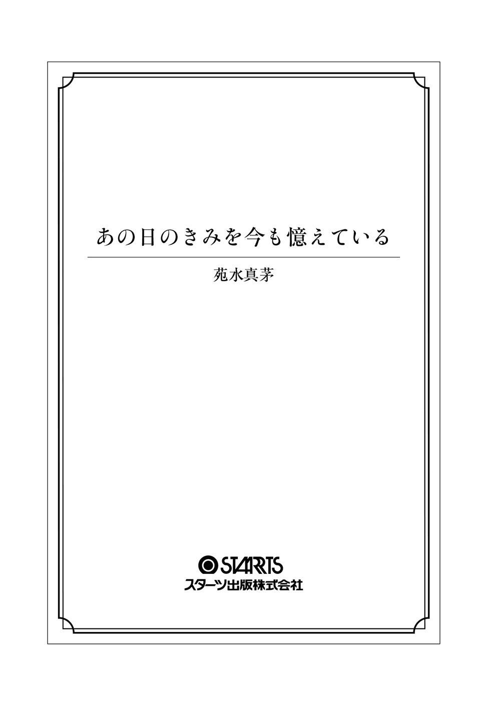

| あの日のきみを今も憶えている (スターツ出版文庫) | |
| 苑水真茅 | |
| スターツ出版 (2016) | |

あたしが生きていたことを憶えていて。
あたしを想ってくれたことを憶えていて。
あたしがあなたを愛していたことを、どうか忘れないでいて。
これはひと夏の、暑くて悲しい幻？
いや、幻になんて、させるものか。
『私が、きみを永遠にする』
想いは、言わなきゃ伝わらないのに。
言わなくても伝わって欲しいなんて、都合のいいこと考えてた。
きみを失う、この夏までは――。
六月二十六日（日） 晴れ
彼が言いだしたのは、本当に、突然のことだった。
「陽 鶴 ちゃんは、オレみたいな馬鹿は相手にできないんだよね。よく分かったよ」
それは、健全かつ、とても楽しかったデートの帰り。
私は最近ハマっている抹茶ラテをズルズルと飲みつつ、「美味しいねえ」なんて可愛く呟いたばかりだった。
「急にどうしたの、前 田 くん？」
「どうしたの、じゃないよ。陽鶴ちゃんみたいな可愛い子がオレと仲良くしてくれるなんてー、って浮かれてたけどさ。もう、いいよ。オレ、陽鶴ちゃんとは釣り合わないんだって理解した！ もう、連絡取るのやめる」
カップに刺さったストローから口を離した私は、急に顔を真っ赤にして怒りだした男の子をびっくり顔で見た。
えっと、どうして前田くんは急に怒りだしたの？
前田くんは、隣のクラスの男の子だ。体育の合同授業の時に話すようになって、仲良くなった。連絡先を交換したのは、半年前とか、それくらいだったと思う。たまに電話で話をして、友達数人と一緒に遊んだことのある仲。今日は、彼からふたりきりで遊ぼうと誘われて、初めて過ごした一日だった。
さっきまでとても充実した時間を過ごしていた。私は今日という日をすごくすごく満足していたし、前田くんもきっと同じ気持ちなはずだ。
だから、今彼が言うべきことは、こんな意味不明のことじゃないはずだし、なんならちょっと甘めの言葉なんかであってもいいと思う、のだけれど。
どうも、そんな雰囲気じゃない。
「ちょ、ちょっと待って。えっと、どういうこと？」
「どういうこと、じゃないよ。こんな遠回しに拒否されるの、マジで辛い」
「は？」
遠回しに拒否？ 私が？ いつ？ きょとんとしていると、彼は大きくため息をついた。
「オレ、美術館に社会科見学に来たんじゃないんだよ。ルノワールだとか、なんとかブルーだとか、解説してもらいたいわけじゃない。オレのこと馬鹿だって思ってるんなら、その通りだよ。超がつくくらい馬鹿だよオレ。陽鶴ちゃんの言ってること、全然意味分かんなかったもんな」
普段はおっとりとしゃべる彼が、早口で捲し立てていく。彼のスローな口調に慣れてしまっていた私は、聞き取るだけで精一杯だった。
「え、えっと」
前田くんの言葉を反 芻 しながら、なんとか意味を理解しようとする。だけど、本当に意味が分からない。
私、解説なんてした？ 確かに、少しだけ自分の知っている話をした。でもそれは、彼にもっと絵の良さを知ってもらいたかったからだ。それに、前田くんもそれを喜んで聞いてくれていると思っていた。
しかし、それはどうも大きな勘違いだったのかもしれない。いつもニコニコとしていたはずの彼は今、見たこともないくらい顔を歪 めていた。そして、私に苦 々 しげに言った。
「半年くらい陽鶴ちゃんと仲良くしてたけどさ。元々オレのこと好きじゃないんだもんな。この先もきっと、そうだよな。残念だけど、もう会わない」
彼はくるりと背中を向けた。
「じゃあね。さよなら！」
「え？ え？ 待って。待ってってば、前田くん！」
私が止めるのも聞かず、彼は一度も振り返ることなく、立ち去ってしまった。
――高校二年生の、六月最後の日曜日。
落ちていく太陽が、空を綺 麗 なオレンジ色に染めた夕暮れ。
私は、もしかしたら付き合うようになるのかもしれないと思っていた男の子に、いきなりフラれたのだった。
翌日の私は、とてつもなく不機嫌だった。どうして夏休み前の学校って、ムカつくくらい浮き足立っているんだろう。期末テストが終わった解放感と、夏休みの予定がどんどん具体的になっていくワクワク感のせいだとは思うけど、腹が立つ。ついさっき涙も出ないくらい情けないテストの結果が返ってきた上、昨日フラれたばっかりで予定なんて一切なしの私の心は今、荒 みきっていた。
いや、休みはもちろん嬉しいよ？ 朝寝坊できるだけで、充分だと思ってる。夏休み最高。ビバ夏休み。
だけどさ、みんなちょっと、浮足立ちすぎじゃない？ もうちょっと、私みたいな独り身の女の子に遠慮してくれてもいいと思うんだよね。
「浮足立つよ、そりゃ。だって、今年の夏は一生に一度しか来ないんだよ？ 陽鶴の都合なんて知ったこっちゃないね」
ぶつぶつと言う私をばっさり切り捨てたのは、友人である明 日 香 だった。私はそんな彼女にぶうっと頬 を膨 らませてみせる。
「私は、もう少し周囲への気遣いがあってもいいんじゃないかなって言ってんの」
「はあ？ 女王様のつもりなの、陽鶴。そんなことよりさ、これ見てよ」
明日香は目の前に、『簡単綺麗に浴衣 を着る本』なんていう雑誌を広げた。金魚柄の赤い浴衣を着た女の子が、可愛らしくポーズを取っている。
「浴衣を買ったんだよねー、私。この夏の間に、自分で着付けができるように教室に通う予定なの」
明日香は私の友人なのに、浮き足立ってる側の人間だ。今の時点で、夏休みの予定がギチギチに詰まっている。高校入学以来、友人同士であるはずの私たちの間には今、深い溝 が横たわっているわけだ。
「花火大会がふたつもあるし、浴衣で行けば入場料が無料になるイベントもあるんだって。絶対、着れるようになんなきゃ」
次の休みには、新作の水着を買いに行くらしい。夏休み前から、予定が詰まっているようでなによりだ。夏休み前 哨 戦 ってやつだね、張り切ってるね。
まあ、分からなくもないんだ。明日香の、生まれて初めてできた彼氏との初めての夏だからね。夢とか希望とか、たくさん詰まった夏になるんだろうね。ビキニがとてもよく似合うその豊かな胸には、幸せしか詰まってないんだろうね。ああもう、羨ましいな、クソ！
「いいなー、彼氏。私も欲しい」
すっかり温 くなったパックのジュースを飲みながら言うと、明日香がちらりと私に視線をよこした。ピンクのグロスの乗っかった唇を尖 らせて、「どの口がそんなふざけたこと言ってんのさ」と言う。
「どの口って、この口。だって私、フラれたんだよ？」
ストローから口を離し、私も明日香のように唇を尖らせてみた。無色のリップクリームしか塗っていない唇は、きっと明日香のように可愛らしく濡れてはいないだろう。そんな私に、明日香が続ける。
「前田くんは、陽鶴に相手にされなかったって泣いてたけど」
「はあ？ それさあ、どういうこと？」
机にジュースのパックを置き、抗議の声を上げた。
「私の方が泣きたいんだってば。急にもういいって言われて、置いていかれちゃったんだよ？」
「あんた、まだ分かってないんだね」
明日香が大 袈 裟 にため息をついた。睫 毛 エクステの縁取った、アーモンド形の大きな目が呆れたようにこちらを見るけど、分かっていないのでこっくりと頷 いた。
「だって本当に、何が悪かったのか分かんない」
「あのねえ......、まず、美術館が悪い」
「なんで？ 美術館がデートスポットとして不合格なんて話、聞いたことないよ」
「そうじゃなくって。陽鶴、モネだか何だかの絵の前で一時間以上も突っ立ってたんだって？ 耐えられなくなった前田くんが話しかけたら、絵についてずーっと語りだしたとか」
「へ？ あー......、うん。モネの『睡 蓮 の池』っていう絵の話かな。これがね、光の加減がすっごくいいんだよー。その絵の良さについて、前田くんと話をしたよ？ モネは晩年、白 内 障 を患 っていてね、彼の視力が低下しているのが絵のタッチにも現れて――」
「いやそれはどうでもいい。あんたの絵画ネタは聞き飽きてる。あのねえ」
言葉をズバッと遮 って、明日香は私の頭をちっちゃな子供にするようにぐりぐりと撫 でた。顎 のラインでばさりと切ったボブヘアが、明日香の手で揺れる。
「それが悪かったんだって、どうして分かんないかねえ、この子は」
「え！」
目を見開くと、明日香が「馬鹿な子だねえ、陽鶴は」とますます頭を撫でた。
「本気で分かってないのね。あのね、女の子とデートに行って、ずっと美術のウンチク聞かされてたら、男の子は辛いんだよー？ そのあげくに『知らなかったの？』なんて言われちゃ、馬鹿にされてるって思うの。男の立場ナシってやつ」
「お、おう。はい......」
「それと、ここも重要なんだけどね？ 美術館っていうのはデートプランの一部にするべきであって、丸一日を過ごす場所ではないの、世間一般的には」
「あ......う......」
子供にひとつひとつ言い聞かせるような明日香に、私は口をパクパクするしかない。だって、そんなこと思いもしなかった。
「あんたが美術オタクなことは私は知ってるし、全然いいんだけど。前田くんは知らなかったからショックだったんだよ。絵の方が、陽鶴にとって大事なんだって思っちゃったのね」
「そう、そっか......」
そういうことだったのか。私、彼も楽しんでくれていると思ってたのに。しゅんとした私の頭から手を離して、明日香が言う。
「それにさ、ほら、なんとかっていう美術展が終わるまで、陽鶴はほとんど前田くんの相手してなかったでしょ」
「ああ、『こうこうび』向けの絵でしょう？」
私は、美術部所属だ。専門は油絵。
小学生の時にエドガー・ドガという画家の、『エトワール』という絵の踊り子を見た私は、一瞬の煌 めきのような世界を描きたいと思ってやまなくなり、絵筆を握った。
彼の、淡く繊細なタッチは私をどうしようもなく惹きつけた。華やかさと愛らしさがみっちりと詰まった宝石箱のような世界を、私は初めて見たのだ。
しかし、何より魅了されたのは、キャンバス全体から漂う躍動感だ。今にも踊り子の裾が舞いそうで、腕がしなやかに動きそうで、目を離したら本当にそうなりそうで。その緊張感に、ただただ夢中になった。
ドガは、他愛ない瞬間を永遠に変える。そして、永遠に来ない『次』を見る者に想像させ、与え続けるのだ。絶妙な時間を切り取るセンスと、その美しい筆 致 に、数年たった今でも魅了されている。
あまりに『ドガ、ドガ』とうわ言のように口にする私のために、父は『エトワール』のレプリカをプレゼントしてくれた。これは今でも大切な宝物だ。私の部屋の中で、一番いい場所に大切に飾ってある。
名画というのは毎日見ていても飽きないもので、見るたびに新しい気づきを与えてくれる。何度、あの絵によって己を見直し、新しい一歩を踏み出せたかしれない。
......おっと。ちょっと熱が入りすぎた。
まあ、明日香の言う通りの、美術オタクってやつなのだろう。
そんな私は、一年生の冬から春先まで、集中して絵を描いていた。通称『こうこうび』、正式名称『高校国際美術展』という学生向けの大きな美術展に向けた作品である。
この絵は本当に気合いを入れて取りかかっていたので、何度となくあった、前田くんのお誘いを断り続けていたのだ。しかしそれも五月に終わり、秋の文化祭用の絵を描くにもまだ時間があるので、ちゃんと前田くんと向き合うぞ、と思っていた、のに。
「全部美術の後まわし。前田くんが怒るのも仕方ないよ」
「後まわしって、そんなキツイ言い方しないでよ。それに、時間取れるようになったし、ちゃんと前田くんとの時間を作らなくちゃって思ってたもん」
「へーえ。でも、絵より前田くんの方が大事、とは言わないのね」
「そっ、そんなことは......!! 私も、年頃女子なわけだし、彼氏欲しいなって思ってたもんっ！」
「へーえ」
「ホントだもん！ ああ、残念だなあ」
明日香の相 槌 が冷たいけれど、それを無視して言い続ける。そんな私に、明日香が「じゃあさ」と唇の口角を持ち上げた。
「じゃあ、私が合コンするからおいでって言ったら、来るのね？ 彼氏が欲しいだけなら、新しい出会いを求めればいいでしょ」
「あー、それは、ヤダ......」
声が、思わず小さくなる。
合コンて、苦手だ。だって何を話していいか分かんないし、あの妙な雰囲気とかノリについていけない。それに、会話のツナギにピカソの『ばら色の時代』と呼ばれる時期について語りだす女なんて、向こうだって願い下げだろう。今回のことで、私は学びましたとも。
「ほら、すぐそれだ。陽鶴ってば、彼氏欲しいなんていつも口ばっかり」
「欲しいのは、欲しいもん」
明日香の目が厳しい。それを避けるように目を逸らし、じゅるじゅると音を立てて、ジュースを飲む。しかしそれも、すぐに吹き出してしまう羽目になった。
「誰でもってわけじゃなくて、好きな人と付き合いたいってことでしょ？ いい加減告白したら？」と明日香がさらりと言ってのけたからだ。
「ど、どうし......てっ！ わ、たし、好きな人......とか！」
むせ返ってげほげほと咳込みながら言う私を見て、明日香はため息をついた。
「陽鶴との付き合いは、けっこう長いからね。好きな人がいることくらい、分かるって。前田くんだって、陽鶴が他の人を見てることに気がついてたよ」
「嘘！」
「ホント。だけど、私も前田くんも、誰かまでは分かんなかった。で、誰よ？ 同じクラスのやつ？」
帰りのホームルーム前の騒がしい教室を見渡して明日香が訊く。私はどうにか息を整えながら、ぶんぶんと首を横に振った。
「い、いないいない。この中にはいない」
「じゃあ、誰？ 友達としては、いい加減教えてもらいたいんだけどな」
少しだけ厳しい口調で、私を見つめる明日香に、口ごもってしまう。
こんな話、苦手だ。だけど、これまで何も言わなかった明日香がこんなことを言いだすってことは、よっぽど考えてのことなのだ。これまで好きな人の話なんて一切したことのない私に、明日香はイライラしていたのかもしれない。これは、「いないよー」なんて気軽に笑ってごまかせる話じゃない、気がする。
「お姉ちゃんの......」
「え？」
「お姉ちゃんの、彼氏」
「は？ 陽鶴のお姉さん......千 鶴 さんの彼氏って、あのインターンの？」
私の家に何度も遊びにきたことのある明日香は、私と五つ離れた大学生の姉のことも、その姉が三年ほど付き合っている医者の卵の年上彼氏のことも知っていた。彼が晴れて医者になれば、きっと結婚するんだろうと誰もが思うくらい、彼女たちが仲睦 じいことも。
「嘘......。あのお姉さんの彼氏、か。......ごめん、それはあんたに勝ち目はない、と言わざるを得ない」
明日香は、申し訳なさそうに言った。
姉の千鶴は、とても綺麗な人だ。父と母のいいところ、純粋な上澄み部分だけで作られたような美人さんだ。整いすぎた顔立ちは言わずもがな、背はすらりと高くておっぱいがおっきい。きゅっと締まった腰はとても高い位置にある。
対して私であるが、まあ姉の残り物で構成されておりますって感じ。鼻も低けりゃ背も低いし、寸胴だし。おっぱいなんてささやかにつつましい、ぶっちゃけ貧乳ってやつ。顔は、そんなに不細工ではないと自分では思っているけど、スカウトされるのもしょっちゅうな姉と比べたら、言い訳にしかすぎない。害のない路 傍 の石のようなもので、誰の目にも留まることはない。明日香の言う通り、まあ勝ち目はない。
「そんなわけなので、お察しの通り、好きな人とは付き合えそうにありません」
「ええ、分かりました。すみません」
明日香と向かい合って頭を下げ合い、それからふたりでため息をついた。
「えっと......、なんて言うか、ごめん。まさかお姉さんの彼氏とは思わなかったからさ。嫌なこと、言わせちゃったよね」
私の告白は、明日香にはショックであったらしい、あまりにもしょんぼりして言うので、申し訳なくなってきて、へらりと笑った。
「全然気にしないでよ。好きになっちゃった私が悪いんだし。それに、早く気持ちの踏ん切りをつけられるように、頑張ってるとこだしさ。前田くんには、悪いことしたけど」
「......そう、だね。うん、そうしなよ。私ももっと頑張って、陽鶴と気が合いそうな男の子探すし！」
「あはは、ありがとう」
笑い合ったところで、定年間近の担任が、のそりと教室に入ってきた。
「おーし、席つけー！ さっさと終わらせるぞ！」
「あ、と先生来た。じゃあ、席戻るね」
広げていた本を片づけて、明日香がバタバタと席に戻って行く。その背中を見ながら、私はほっとした気持ちと、ちょっとの罪悪感を抱えていた。
姉の彼氏が好きだなんていうのは、嘘だ。
あの人のことはとてもいい人だと思っている。だけど、それだけだ。
私は適当なことを言って、本心を明日香に隠した。だって、人を想う気持ちなんて、伝える気がないのなら口に出す必要はない。誰かに知ってもらう必要もない。
私は私の想いを、誰にも言うつもりはなかった。
それは、きっと永遠に。
七月に入ると、緩やかだった暑さが急に乱暴になった。頼りなく広がっていた雲も、白の密度を増した入道雲へ姿を変えていく。いつの間にか、夏の入り口に差し掛かっているらしい。
日中の暑さもすっかり影をひそめた日暮れ時。美術部の部室で画材の手入れを終えた私は、薄墨の広がり始めた空を見上げながら、ひとり帰っていた。ひんやりした風が頬を撫でていくのが心地いい。
初夏の夕暮れはとても好きだ。まだ暑さに馴染めない体を優しく労 ってくれている気がする。それに、この時期特有の空の色がなんとも綺麗なのだ。オレンジ色と群 青 色、深い黒がゆっくりと混じり合う様子は、いつまで見ていても飽きない。
「あ。フェルメールブルーだ。綺麗」
無限大の空のキャンバスにひときわ煌めく鮮やかな青を見つけて、指で作ったファインダーで囲う。偉大なる画家が愛した、ラピスラズリを溶いた色。金を内包した鮮やかに濃い青は、一番好きな色でもある。
空を眺め、ふんふんと鼻歌を歌いながらのんびりと歩く。そんな私の足を止めたのは、先を歩く一組の後ろ姿だった。
仲良さげに手を繋いで歩いているふたり。それは、隣のクラスの園 田 くんと美 月 ちゃんだった。
二年二組、園田杏 里 くん。おそらく百八十センチを超えるくらいに背が高く、顔立ちがとても整っている。意志の強そうな深い黒の瞳が印象的。高すぎず低すぎずのしゅっと通った鼻筋と、それに最高に似合った形のいい唇がバランスよく配置されており、女の子からの人気がとても高い。容姿だけでなく運動神経も抜群で、所属している陸上部で誰よりも足が速いというのも、魅力のひとつ。性格はというと、無愛想......いやいやクールで冷静。休み時間にほうきでバトルとか絶対しない、少し大人びた印象。我が校でも指折りの、イケメン人気男子である。
そして、樋 村 美月ちゃんは、その園田くんが長年付き合っている彼女だ。背の高い園田くんと並んでいても全くひけをとらない長身の持ち主で、モデルのような体形をしている。顔立ちはとてもとても可愛らしく、肌なんて陶器みたいにつるつるで、腕利きの職人が作ったビスクドールみたいだ。背中の中ほどまで伸びた栗色の髪は緩くウェーブがかっていて、一本一本が絹糸のよう。身内自慢になってしまうかもしれないけれど、美貌の姉の千鶴と比べて勝るとも劣らない、完璧な美少女だ。
そんな美月ちゃんはブラスバンド部に所属していて、ブラバンでも花形の、トランペットを担当している。彼女の吹くトランペットはとても澄んだ音をしていて、そしてその佇 まいがとても綺麗で、私はしばし彼女の姿に見 惚 れたこともある。イケメン園田くんの彼女として、彼女以上の人はいないと思わせる、最高の子だ。
素敵なふたりは中学生の頃から付き合っていて、校内では『おしどり夫婦』だなんて呼ばれている。その呼び名に納得しない人はいない。だってふたりは本当に、その言葉がぴったりなくらいお似合いだから。
思わず足を止めた私だったが、すぐに歩きだす。彼らはとてもゆっくりと歩いていて、しかも時折足を止めてじゃれ合うものだから、抜かざるを得なかったのだ。だってその先に私の家があるんだから、仕方ない。
しかも、邪魔をしたくない、などと考えてまごまごしていたら、夕飯の時間に間に合わない。我が家の母は、時間厳守なのだ。連絡なしに遅れたら、おかずを一品減らされかねない。それは御免こうむる。私は絶賛、成長期なのだ。
「おつかれさま」
通り抜けざまに声をかけると、美月ちゃんが「あ！ 陽鶴ちゃんだ！ 今帰り？」と微笑んだ。その笑顔はひまわりの花がふわっと開いたみたいに、華やかで可愛い。
「うん。ふたりも部活帰り？」
「そうなの。ほら見て、あーくんったら、部活のしすぎでこんなに日に焼けてるの。真っ黒すぎじゃない？」
大きな口を開けてケラケラと笑う美月ちゃん。彼女はとても綺麗なのに飾ったところがなくて、いつも自然体でいる。だから、人気のある園田くんと付き合っていても、美月ちゃんを嫌う女の子は、いない。
美月ちゃんに真っ黒に日焼けした腕を示された園田くんは唇を尖らせた。
「仕方ねえだろ、日焼けは！ おつかれさま、福 原 さん」
園田くんがペコ、と頭を下げる。それだけで、あとは私の方なんて見ない。園田くんは、本当に無愛想なのだ。美月ちゃんの前では優しく笑うのに、他の子には決して笑わない。必要以上に話したりもしない。
そういう『美月ちゃんだけ』なスタイルは、女の子たちにすごく好評だ。
「本当に、すごく焼けてるね。夏って感じ」
だから私は、美月ちゃんに向かって言った。確かに、園田くんは『こんがり』という表現がぴったりなほどに日焼けしていた。真っ白の美月ちゃんの横にいると、なおさらに真っ黒に見える。
「でしょ？ すごいよね」
「あ、熱中症にだけは気を付けてね。いっぱい水分摂らないと」
「大丈夫。毎日二リットルのペットボトルを二本持たせてる！ 塩分も必要だっていうから、梅干しも！」
美月ちゃんが、園田くんが肩にかけていた大きなスポーツバッグをポンポンと叩いた。
「なら、いいね。あ。信号変わっちゃったから、先行くね」
少し先の信号が、赤から青に変わった。あの交差点の信号は、なかなか青に切り替わらないのだ。私はふたりに手を振って、走りだした。
「またねー！」
美月ちゃんのにこやかな声が、背中にかかった。
「ただいまー」
「お帰りー。今日の夕飯は、とんかつだってさ」
交差点から家まで、走って五分だ。息を切らせて玄関に滑り込んだ私を出迎えてくれたのは、姉の彼氏であるワタルさんだった。眼鏡をかけた、気のいい笑顔を見せる彼を見て、思わずクスリと笑う。
うん、やっぱり私の好みではない。すごくいい人だけど。お兄ちゃんとしては、最高だと思うけど。
「ヒィちゃん？ どうかした？」
ワタルさんが首を傾げる。
「ううん、なんでもない。すぐ着替えてくるね！」
ぷるぷると首を振って、急いで部屋に向かったのだった。
姉の彼氏が好きだと言ったのは、よくなかったかもしれない。私はどうも、先のことを深く考えないところがあるのだ。うん、それは昔からの悪い癖。
というのも、叶わぬ恋をしていると告白した翌日から、明日香に夏休みの予定を幾つか埋められそうになったのだ。
「合コンじゃないから！ 建 ちゃんの友達と四人で遊ぼうってだけだから！ しかも、千鶴さんの彼氏さんに似た感じなんだよ！」
建ちゃんというのは、明日香の彼氏だ。隣の高校のひとつ上の先輩で、お笑い芸人を目指している。とても明るくてノリがいい人だ。私は彼の、いつでも全力ハイテンションなところが少しだけ苦手だ。彼についていくには、私には少々元気が足りないのだろうと思う。
「ご、ごめ......。そういうの、まだいいっていうか、うん」
おずおずと謝る私は、明日香の友情に応えられないクズだ。
私の返事は明日香の想定外だったようだ。一瞬、明日香は眉根を寄せた。それから、「でも、他の人を見ようとすることも大事だよ。陽鶴も、前田くんのことをそう考えてたんでしょ？」と言う。
「......うん。でもまだ気持ちの準備ができてないっていうか、前田くんには悪いことしたなって反省してるんだ。だからあの、そういう気持ちになったら言うから、ね」
申し訳なさそうに言う私に、少しだけ不満そうな顔をした明日香だったけれど、すぐに「気にしないで」と口角を持ち上げる。その優しさに、胸が痛んだ。
その日の帰りは、いつもより足取りが重かった。
「あんな嘘つくんじゃなかったよなあ」
ふう、とため息をつきながら呟く。やっぱり、「好き」という気持ちを偽ったのは気分がよくない。それに、私のことを本当に気遣ってくれている明日香の顔を見ると、激しい罪悪感に襲われてしまう。だけど、本心は言えない自分勝手な私。
道端に転がっていた石をこつんと蹴る。ころころと転がった石を追いかけようとした私は前方に視線をやって、ふうんと鼻を鳴らした。
「......よく会う」
先日と同じように、仲睦まじく帰宅している園田くんと美月ちゃんの姿があった。今日は仲良く一本のジュースを飲んでいるらしい。ペットボトルがふたりの間を往復しているのが見えた。夕日に照らされたその姿は、『ザ・青春』て感じだ。
「なんか、絵になりそう」
指でファインダーを作ってふたつの後姿を切り取る。ほら、すごく可愛いらしい絵になる。タイトルをつけるなら、『初夏の睦み』とか？ いやちょっと重たいかな。クスリと笑って、ふたりを追い越すべく足を運んだ。
「おつかれさま」
「あー、陽鶴ちゃん、おつかれさま！ こないだも会ったよね」
声をかけると、美月ちゃんがにっこりと笑う。私も、できる限り笑ってみた。
「そうだね。よく会うよね。じゃあね」
手を振って横を通り過ぎようとしたその時だった。
「あ、陽鶴ちゃん！ そういえば、同窓会の連絡来た？」
美月ちゃんが私を呼び止めた。
「へ？ 同窓会？」
知らなくて思わず足を止めてしまうと、美月ちゃんが「まだ来てないのかぁ」と言う。それから、長い髪を耳にかけながら言う。
「なんかね、中学校の時の同窓会が計画されてるみたいなんだ。もうすぐ夏休みでしょ。その間にやろうって」
私と美月ちゃん、園田くんは同じ中学だった。しかも、美月ちゃんとは三年間同じクラス。
「へえ、そうなんだ。美月ちゃんたちは、行くの？」
「うん！ せっかくだし。それに、計画立てた喜 和 子 たちから、絶対参加してって言われてて」
ね？ と美月ちゃんが隣を窺うと、園田くんが面倒くさそうに頷いた。
「普段でもけっこう同中のやつに会うし、仲いいやつとは遊ぶし、同窓会なんていっても全然懐かしくないけどな」
「あーもう！ あーくんったら、またそんなこと言うんだから！ 会ったら絶対楽しいもん！」
ぷう、と頬を膨らませてみせた美月ちゃんが、私に顔を戻す。
「陽鶴ちゃんも、よかったらぜひ参加してね。せっかくだから、みんなで会いたいし」
「あー、うん」
......ごめん、美月ちゃん。私も、園田くんと同じくちょっと面倒だわ。仲の良かった子たちとは、それぞれ個別に会えばいいわけだし。それに中学校にはあんまりいい思い出ないし。だけど、この天使のような笑顔の前ではそんな冷めたこと言えなくて、曖 昧 に笑った私だった。
話しながら歩いているうちに、私たちは交差点の信号に捕まることになった。
ああ、やだな。なんでここの交差点は、青になるまで時間がかかるんだろう。なんだか私、ふたりの空気をお邪魔してるって感じ。
少しの距離を彼らと取って、信号が変わるのを待つ。美月ちゃんは園田くんの腕に自分の腕をからませて、ジュースを飲んでいる。綺麗な喉が露わになって、可愛い子はどんな角度でも可愛いなとぼんやり思う。
園田くんはその間、自分の腕にくっついている美月ちゃんの頭を撫でている。ごつごつした手が、最上限に優しく動いているのを、絵画を見ているように見つめた。
「あ、信号変わったよ」
長い長い赤が、青に変わって、私はほっとする。
「ここの信号、長すぎだよねー。さ、行こう！」
園田くんの腕からするりと離れた美月ちゃんが、私の横をすり抜ける。軽やかな彼女を追うように、足を進めた。
「美月。走るとこけるぞ」
園田くんが柔らかな声で言った、その時。視界の端に、真っ直ぐに向かってくるトラックの姿を捉えた。
......え？ な、に？
一切スピードを緩めることのないトラックは、私たちをゴールだと言わんばかりに突進してくる。
これは、だめだ。いけない。
『死』という単語が頭をかすめた。巨大な乗り物が、あのスピードに乗って迫ってきたら、私の体なんて脆 くも潰れてしまうと、本能で分かる。
「危ない！ 美月！」
鋭い園田くんの声が聞こえた。
危ない。そうだ、危ない。逃げなきゃ、と思った次の瞬間、私の記憶は、ぷつんと途絶えた――。
廊下に、机が放り出されている。教科書も、ノートも、椅子も、付属する物は全てばらばらに散らばっている。買ったばかりのクロッキー帳がだらしなく開かれていて、そこには靴跡が幾つもついていた。
『やだ、かわいそー』
『誰か拾ってあげたらー？』
屈 んで拾い集めていると、ねっとりとした笑い声が降ってくる。排油みたいな笑い声が、私を黒く包んでいく。
芯の折れた鉛筆や、破られた教科書を拾い集めながら、ああ、これは夢だなと思う。この悪夢は知っているし、終わりがあることも、知っている。
それでも、心が悲鳴を上げる。夢であっても、もうこんなの二度と体験したくない。嫌だと言う。
『夢ならさっさと覚めなさいよ！』
消しゴムを放り投げ、叫び声を上げたところで、全身に痛みが走った。
「......ん、む......」
耐えられない痛みに、目を開けた。目を閉じていた、ということはやっぱりさっきのは夢だ。って、夢......、私、寝てたの？
視界には、見慣れない真っ白な天井が広がっていた。え、何ここ。どこ？ ていうか、私、どこで何してたんだっけ。
自分の置かれている状況が掴めない。何度も瞬きを繰り返して、それから体を動かしてみた。体の節々が痛む。長く動かしていないような違和感があった。それから、思うように動かない顔をどうにか動かして、周囲を見渡した。
「ここ、どこ......？」
「ヒィ!? 目が覚めたのね！」
私の顔をずいと覗き込んだのは、姉の千鶴だった。泣いていたのか、目の周りを真っ赤にしている。
「あ、れ？ お姉ちゃ......？ 私、どうしたんだ、っけ......」
「事故に遭ったの！ 意識取り戻さなくて、もう、心配で......」
わあ、と泣き崩れた姉の肩を抱いたのはワタルさんだった。彼もまた目の縁を赤くして、「よかった」と言った。
「ホントによかった。僕、お母さんたちに連絡してくるよ。さっき、家に帰ったばかりなんだ」
「え？ あの、私......よく理解できなくて。事故って......？」
記憶があやふやだ。私は何をしていて、ここにいるんだ？ ぱちぱちと瞬きを繰り返す私に、ワタルさんが「落ち着いて聞いてね」とゆっくりと言った。
「帰り道に、家の近くの交差点で、ヒィちゃんは事故に遭ったんだ。居眠り運転のトラックが突っ込んできて、君は車に弾き飛ばされた」
「トラッ、ク......、事故......」
言葉にすると、少しずつ記憶が戻ってくる。
ああ、そうだ。私は交差点を渡ろうとして、突進してくるトラックを見た。そして、園田くんの『危ない』という叫び声を聞いた。
「え......ああ、そうだ。トラックが向かって来たんだ。私、びっくりして......」
「そう。それでね、君は幸いにも大きな怪我もなく、助かったんだよ。それでも、丸一日、目覚めなかった」
「うわああん、よかったぁぁーー！」
姉の泣き声が、ワタルさんの声に覆いかぶさった。
そっか。私、あの時トラックとぶつかって、でも生き永らえたってわけか......。
のろのろと両手を持ち上げる。右手に包帯が巻かれている。ピリピリと痛んで無意識に顔が歪むけれど、しかしちゃんと動く。グーパーを繰り返してみると、両手は意思に沿ってきちんと動いた。足も動かしてみる。声が洩れるくらいの痛みが右足に走ったけれど、でも動かせないほどでもない。
ああ、大丈夫だ。体に、目立った不備はない。そんな私の考えていることが、ワタルさんには分かったのだろう。泣き笑いのような表情を浮かべた。
「大丈夫。後遺症の残るような傷は、一切ない。これからも、絵は描けるよ」
「そ、っか。よかった」
ほっと息をついて、そしてその時ようやく思い出した。
あの場に、私以外の人間がふたりいたことを。
ワタルさんに目を向け、「どうなったんですか!? 」と叫んだ。
「私と一緒にいた園田くんたちは、どうなったんですか！」
ワタルさんが、眼鏡の奥の瞳をぎゅっと閉じた。それは、彼が都合の悪い時にみせる仕草だ。心臓が力任せに掴まれたように痛む。
「ワタルさん！」
叫ぶように訊いた私に、ワタルさんはゆっくりと言った。
「君と一緒にいた、ふたりは......」
――美月ちゃんは、あの事故で命を落とした。
季節には少しだけ早いひまわりで鮮やかに彩られた祭壇の中央には、どの花よりも生き生きとした、天 真 爛 漫 に笑う美月ちゃんがいた。
「即死ですって......。あんないい子が、なんて惨 い......」
「なんでぇ？ なんで美月が死ななきゃなんないの！」
「嘘だよ、嘘って言ってよ、美月ぃ......」
たくさんの弔 問 客 で溢れた斎場は、哀傷に満ちていた。誰もが涙を浮かべ、美月ちゃんの早すぎる死を悼 んでいた。
姉とワタルさんの手を借りて、どうにか葬儀会場にやってきた私だったが、すぐにその深い嘆きに呑まれた。
美月ちゃんは、過剰な表現でもなんでもなく、言葉通り本当にみんなに愛された子だった。誰にでも優しくて、朗らかで、明るくて、愛されるのが当たり前の子だった。そんな彼女がどうして、十六歳なんて年齢で命を絶たれなければいけないのだろう。
「陽鶴！ あんた、大丈夫なの!? 」
私に気づいたのは、明日香だった。泣きすぎてアイメイクがはげ落ちている明日香は、私を見てますます泣いた。
「私、陽鶴まで死んじゃったらどうしよう、って......。よかった。生きてくれて、ホントによかったよぉ......」
「ありがと、明日香......」
痛む体を動かして、明日香を抱きしめる。明日香は抱きしめ返してくれて、それから私の顔を覗き込んだ。
「顔の傷、ひどい......。痛むでしょ？」
私は、右腕と右頬に擦り傷、右足首に捻挫を負っていた。右頬の擦り傷はけっこう大きくて、青あざもできていて見た目はひどいけれど、しかしそんなのは日が経てば治るものだ。
何より、私は死んでいない。命があるだけ、幸運だったのだ。
「大丈夫。こんなの、平気」
明日香を安心させようとそっと笑ってみせて、祭壇に向かって歩き始めた。ふらふらと歩く私の傍 に、姉と明日香が付き添って支えてくれた。
美月ちゃんの笑顔が近づく。真っ白な白木の柩 の上には、彼女の愛用していたトランペットが静かに置かれていた。
遺影を見上げる。いつもと変わらない、しかし物言わぬ笑顔に、胸が締め付けられる。姉と明日香の腕を掴んだ手に、力が籠もった。
最後の時、美月ちゃんは笑っていた。スカートの裾を軽やかにひらめかせ、私よりも園田くんよりも、生き生きとしていた。
なのに、嘘でしょう？ 美月ちゃんが死んじゃったなんて、嘘でしょう？
「美月、ちゃ......」
名前を呼ぶ声が潤む。喉の奥から大きな塊 のようなものが込み上げてきて、呼吸を止める。息苦しさにむせ返る。
だけど、まだ、実感が湧かない。こんな場所に身を置いても、納得できない。本当に、美月ちゃんは死んじゃったの？ それを認めなくちゃいけないの？
「これは冗談でーす！」って言って、おどけて出てきたっていいんだよ？ 美月ちゃんなら、みんな許してくれるよ。笑ってくれるよ。
だから、ほら、出てきてよ。
「ヒィ。彼女に、お別れの挨拶をしなさい」
姉に促されて、柩に向かう。そっと、覗き込んだ。狭そうな桐の箱の中で、美月ちゃんはただ眠っていた。
擦り傷ひとつない。私の頬の方がよほどひどい状態だと思う。なのに、どうして美月ちゃんがこんな所に入っているの？
まるで、白雪姫だ。そうじゃなければ、王子様のキスを待っている眠り姫だ。きっと愛する人のキスさえあれば、彼女はするんと起き上がって、あの素敵な笑顔を浮かべてくれるんだ。
ねえ、美月姫。王子様はどこ？ 私、呼んできてあげるよ。
清らかな寝顔に語りかける。王子様はどこ？ ねえ、美月ちゃん......。
その時、背後で「大丈夫？」と声がした。のろりと振り返ると、遺族席の端っこでうずくまる園田くんがいた。
――あの事故で死んだのは、美月ちゃんだけだった。私も、園田くんも、どうしてだか死ななかった。
私と同じように擦り傷だらけの園田くんは、顔色を真っ白にしていた。過呼吸を起こしたらしく、呼吸を荒げている。
「大丈夫ですか？ これを被 って」
斎場の職員さんが慌ただしくやってきて、園田くんに紙袋をかぶせる。
「ゆっくり呼吸して。大丈夫。ゆっくり。楽になるから」
痙 攣 するかのように体を震わせていた園田くんの体が、次第に落ち着く。
「だ、いじょうぶ、です......」
それからしばらくして、弱々しい声がした。
「杏里くん、あなたも事故の後で、まだ無理をしちゃいけない体なのよ。お願いだから、控室で休んでてちょうだい」
美月ちゃんのお母さんが泣きはらした目で園田くんに言う。私が姉たちの力を借りないと動けないように、園田くんもきっと、体がキツいのに違いない。なのに彼はずっとここにいたのだろうか。
「大丈夫です、俺......」
袋の下で、彼が小さな声で言う。
「美月の傍に、いたいんです......。死んでも」
それは、今まで聞いたことのない園田くんの声だった。頼りない、小さな子供のようだ。園田くんは、か細く繰り返す。
死んでも。俺は死んでも美月の傍にいたいんです。
彼の必死の声に、誰も何も言えなかった。だって彼が誰よりも美月ちゃんを大事にしていたことを、知っているから。本気でそう願っていると、分かっているから。
「......馬鹿なこと、言わないで。杏里くんが死んだら一番悲しむのは、美月よ」
果たして、涙声で、美月ちゃんのお母さんが言う。
「だから、そんなこと言わないで。美月のためにも、杏里くんは頑張らなきゃ」
「すみま、せん......。俺......」
「あーくん！」
そんな時、澄んだ声が響き渡る。その声を聞いた私は、耳を疑った。
――え。まさか。そんなこと、あるわけがない。だけど。
のろりと振り返り、斎場の入り口を見る。
人ごみの中に凛と立つその子を捉えた瞬間、肌が総毛だった。足先からすうっと血の気が引いていく。
なんで。まさか。見違えるわけがない、けれど、あり得ない。
だって、その子は祭壇の上で笑っている。柩の中で眠っている。
「美......月、ちゃ......？」
出入り口から、園田くんに向かって真っ直ぐに駆けだしていくその子は、美月ちゃんその人に他ならなかった。
「あーくん！ あたしここにいるよ！ ここにいるの！ ねえ、気づいて、あーくん！」
制服のスカートを確かに揺らして、長い髪を振り乱している。幻でもなんでもない。それは、確かに美月ちゃんだった。
でも、どうして？ だって美月ちゃんは、死んでいる......。
「あーくん！ あたしはここだよ！ ねえ、気づいて！ お願い！」
美月ちゃんが園田くんに縋 った。はずだった。
しかし、美月ちゃんの体はするりと園田くんの体をすり抜けて、彼の座っている椅子をもすり抜けた。彼女は支えも何もなく、床に倒れ込む。
そして、園田くんも、彼を介抱している斎場職員さんも、彼女の両親すらも、それに気づいた様子はなかった。美月ちゃんはまた体を起こし、園田くんに向かう。
「あたしここだよ！ ねえ、あーくん！ お母さん、お父さん！ ねえ、あたし、ここにいるの！」
美月ちゃんは、園田くんを介抱する両親に向かった。だけど、誰も美月ちゃんが見えていない。声も、聞こえていない。
まるでそこに美月ちゃんがいないかのように、ただ、悲しみに暮れている。
これは、何......？ 何なの......？ 何が、起こってるの......？
「何、これ......」
思わず呟いた私の小さな声は、ちゃんと姉に届いたのらしい。
「どうかした、ヒィ？」
「お姉ちゃ......何、これ......」
震える指先で、美月ちゃんの方を指差す。しかし姉は遺族席を悲しそうに一 瞥 したあと、「どうかした？」と訊いた。明日香も、「何かあるの、陽鶴？」と不思議そうに言う。
......やっぱり、お姉ちゃんたちにも美月ちゃんの姿は見えていない。
これは、美月ちゃんの幽霊？ 私だけが、見えてるの？ でも、どうして？
誰にも見つけてもらえない美月ちゃんが、涙を拭いて周囲を見渡す。
「ねえ。誰かあたしが見えない？ ねえ、お願い。あたしを見て。あたしに気づいて」
身を裂くような叫び。斎場内に高く悲しく木 霊 するのに、反応する人はいない。みんな、彼女の死に涙し、その悲しみに耐える遺族に同情するばかりだ。
死んだ彼女こそが、ここにいるのに。
「ねえ。お願い。あたしに気づいて、誰か、誰か――っ！」
彼女の絶叫に、私の心が悲鳴を上げる。
この場所で、彼女のこの叫びを聞いているのは、きっと私だけだ。両親でも、園田くんでもない。どうして、私だけ。
涙を手の甲で拭った彼女がきょろきょろと視線を彷 徨 わせる。それが、一点で止まった。私の視線と、かち合って。
「陽鶴、ちゃ......？」
悲しみで染まっていた瞳に、希望のような光が見える。
「もしかして、あたしのこと、見えてる......？」
見えてるよね!? そう叫んで駆け寄ってくる美月ちゃんの姿を見ながら、私は気を失った。
私はまた、夢を見ているらしい。
教室のど真ん中に、私の机だけが取り残された島のように置かれている。みんなはそれを遠巻きに眺めていて、クスクスと笑っている。
『死ね、バーカ』
誰の言葉だろう。私ではない、私以外の全ての人の言葉だろうか。傷つけるためだけに吐き出された言葉は、迷いなく私の心を貫 いていく。
『やめて』
嘔 吐 しそうな思いでようやく紡 いだ言葉も、『黙ってろよブス』となんの躊 躇 いもなく潰される。
『うるせえんだよ。今すぐ死ね』
ああ、なんて嫌な夢なんだろう。こんな嫌な気分になる夢、しばらく見ていなかったのにたて続けに見るなんて。
夢なのに、体が震える。息ができなくなる。感情を乗せた言葉は、武器になって呪いになる。
『お願い、やめて』
『うわ。うっぜぇ、このオンナ。泣いてんのー？』
皮膚呼吸すら止めてしまうような、全てを否定する嘲 笑 に体が制止する。動きを止めたはずなのに、汗だけはじっとりと滲 んで、背中を伝う。
大丈夫だと、必死に言い聞かせる。だってこれは、夢だ。これは、現実じゃない。とっくの昔に過ぎ去った、幾つかの過去のひとつだ。だから、きっとこの後に救いがあることも知っている。
俯 いた、その時。柔らかな声が降ってきた。
『......大丈夫だよ、陽鶴ちゃん』
『―――ちゃん？』
『あたしがいるよ。もう、大丈夫』
「......っ！」
目覚めた時に見たものは、薄暗い、自室の天井だった。どうやら私は、自分のベッドに横たわっているようだ。
「あ、え......？」
何度も瞬きをして、それから目を擦 る。やはり、なんの変哲もない自分の部屋だった。あれ？ 私、どうして部屋で寝てるんだっけ......。
「起きた？ ヒィちゃん」
私の顔を覗き込んだのは母だった。
「あれ？ お母さん、私、えっと......」
「どうしても樋村さんのお葬式に行くって言ってきかないから行かせたけど、まだ無理しちゃいけなかったのよ。ヒィちゃん、途中で倒れたの覚えてる？」
「あ、そっか」
ぼんやりと思い出す。そうだ、私は美月ちゃんのお葬式に行って、そこであり得ない幻を見て倒れちゃったんだ......。
なんて幻を見たんだろう。誰にも見つけてもらえなくて泣き叫ぶ美月ちゃんの幽霊なんて、趣味が悪すぎる。顔を歪めた私だったが、頭にひんやりしたものを感じてはっと我に返る。母が頭をゆっくりと撫でてくれていたのだ。
「チィと明日香ちゃんが支えてくれてたから、倒れ込まなくって済んだのよ。もう、お願いだから心配させないで」
「ごめんなさい......」
そう言う母の顔には疲れが滲んでいた。
もしかしたら、母は私が目覚めるまでずっとここにいてくれたのかもしれない。
申し訳なさを感じて、顔の半分以上を布団の下に隠して謝った。
「悪いと思うのなら、せめて今日一日はゆっくり寝ていてちょうだい。後で部屋までご飯持ってきてあげるから」
「ありがと......。ねえお母さん、今何時くらい？」
カーテンを閉じた部屋は薄暗い。壁にかけられた時計の文字盤が見えなくて訊くと、立ち上がった母がカーテンを開けた。途端に、まばゆい光が室内に飛び込んでくる。
「朝の九時前。ヒィちゃんは昨日のお葬式で倒れてから、ほとんど一日眠ってたのよ」
「そんなに」
眩しさに目を細めながら呟く。
「じゃあ、美月ちゃんのお葬式、終わっちゃったんだね......」
「そうよ」
胸の奥に重たい物が落ちる。もう本当に、この世に美月ちゃんはいないんだ......。
「食事は軽い物からがいいってワタルくんが言ってたから、お粥でも作ってくるわね。卵、入れる？」
母が窓を開け、換気をする。温い風がさあっと室内に流れ込んできた。それと同時に、蝉の大合唱が飛び込んでくる。
「うーん。お粥じゃなくて、卵雑炊にして。海苔とネギがいっぱいのったやつ」
「はいはい。まあ、食欲があるなら何よりね」
安心したわ、と母は笑って、部屋を出ていった。
「んー......っ」
布団の中で大きく一回伸びをして、ゆっくりと体を起こした。長く眠っていたせいなのか、体が少し言うことをきかない。怪我をしている手足がピリピリと痛んだ。次いで、くらりと貧血のような眩暈 がして、全身を襲う不快感に顔をしかめる。
「あー、クソ。調子悪いな」
「大丈夫？ 陽鶴ちゃん」
「あー、大丈夫大丈夫。こんなのちょっとすれば治......え？」
今、あり得ない声がした。その声がした方を見れば、窓際に美月ちゃんが立っていた。
「え」
美月ちゃん？
「ごめんね、勝手に部屋の中に入って。あのね、その、あたし、どうも陽鶴ちゃんから離れられなくなっちゃったみたいなの」
「は？」
目の前の美月ちゃんは、私の知っているいつも通りの、普段通りの姿だ。
我が校の、ちっとも可愛くない夏の制服。袖が少し膨らんだ白いブラウスに、襟元にきゅっと結ぶ赤いリボン。ヒダが太めの、膝丈のプリーツスカート。田舎の子供合唱団みたいな、クソダサい制服。
しかし彼女はいつでもそれを可憐に着こなしていた。私の憧れの長くて艶やかな髪も、それをそのまま背中に流しているのも、普段と同じ。
でも、美月ちゃんは確かに亡くなっている。お葬式も済み、美月ちゃんの肉体はすでにこの世に存在していないはずだ。てことは、この美月ちゃんは、幽霊？
それにしては、彼女の体は全然透けていなくて生身って感じで、ほら、足だってちゃんと......。
「浮いてる」
紺のハイソックスに革のローファーを履いた彼女の足は、フローリングより僅 かに浮いていた。そして。
「影が、ない」
さんさんとした朝の日差しを背に受けているというのに、彼女の足元には影と呼べるものが一切なかった。アホの子みたいに口をポカンと開ける私に、美月ちゃんが困ったように眉尻を下げて笑う。
「あ、うん。あの、あたし、幽霊ってやつみたいなの」
え。やっぱりそういう呼び方していいやつですか。
次の瞬間、私はひと欠片 の迷いもなく、容赦なく自分の頬を殴った。スパコーン！ という激しい音とともに、頬に間違いのない痛みが走る。
「うお......いった......ぁ」
痛みが走るっていうか、痛い。とにかく痛い。涙出た。この痛み、間違いなく現実だ。
「きゃあ！ 陽鶴ちゃん、急にどうしたの!? 」
「い、いや。なんでもない」
じんじんする頬に手を添えて、痛みで少し涙が滲んだ目で、美月ちゃんを見た。やはり彼女は当たり前にそこにいて、消えない。
「美月ちゃん、ごめん。私、この状況に全然ついていけてない。ええと、どういうことになってるのか、確認してもいいかな」
彼女はコクコクと頷いた。
――私の目の前にいるのはやはり、美月ちゃんの幽霊であるらしい。
彼女が言うには、気づいたら自身の葬儀の、弔問客のど真ん中に立っていたのだそうだ。
「びっくりした。『樋村美月儀 葬儀』なんて看板は出てるし、みんながあたしの名前を呼んで泣いてるし。それに、話しかけても誰も気づかなくて、何も触ることができないの。触ろうとしたらスイってすり抜けちゃうんだ。タチの悪い夢を見てるんだと思った」
悪い夢だ。起きなきゃ。そう思うのに、夢は一向に覚めない。焦 った美月ちゃんは、泣いて叫んで、周囲の人みんなに声をかけた。だけど、誰も気づかない。美月ちゃんを見ない。
「そんな時、あーくんを見つけたの。あーくんなら絶対あたしのこと気づいてくれるって思った」
美月ちゃんの顔が少しだけ明るくなって、そしてすぐに曇った。
「けど、陽鶴ちゃんも見てた通り、無理だった......。へへ」
視線を床に向けて、頼りなく洩らした声は泣き出しそうに聞こえた。
確かに、園田くんは全然彼女に気づいていなかった。あんなに憔 悴 して、死んでも一緒にいたい、なんて言っていたのだ。
姿を見ることができていたら、どれだけ救いになっただろうと思うのに。
「あの時の、あたしを見ないあーくんを見て、ああ、本当に死んじゃってるんだって悟った。そしたらさ、色んなこと思い出したんだ。トラックが......あたしにぶつかってきたことも。救急車で運ばれて、でもそのまま死んじゃったことも」
「美月ちゃ......」
「ひどいよねえ。あたしの人生、まだまだこれからなのにさ。超セクシーな美女モデルにだって、女子アナウンサーにだって、人気小説家にだって、何にだってなれたのにさ。あっさり死んじゃうんだもん。あんな、一瞬でさ。ホント、ひどいよね」
頬をゆっくりと掻いて、彼女は力なく言う。
何も、言えなかった。何を言えるだろう。私たちは同じところにいて、同じようにトラックに接触した。私は少しの傷で済んで、美月ちゃんは命を落とした。私たちの生死の境目なんて、きっと大きな差はない。
それは、運、と呼べる程度のものだったのだろう。私の方が美月ちゃんより僅かに運がよかった、それだけのこと。そんな私が、彼女にどんな声をかけられるというのだろう。布団の端っこを握りしめていると、彼女がぱっと明るい顔つきになった。
「でもね、そんな時に陽鶴ちゃんが気づいてくれて、嬉しかった！ あたしのこと見えてる人がいるじゃん！ って」
「......うん」
「あの時、すっごく嬉しかった。真っ暗な世界で唯一の光......まさにそんな感じだったんだ」
美月ちゃんは嬉しそうに笑って続けた。
「でさ、陽鶴ちゃん、気を失ったじゃない？ で、お姉さんたちが慌てて斎場から連れ出してたんだよね。あたし、陽鶴ちゃんと話したいと思ってついてきちゃったの」
自分の姿を見ることのできた私となら、会話もできるかもしれない。そう考えた彼女は、ワタルさんの運転する車に同乗してきたのだそうだ。
しかし、待てど暮らせど私は目覚めない。
「ずっとここに居座るのも申し訳ないし、陽鶴ちゃんが寝ている間に、家に帰ったりあーくんにもう一度会いに行ったりしてみようとしたんだ。もしかしたら、見えるようになってるかもしれない、なんて期待があったし。でも、それができなかったの。陽鶴ちゃんから離れようとこの部屋を出たら、そこから先に進めなくなっちゃうの」
「進めない？」
「うん。体が引っ張られて、一歩も踏み出せなくなっちゃうのね。どういうわけだか、あたし、陽鶴ちゃんから離れられないみたいなんだ」
彼女はひょいと肩を竦 めて言った。
「は、あ」
「でね、仕方ないから、ここにいたの。あ！ あたしね、物を触ったりできないから部屋の物は何も触ってないです。もちろん、引き出しの中とかも見れないし、ていうか見ないし。そこは大丈夫、安心して」
「いや、まあ、うん。それは、いいけど」
「で、陽鶴ちゃんが寝ている間にひとりでずっと考えてたんだけど、これってさ、あたしが陽鶴ちゃんに憑 りついたってやつなんじゃないかなあ、って」
可愛らしく小首を傾げて言う彼女に、「ほう？」と奇妙な声が出た。おどろおどろしい単語に少し動揺している私に気づかずに、美月ちゃんは続ける。
「だって、そうじゃない？ あたしは今『幽霊』ってやつで、そのあたしが陽鶴ちゃんから離れられなくなってるわけじゃない。憑りついたってやつだよ、きっと」
「はあ」
腕組みをして、うんうん、とひとりで納得した様子で頷く美月ちゃん。それから、彼女は居住まいを正すように、その場に正座をした。といっても、やはりフローリングから僅かに浮いているのだけれど。
「美月ちゃん？ どうかした？」
「あのさ、陽鶴ちゃん。あたし、これからどうしたらいいんでしょう？」
彼女が妙にかしこまって、私に訊いた。
「え？」
「あたし、どうしたらいいのかな。教えて」
「教えて、って......」
私は目の前の彼女をアホみたいに見つめ返す。今の私は状況に驚きすぎていて、色んな感情がないまぜになっていて、正直に言うと動揺しまくっている。頭の中の整理ができていない。そんな中、どうしたら、なんて訊かれたって答えようがない。
返事に困っていると、美月ちゃんが口を開いた。
「あの......お願いなんだけど。お祓 いとかは、勘弁して欲しいんだよね。あたし、恐怖特番とかでそういうシーンを何回か観たけど、あれってすっごく怖いし、霊の側はめちゃくちゃ苦しんでるじゃない？ ただでさえ死んじゃったわけだから、そういう辛いのは避けたいなあって」
美月ちゃんはぶるぶるっと体を震わせる仕草をした。
「だ、大丈夫。そんなことしないよ」
慌てて答える。私も観たことがあるけれど、ああいうのって悪霊と呼ばれる類のものがされていたはずだ。そんなものに美月ちゃんが当てはまるわけがない。
「ホント？ よかったあ」
美月ちゃんが肩で大きく息をついた。何度も胸を撫でおろしているところを見ると、本気で『お祓い』を怖がっていたらしい。
「しないよ、そんなこと。するわけがない」
「えへへ、ありがとう。でもさ、さっきも言った通り、あたしは本当に陽鶴ちゃんから離れられないの。せいぜいが、この部屋から出るくらいの距離しかとれない。そういうの、嫌でしょ？ 幽霊なんて怖いだろうし......気持ち悪いよね」
彼女の顔つきが少し暗くなる。ホントごめん、と言って頭を下げた。
「陽鶴ちゃんについていかなければよかったんだ、ってすごく反省してる。あの時あたしを見て、気を失うくらい怖かったんだよね。それなのに、憑りついてるなんてさ、最悪だよね......」
うなだれた美月ちゃんを見て、慌てた。
「ち、違う！ 気持ち悪いとか、怖いとか、そんな気持ちはないよ！ ただ、本当に驚いたの。だって、こんなこと、常識じゃあり得ないんだもん！」
それは本心だ。だって、怖いと思うには美月ちゃんはあまりに生身じみていて、そして可憐に可愛いのだ。彼女が幽霊であるとして、気味が悪いと考える人間は決していないだろう。
「驚いただけ、びっくりしただけなの。だから、そんな風に言わないで。美月ちゃんを見て、嫌だなんて思うわけないじゃない！」
まくし立てるように言うと、美月ちゃんが大きな目をぱちくりさせた。艶やかな唇が「ホント？」と動く。私は、嘘でないことの証にコクコクと何度も頷いた。首がちぎれそうなくらいに。そうすると、美月ちゃんがいつものひまわりの笑顔を浮かべてくれた。
「だったら、すごく、嬉しい」
「ホントだよ。本心だよ。だから、大丈夫。安心してよ」
「よかったあ。あたし、陽鶴ちゃんに拒否されることも覚悟してたんだ」
美月ちゃんの肩から、力が抜けた。それからまた、深々と頭を下げる。
「ありがとう。あの、あたし、陽鶴ちゃんから離れられるように頑張るので、少しの間、一緒にいることを我慢してください」
「我慢なんて、そんなことないって」
彼女と一緒にいることを、そんな風に思うものか。ただ、どうして私なんだろう、とは思う。だから、そのことを美月ちゃんに言ってみた。
「うん、そうなんだよね。例えば、あたしに思い入れのある人、という条件なら両親やあーくんになると思うの。でも、三人ともあたしが見えなかった。あたしのことが見えたのは、陽鶴ちゃんだけ。それで、陽鶴ちゃんとあたしの特別な繋がりを一所懸命考えたんだけど、他の人にはなくて、陽鶴ちゃんにだけある、って条件は思いつかないんだよね」
顎先に手を添えて、考えながら言う美月ちゃんに頷く。
「......うん。そうだよね」
「他に思いつくのは、陽鶴ちゃんが霊感持ち、っていうの？ そんな能力があるか、なんだけど」
ちらりと私を見た美月ちゃんに対して、首を横に振る。
「ない。今まで霊的経験なんて、したことがない」
祖父母が亡くなった時も、愛犬のラブリが亡くなった時も、死後の邂 逅 みたいな特殊イベントはちっとも起きなかった。心霊体験と呼ばれるようなことは、生まれてこのかた一度も経験したことがない。霊感と呼ばれるような特殊能力は、残念ながら持ち合わせていないだろう。
「ふうん、霊感なし、かあ。それが一番有力かなあって思ってたんだけどなあ」
美月ちゃんは肩で大きくため息をついた。
「もしそうなら、あたしにこれからのアドバイスをくれるかも！ とか期待してもいたんだよね。上手くいかないなあ」
「これからの、アドバイス？」
訊くと、彼女はこくんと頷いた。
「どうしていいのか、本当に分かんないの。でも、このままはよくないよね。だって私、成仏できてない浮遊霊とかっていうやつでしょ」
ふむ、と私も考え込む。確かに、一般的には死者は成仏して、あの世と呼ばれる世界へ旅立つはずだ。そうして、罪を償ったり、はたまたこの世に転 生 したりする。太古の昔から、死後はそんなシステムであるという話だ。
それならば、美月ちゃんは間違いなく極楽浄土に旅立って、そこで幸せに暮らすか転生するかに決まっている。私から離れられなくなって、あげくに私のアホな寝顔をぼんやり見ている暇なんて、ないはずだ。
「うー、ん......。どういう不具合が起きたのかは分かんないけど、本来なら成仏するはずなのに、できてないってことだもんね......」
考えながら言うと、美月ちゃんが「そうなの！」と言った。
「こんな歳で死んじゃったなんて、もちろん未練はいっぱいあるんだ！ 死んでる場合じゃないって思ってるの！ 未練タラッタラだから、こんな状態になったのかなと思ったんだけど。でもね」
「でも？」
「でも、未練なくすっきり死ぬ人なんてそうそういないと思うんだ。誰だって、心残りを抱えてると思う。その人たちみんなが浮遊霊になってたら、この世界って霊が溢れかえっていてもおかしくないよね？ そして、それだけ霊がいたのなら、この世の中はもっと幽霊が身近になっているはずじゃない？」
それはその通りだと思う。何年、何十年、何百年もの時の中で、未練を抱えて死んでしまった人たちなんてどれだけいるか知れない。その人たち全員が、今も空中を彷徨っているなんて、あり得ない気がする。果てしない人口密度になっちゃう。
「だから、あたしの今の状況ってやっぱりおかしいんだよ。滅多にないことなんじゃないかな、って思う。どうにかしないといけないんだけど、それはすごく分かってるんだけど、でも誰にも相談できないし......」
頬にかかった髪をひと筋払って耳にかけ、美月ちゃんがため息をついた。その不安そうな、泣き出すのを堪 えているような顔に、胸がぎゅっと痛む。
命を落としてしまったというだけでも、受け入れがたいことだ。『はいそうですか、分かりました』、なんて、簡単に言えないはずだ。まず私だったら泣いて暴れて、発狂したかもしれない。
その上、誰にも姿を認めてもらえない『浮遊霊』みたいな存在になってしまっている。不安に押し潰されていて当然だ。
なのに美月ちゃんは冷静に、話をしている。それってすごいことだと思う。
「一体、どうしたらいいんだろ。こんな宙ぶらりんな状況、怖いよ」
「......あの、さ。美月ちゃんは他の人たちにも未練があるって言ったけどさ」
美月ちゃんが私に顔を向ける。
「でもさ、美月ちゃんの中の未練や心残りが、やっぱり上手く成仏できない原因かもしれないと私は思う。ていうか、それ以外今は思いつかないな」
「......うん」
美月ちゃんが頷いた。
「だから、その心残りを少しでも減らしてみる、っていうのは、どうだろう」
考えながら言うと、美月ちゃんが「え？」と言う。その顔を見ながら続けた。
「思い残しを、少しでも減らそう。例えば、園田くんにもう一度会いたいとか、話をしたいとかさ」
「あーくんと、話......」
美月ちゃんの目が、きらりと動いた。
「そう。あとは、えーと、えーと。ああ、なんでもいいよ。やりたかったこととか、したかったこと。思いついたことなんでもしよう。私、協力するよ」
「え？ 陽鶴ちゃんが、協力？」
「うん。美月ちゃん、私と一緒にいないと動けないんでしょ？ てことは、私も一緒に行動しないといけないんだよ、きっと。美月ちゃんに協力してあげなさい、って神様が私に言ってるんだと思う」
園田くんでも、両親でも、誰でもなく。私だけが彼女を見ることができるというのは、もしかしたらそこに何かがあるのかもしれない。私じゃないとできない何かが。
それなら、私はなんだってしよう。彼女のために、なんだって手伝おう。
「そんな。陽鶴ちゃんにそこまで、頼っていいの？ 迷惑でしょう？」
美月ちゃんが申し訳なさそうに眉尻を下げる。声はとても頼りなくて、不安げだった。
私はもそもそとベッドから降りた。頭が少しふらついて、捻挫した足に鋭い痛みが走る。それでもどうにか彼女の正面に座った。美月ちゃんが不思議そうに瞬きをする。
「陽鶴ちゃん？」
えへへ、と笑ってみせた。私の笑顔は、人の気を抜けさせるという効果がある、多分。両親が、憎めない笑顔してるってよく言うし。姉みたいに美人じゃなくとも、取り柄のひとつくらいはあるのだ。
「私が一緒に、なんでもやる。美月ちゃんの不安、私が半分もらう。だから大丈夫だよ、安心して。美月ちゃんは、ひとりじゃないよ」
もう一度笑いかけると、美月ちゃんがびっくり顔で見た。それから見る間に、大きな瞳から綺麗な涙が溢れた。頬を伝ったその涙は、彼女のスカートの上にパタタッと音を立てて落ちる。
「陽鶴ちゃん、ありが、と......」
「う、うわ！ 泣かないでよ、美月ちゃん」
慌てて美月ちゃんに手を伸ばした。しかし、触れる前にピタリと止める。
私の目には、美月ちゃんははっきりと存在している。栗色の髪は一本一本煌めいているし、桃色のほっぺたは柔らかそうだし、ぎゅっと引き結んだ唇は僅かに震えている。
しっかり、見えている。けれど、彼女の頬を伝う涙を拭おうとゆっくりと伸ばした私の指先は、空を舞った。
正確に言えば、彼女の体をなんの抵抗もなくすり抜けた。何も触れられなかった指先を、風がそっと撫でた。
「ふふ、びっくりしてるの？ あたし、幽霊だよ？ なんでもすり抜けちゃう。ほら」
泣き笑いした美月ちゃんが私の手を掴んだ。けれど、それもするりとすり抜けてしまう。私の手に、握られる感覚はない。
「......そっか。やっぱり、美月ちゃんには触れられないんだね」
分かってはいたことだけれど、そうなんだろうと思っていたことだけれど。それでも、ものすごくショックを受けている自分がいる。
もしかしたら、温かな彼女の肌に触れることができるんじゃないか。どころか、彼女は生きているんじゃないかと、期待していたのかもしれない。
いや、していたんだ。だって彼女は、あまりにも鮮やかにここにいる。なのに。
「ホントに、死んじゃってるんだね......」
言葉を絞り出すと、美月ちゃんが目尻に涙を残して笑った。
「今さら何言ってるの。陽鶴ちゃんったら、あたしのお葬式にだって来ていたくせに、おかしい」
「ごめん......。だってあまりにも、美月ちゃんは美月ちゃんで、私の前に普通にいるから......」
美月ちゃんが、私に指を伸ばした。頬に触れるか触れないかのところで止まったのは私にこれ以上ショックを与えないためかもしれない。
「泣かないで、陽鶴ちゃん」
言われて気づく。私の目からは、ボロボロと涙が零 れ落ちていた。
「だ、って......」
声が詰まる。世界が滲む。美月ちゃんの顔がうるむ。
だって、死んで欲しくなかった。世界中の奇跡を掻き集めてでも、私は彼女に生きていて欲しかった。だから、こんなの、認めたくない。嫌なんだ。
「泣かないで。陽鶴ちゃん、疲れるとまた倒れちゃうかもしれないから、ね？」
「だ、ってぇ......」
「陽鶴ちゃんが泣いたら、あたしだって、また泣いちゃうから......」
美月ちゃんの目に、涙が溢れる。私が拭ってあげられない涙が。
「ごめ......、美月ちゃ......」
私たちふたりは、触れ合うことのできないまま、向かい合ってただ泣いた。
それが、私と美月ちゃんの、夏の始まりだった――。
七月二十七日（水） 曇り
夏休みに突入し、一週間が過ぎてようやく、もう日常生活に戻っていいとお医者さまから許可を頂いた。私の夏休み、ようやく到来というわけだ。
しかし、存在すら忘れ果てていた通知表と、宿題の山をわざわざ家まで届けに来た担任を、私は許さない。通知表を見た両親にこっぴどく叱られた上、塾に放り込まれかねなかった。高校生にもなるのに、夏休みのドリルを買い与えられたなんて、泣けてくる。
いや、もっと勉強しろって話なんだけど。それくらいは自分でも分かっているけど、教科書を開くと眠くなるんだから仕方ない。お父さんお母さん、馬鹿な子でごめん。
「明日から、学校行くよ」
放置してもいられない宿題をしながら私が言うと、床に寝ころんでテレビを観ていた美月ちゃんが「え！」と声を上げて起き上がった。
「どうして？ 明日は登校日だっけ？」
「ううん、違う。私、美術部でしょ。夏休みの間に文化祭用の絵を描きたいから、毎日通うつもりなんだ」
「へえ、そうなんだー。ってことは、久しぶりに学校に行けるんだね！」
美月ちゃんは嬉しそうに笑った。
私と美月ちゃんは、大した問題もなく共同生活を営んでいる。不便なところは、今のところない。美月ちゃんは私から三メートルほどの距離なら離れられるらしく、お風呂もトイレもひとりで入れる。そして美月ちゃんはやっぱりというべきか家族の誰もが見えないので、何を言われることもない。
ここ数日は私の足の怪我のせいで家に閉じこもりきりだったけれど、明日からは学校に行ける。
そして、学校に行くというのには、重大な目的があった。それは、園田くんに美月ちゃんの幽霊がこの世に存在していると伝えること。
園田くんには、真っ先に伝えなくてはいけない。葬儀の時の、あの憔悴ぶりを思い返すと、胸が痛む。きっと、彼女が魂だけとはいえここにいることが分かれば、彼は喜ぶんじゃないだろうか。
それに、美月ちゃんの『心残り』はきっと、園田くんが関わっていることだと思えて仕方がない。
「ねえ、美月ちゃん。園田くんに、どういう風に声をかけたらいいと思う？」
英文と睨めっこをしていた私は早々にギブアップして、教科書を閉じた。それから、体ごと美月ちゃんに向き合う。彼女はくりんと目を丸めて、「簡単じゃない？」と言った。
「美月がここにいますよー、って言えばいいよ」
そんな美月ちゃんに、「それは却下」と切り捨てる。
「いきなりそんな話題振ったって、信じてもらえるわけがないよ。もっと上手い切り出し方、ないかな」
「えー、そうかなあ。だって、あたしがここにいるのは本当だもの。あーくん、ちゃんと話を聞いてくれると思う」
「だめだよ」
シャープペンを机に放り、ため息をつく。
「あのね、園田くんがちょっとあり得ない話でも耳を傾けるのは、美月ちゃんだけなんだよ。多分、私が急にそんなことを言っても信じてもらえないと思う」
そうなのだ。『美月ちゃんだけ』な園田くんに話しかけるだけでも、大変なのだ。話をする時間をくれるのかどうかも怪しい。
そこに『美月ちゃんの幽霊が見えます』みたいな話を持っていって、果たして彼が素直に聞いてくれるかどうか。答えはノーだ。
彼ときちんと話をし、しかも美月ちゃんの存在を信じさせる。これはけっこうハードルの高い問題だ。美月ちゃんが思っているよりもずっとずっと難しい。
「そうかなあ。本気で話せば、あーくんは絶対分かってくれると思うけどな」
ふむう、と腕を組んだ美月ちゃんが、少しだけ考える。それから、ぱっと顔を明るくした。
「あ！ こういうの、どうかな。あーくんに、何か質問してもらうの。あたししか答えられないような質問。そしたら、分かってもらえないかな」
「ああ、それはアリだね。名案かも」
コクコクと頷いた。それなら、園田くんも信じようって気になるかも。
「ヒィの知らないことを訊いてもらうの。そして、あたしが答える。これでいこうよ」
美月ちゃんは、私のことを『ヒィ』と呼ぶようになった。『ヒィ』というのは、私の家の中での呼ばれ方。姉の千鶴が『チィ』、陽鶴の私が『ヒィ』というわけだ。家族がしょっちゅう『ヒィ』と呼ぶものだから、美月ちゃんにもすっかり移ってしまったのらしい。
「そうだね。明日はそれでいってみよう」
信じてもらえないだろうから園田くんに話さない、なんて選択はもちろんない。どうやってでも、園田くんに彼女の存在を知ってもらわなくてはならない。
「嬉しい。久しぶりに、あーくんに会える」
胸元で両手を組んでニコニコと笑う美月ちゃんを見ていると、なおさらそう思う。園田くんと意思の疎通がはかれたら、彼女はきっともっと笑うんだろう。
そして、園田くんも。
「じゃあ、今日は早めに寝よっか。明日は忙しくなるかもしれないし」
「うん、そうだね！」
それから、私たちは一緒にベッドに入った。といっても、美月ちゃんは布団の上にふわふわ浮く感じだけれど。
美月ちゃんは幽霊だからずっと起きているのかな、と思ったりもしたけれど、彼女はよく寝る。すうすうと心地よさそうに眠るのだ。食欲などは一切なく、空腹感もないと本人は言うのだけど、睡眠欲だけは残っているらしい。
「寝相が悪くても、ぶつかる心配がないからいいよねえ」
ベッドの端っこに身を寄せた美月ちゃんが笑う。
「そうだね。万が一ベッドから落ちても、痛くないしね」
「まあねー。もう二回くらい落ちたもん」
「えー、私が見ただけでも三回だよ」
「あう、バレてた！ 実は床も突き抜けちゃってて、気づいたら一階の天上辺りでふわふわしてたこともある」
「えー、それは知らなかった！ それって、ホラーだね」
「ね。超ホラーだよ。部屋の真ん中で浮いてる女子高生の霊！ なんてさ」
ベッドの中で、互いが眠りに落ちるまでこそこそと話す。顔を寄せ合って、クスクス笑い合って。それは修学旅行の夜みたいで楽しい。
「ふあ、眠くなっちゃった。じゃあ、おやすみなさい、ヒィ」
「おやすみ、美月ちゃん」
私たちは仲良く挨拶し合って、目を閉じた。
『クリスチーネ豪 陀 高校』。通称『クリ高』と呼ばれる我が校は、マンモス校と呼ばれる大きな高校だ。四階建ての校舎は三棟に別れ、それぞれ連絡通路で繋がっている。だだっ広いグラウンドや体育館、剣道場や講堂、レスリング場なんてものまである。
私の所属している美術部の部室は、一棟三階の、一番端っこにある。
「ふわ、広い！ しかも何ここ綺麗！」
部室に入った美月ちゃんの第一声に、クスリと笑った。
作り付けの、ガラス戸のはまった棚に悠然と並ぶ石膏像。その数は、一般の高校美術部の所有する量ではない。プシュケ坐像やブルータス首像にヘルメス像、果ては観音立像まである。顧問の杉 田 先生が毎日のように手入れをしている我が美術部自慢の『コレクション』である。天井まで届く大きな棚には様々な画材が整列し、広い室内には描きかけのキャンバスが幾つも並んでいる。
「こういうの、なんて言うんだっけ。ええと、あ、そうだ。アトリエ！ アトリエって言うんだよね。ふああ、しかし、ホントに綺麗」
「すごいでしょ、ここ。部室にエアコンがついているの、うちの部くらいらしいよ」
暑さ寒さを感じない美月ちゃんなので気づかなかったようだけれど、ここは常にひんやり涼しい空気で満たされているのだ。ここに来るまでにしっとりと汗ばんでいた私の肌も、すっかりサラサラになっていた。
「えー！ それ、羨ましいんですけど！ ブラバンなんて、自分の家から扇風機を持ち寄ってるんだよ。しかもそれでブレーカー飛んじゃって、教頭先生にものすごく怒られたの！」
「うちの美術部って、実は校外でも有名なんだよ。だから優遇されてるんだ」
我が校の美術部は、著名な芸術家を何人も輩出したという素晴らしい実績がある。そのお蔭でとても名が通っていて、美術部の部長を務めたという実績があれば、どんな美大の推薦もしてもらえるくらいだ。
校長室や正面玄関に飾られている美術品は全てその卒業生たちからの寄贈品で、とても価値のある物ばかり。本来なら、美術館に展示されてしかるべきな作品が、素知らぬ顔でそこかしこにいる。
だけど、そんなことは一般の生徒は知らない。よく分からない絵や彫刻が至る所に飾られてるな、くらいの認識だ。
美月ちゃんもきっと、そうだったんだろう。びっくり顔で部室内を見渡した。
「あれ？ 部員さんは、他にはいないの？」
美月ちゃんが、ふと気づいたように言った。今は十時に差し掛かった頃だけれど、部室内には私と美月ちゃんしかいなかった。
「けっこういるよ。でも、美術は個人プレーだし、気分が乗る乗らないがあるからね。みんな描きたい時にふらっとやってきて、描いていく感じなんだ」
「そういうのは、分かる。楽器も、気分が乗らない時は綺麗に鳴らないの」
「あ、音楽もそうなんだね。でも、考えてみたらそうだよね。両方とも、自分の中の感情とか想いを発露させるものだもんね。あ、そうだ。陸上部来てるかな」
私は窓際まで行って、下に広がるグラウンドを見下ろした。
「わあ、ここからだとグラウンドが見渡せるんだね」
私の横に来た美月ちゃんが言う。
「そうなんだよ。うー、ん。今日は、陸上部は午後からみたいだね」
グラウンドには、サッカー部と女子ソフトボール部がいた。端の方ではアメフト部が筋トレをしている。
クリ高は運動部も充実しているので、練習場の奪い合いは日常化している。体育館やグラウンドはタイムテーブル制になっており、時間刻みで練習時間をとっているのだ。
「そうだね。今日は、十四時からじゃないかな」
園田くんと長く付き合っている美月ちゃんだから、陸上部の練習時間帯など私より詳しいだろう。
「じゃあ、それまではここで時間潰そう。いい？」
自分のロッカーに向かい、クロッキー帳と鉛筆ケースを取る。
「うん、もちろん！ 今から、文化祭の絵を描くの？」
「うーん、まだ描きたいものとかテーマとか、全く思いつかないんだよね。でも、手慣らしで何か描きたいなあ」
石膏像をぐるりとながめる。こんなにいっぱいあるのに、ピンとくるものがない。
「静物画、って気分じゃないんだよなあ」
ふむ、と室内を見渡した私は、目の前に恰好のモデルがいることに気がついた。
「美月ちゃん。ちょっと描かせて」
「え、あたし？」
美月ちゃんが驚いたように自分を指差す。
「そう。クロッキーにしよっかな。スケッチみたいな、簡単なやつだから。いい？」
「それは、いいけど。でもあたしなんかでいいの？」
「あそこに並んでいるどの石膏像より、魅力的」
にっと笑って言うと、美月ちゃんも笑った。それから、窓際に椅子を置いて座り、美月ちゃんに目の前に立ってもらった。ぼんやりと外を眺めてもらう。
「じゃあ十分間でいくね」
ストップウォッチを手に言うと、美月ちゃんが首を傾げた。
「時間制限があるの？」
「うん。短時間で全体図を把握する練習だから」
描きたいものの特徴を捉え、一気に描いていく。クロッキーとは対象の全体図を正確に把握する練習なのだ。
「ふうん、そうなんだ。ねえ、ヒィ。お話はしても、大丈夫？」
「うん、大丈夫。普通通りにしてて構わないよ」
シャ、シャ、と鉛筆の走る音がする。
私はこの音が好きだ。これを聞くたび、ドガの切り取った永遠と自分の永遠が近づくような気がする。
そんな音の隙間を、美月ちゃんの声がするりと流れてくる。
「ここ、本当にグラウンドがよく見えるね。陸上部が来ても、すぐ分かると思う」
「そうでしょ。誰がサボってるかも、すぐ分かるよ」
「あ、ホントだね。あそこ、一年生の子が欠伸 してる」
「うちの顧問、ひどいんだよ。そんなのを見つけると、窓開けて大きな声で叫ぶの。そこのナントカ部の坊主、サボってんじゃねーぞー！ って。言われた子の驚いた顔ったら、コメディみたいに慌てちゃってさ。黙っててください！ って叫び返してくる子もいたよ。もうバレバレだってば」
美月ちゃんが口を大きく開けて笑う。
「あはは、おかし。ああ、もっと早く知ってたら、しょっちゅうここに来てたのに」
「そうだね。でもその時はみんなにモデルやって！ ってせがまれて大変だったかもしれないよ」
「全然、やるよ。それで、ここにいさせてもらえるなら」
話しながら、ふっくらとした頬や濡れた唇を写し取っていく。少しだけ色素の薄い茶色い瞳が、下の景色を楽しそうに眺めている。
十分はあっという間だった。美月ちゃんは私の描いた自分を見て、ほろりと笑った。
「やだ、あたし可愛く描かれすぎじゃない？」
「そんなことないよ。ねえ、もっと描いていい？」
「うん。こんなに可愛くしてくれるなら、喜んで！」
それから今度は、彼女の後姿や横顔をたっぷり時間をとって描いた。
「あ」
「え？」
ふいに、美月ちゃんが声を洩らしたので鉛筆を持つ手を止める。
「どうかした？ 美月ちゃん」
「ブラバンの、音がする」
美月ちゃんが耳を澄ませるような仕草をしたので、私も同じようにしてみる。遠くに楽器の音が聞こえた。
「今から練習なのかな、って違うか。もうお昼だから、食事の後から始めるのかな」
時計を見上げたら十二時をさそうとしていた。さすがに今から練習スタートということはないだろう。
「あ、そうかも。三年の先輩が、早めに来てご飯食べてから練習に入る人ばかりなんだ」
「へえ、そうなんだ」
「先輩がそんなことすると、後輩が大変なんだよね。午後から練習って話でも、結局十一時には来て支 度 しないといけないんだもん」
美月ちゃんは軽いため息をついた。
「支度、って？」
「椅子並べたり、ジュース冷やしたり。この時期はおしぼりも作るんだ。汗かくしね」
「......へ、へぇぇ」
「ちゃんとできてないと、怒られるし。すっごく怖いんだぁ」
「そ、そうなんだ......」
ブラバンは文化系でありながら、実態は体育会系だと聞いている。さぞかし上下関係に厳しいことだろうと生 粋 の文化系女子は思い、身震いした。
美術部の先輩たちは、ふらっと来てふらっと帰っていくんだけど、アドバイスとかひとつもくれないんだけど、それって先輩らしくないなって思ったりもするんだけど、それで全然いい！ 問題ない、オッケーです！ むしろこういう気軽な感じが、私大好きなんで！
それから私は、コンビニで買ってきたお弁当を食べたり、美月ちゃんを描いたりして過ごした。美月ちゃんはブラバンの音楽を聞きながら、時々メロディを口ずさむ。
「ねえ、美月ちゃん。これ、なんていう曲なの？」
「マーチの、『プロヴァンスの風』っていうんだよ。今年のコンクールの課題曲なんだけど、サビの部分がすっごくかっこいいと思わない？ あたし、これ大好きなの」
美月ちゃんは本当にこの曲が好きなようだ。目を閉じて耳を傾けながら教えてくれた。
「うん、すごくかっこいい」
聴きながら頷く。耳に残るメロディは、無性に衝動を焚きつけられる。
私は音痴で、音楽センスというものがない。どこかに売っているのなら、ひとつ買い求めた方がいいというくらいだ。そんな私が、この曲を聞くと何かしなきゃ！、今ならなんでもできる気がする！、みたいな気分になれる。それを素直に美月ちゃんに言うと、美月ちゃんは笑いながら頷いた。
「それ、あたしも！ クサい言い方だけど、自分を奮い立たせるって感じがするの」
「あ、ホント？ よかった。見当違いな感覚なのかと思った」
「何それ。音楽は好きに聞いていいんだよ」
私たちはクスクスと笑った。
「あ。十四時だ」
気づけば、壁掛け時計は目的の時間をさしていた。
「ええと陸上部は......、あ。いた。あーくん」
窓から下を見た美月ちゃんが、くっと息を飲んだ。
「美月ちゃんの言う通り、十四時から陸上部の時間だったんだね」
私も美月ちゃんの横に立ち、校庭を見下ろした。
ちょうど、点呼を取っているらしい。顧問の前に一列に並んだ部員たちがいた。園田くんは、列の真ん中辺りにいる。
美月ちゃんが死んでまだ僅かしか経っていない。もしかしたら練習に参加していないのではないかと思ったりもしたけど、園田くんはいた。
「あーくん、ふらついてる」
「......うん」
美月ちゃんの独り言のような呟きに、短く答える。それはどう見ても、『無理をしている』状態だった。顔色が悪く、動きが緩慢だ。頬や腕の傷も、私よりも目立つ。部員に話しかけられても、満足に返事もできないようだった。
「園田くん、あんまり寝てないのかな」
ぽつんと声を落とす。遠目にも、彼の目の下が黒ずんでいるのが見えたのだ。
「......あーくん、疲れがすぐに目の下に出るんだ」
「そっか。ねえ、陸上部はいつ頃休憩とるの？」
「気温によってまちまち。今日は暑そうだし、早めかも」
「じゃあ、様子を見守るしかないね」
私たちは、炎天下の中頼りなく立つ人をただ見つめるしかできなかった。
今日の暑さはことさら厳しい。陸上部は四十分ほどで練習を中断し、休憩に入った。汗だくの部員たちはまっしぐらに水場に駆けていき、充分に水分をとってから木陰で休み始める。
みんなで固まって休憩をとっている彼らからずいぶん離れたところに、園田くんはいた。膝を抱えるようにして座り、顔を伏せている。誰にも話しかけられたくない、という様子の園田くんを、部員たちは心配そうに遠巻きに見つめていた。
「あーくん、いつもならみんなと一緒にいるのに」
「うん」
普段なら他の部員とともに談笑している姿を知っているだけに、その光景は異常だ。園田くんは、美月ちゃんの死から一向に立ち直れていないんだ。だけど、それもそうだとも思う。まだ、美月ちゃんの死から十日も経っていない。
「よし。行くよ、美月ちゃん」
「うん。お願いします」
私たちは揃って深呼吸をして、園田くんの元に向かった。そっと近づくと、園田くんが顔を上げないまま「ごめん。ちょっと放っておいて」と小さな声で言った。
「あの、園田くん」
「え？」
部員の誰かだと思っていたのだろう。声をかけると園田くんがぱっと顔を上げた。
「あ......？ 福原、さん」
「こん......にち、は」
笑顔すら作れず、言葉もまともに出てこなかったのは、仕方ないと思う。園田くんにこれから重要な告白をしなくてはいけないという緊張はもちろんのことだけど、私を見上げてきた彼が、あまりにもひどい状態だったからだ。遠目からでもやつれているのは分かったけれど、近くで見ると衰弱ぶりが激しくて驚く。
「そんな状態で、どうして練習になんか出てるの？ 休んでてよ！」
美月ちゃんが私の横をすり抜けて、園田くんに駆け寄った。園田くんの前に座り、「あたしはここだよ、あーくん！」と叫ぶ。
しかし、園田くんの視線は逸らされることなく、私に向いたままだ。
「福原さん。頬の傷、ひどいね」
園田くんが、自分の頬を指し示す。そして、「体は大丈夫？」とぎこちなく言った。
「平気。園田くんの方が、ひどいよ」
「俺も平気だよ。で、何か用？」
「あ、うん......」
園田くんがやはり自分のことが見えていないという事実と、あまりの衰弱ぶりにショックを受けた美月ちゃんが、涙目で私を振り返る。
「ヒィ、お願い！ 早く言って！」
その縋るような瞳に一度頷いてみせて、私は「話があるの」と彼に言った。
「話？ 何？」
「あの。どうか冷静に聞いて欲しいんだけど......」
ごくんと唾を飲み込んで、少し震える声で言った。
「......私ね、美月ちゃんの霊が見えるの」
園田くんの目が、大きく見開かれた。
「は？」
「美月ちゃんは霊になってる。そして、私は彼女が見えるし、お話もできるの。それで、私......」
思わず口を閉じたのは、園田くんの怒りの形相に気圧されたからだった。地面を拳で殴りつけ、園田くんは私を下から睨みつけた。
「......ざけんじゃねえぞ」
「園田、くん」
「ふざけたこと言ってんじゃねえっつってんだ」
大きな声で彼が叫ぶ。
ああ、信じてもらえなかった。だって、私が言っているのは、到底あり得ない話だ。こうなるかもしれないとは、思っていたけれど。
私は思わず身を竦ませ、美月ちゃんは「お願い聞いて、あーくん」と大きな声で言う。
「人が......美月が死んでんだぞ。ちゃんと分かってんのかよ、お前！ 冗談言ってんじゃねえぞ！」
園田くんが再び地面を殴った。手加減のないそれは、手の皮を傷つけたらしい。美月ちゃんが「やめて！ 怪我してるからやめて！」と泣き出しそうに言う。
しかし、彼女のそんな声も、彼には届かない。
「園田、く......」
「どっか行け」
園田くんは私の言葉を遮って、低い声で言った。
「もう俺の前に出てくるな。しゃべりかけるな。次にそんなこと言ったら、女でも殴るぞ」
「......お願い、聞いて。聞いて、園田くん」
「どっか行けっつってんだろ！」
園田くんは、もう私の話など聞く気はない。殺気にも似た、怒りを込めた視線を私に真っ直ぐにぶつけてきた。その瞳の強さに、一瞬息の仕方を忘れる。
それでもどうにかはふはふと酸素を取り込んで、言葉を伝える。
「......き、今日のところは、帰る。でも、落ち着いたら、一回だけでいいから私の話を最後まで聞いて欲しい。私の言ってることは、本当」
「いい加減にしとけよ、お前」
園田くんが立ち上がりかけたその時、私たちの間にひとりの男の子が飛び込んできた。
「さあ、練習再開しましょうかね。杏里は今からタイムとるから用意して。ほら！」
笑顔で園田くんの肩を叩いた彼は、陸上部の長 尾 穂 積 くんだった。園田くんの友達でもある長尾くんは、園田くんと並んで女の子たちに人気のある人だ。きりりとした男らしい顔立ちの園田くんとはタイプが違い、繊細で綺麗な顔をしている。街を歩いてたらモデルにスカウトされたという話もあるくらいだ。
「何怖い顔してるんだよ、杏里。ほら、行けって」
「穂積、俺こいつと」
「行けって。な？」
長尾くんは、人当たりのいいニコニコとした笑みを崩さないまま、園田くんに言う。園田くんは、私に怒気を孕 んだ目を一度だけ向けてから、他の部員たちの元に走り去っていった。
「......さて。あのさ、君」
園田くんを見送った長尾くんが、私に向き直った。さっきまでの笑顔は消え失せ、厳しい顔をしている。
「何をあいつに言ったのか知らないけどさ、今のあいつの状態分かってる？ 美月ちゃんが亡くなって、本当にボロボロなんだよ」
声のトーンも違う。口調には、はっきりと苛 立ちのようなものが滲んでいた。
「うん。それは、分かっ」
「分かってないって、全然」
私の言うことなんて耳も貸したくないのか、長尾くんは遮って続けた。
「もう二度と杏里に近づかないでくれる？ 君みたいな無神経な子に自分勝手にかき回されると、迷惑なんだよね」
「それは無理。私にも、伝えたいことがあるので」
園田くんに言われるなら分かるけれど、長尾くんに言われることはない。きっぱりと言うと、長尾くんがうんざりしたように顔を歪めた。わざとらしいため息を吐く。
「伝えたいことって、どうせ告白でしょ？ 人が弱ってる時に付け込もうなんて、そんな考えで上手くいくわけないじゃん。君さ、性格悪いよ。絶対無理だから」
「ハァ？」
思わず低い声が出た。すごくムカついた。
そんな卑怯なことを、私は考えない。しかも、今このタイミングで言うような馬鹿でもない。
私の声がぐんとトーンが下がったことに気づかず、長尾くんは続けた。
「だいたい、あの美月ちゃんに簡単に成り代われるわけないでしょ。美月ちゃんは君みたいなズルい子じゃなかった。それに君よりずっと、可愛かったし？」
私を傷つけようとする嫌な色を感じとる。思いきり、大袈裟に鼻で笑ってやった。馬鹿じゃないの、この人。
「すっごい短絡的だね。告白なんて、そんなくだらないことじゃないし」
「くだらない？ じゃあ、君は何を杏里に言って、あんなに怒らせたわけ？」
「それ、長尾くんに言う必要ある？ 園田くんと友達かもしれないけど、この話に長尾くんは関係ないんで、出しゃばらないでくれる？」
思いっきり嫌味たらしく言うと、長尾くんが眉根をぎゅっと寄せた。完全に怒らせたらしい。もっと言ってやる、と口を開こうとした時、涙を拭っていた美月ちゃんが「ヒィ！」と私の名前を呼ぶ。
「ヒィ！ もしかしたら、穂積くんなら分かってくれるかもしれない！」
「ハァ？」
ごめん、美月ちゃん。今のこのやり取りで、私の中の長尾くんの評価は大下落なんですけど。絶対、この人信用できない。ていうか、信用したくない。
しかし美月ちゃんは重ねて言う。
「感じ悪く思ってるだろうけど、本当はすごくいい人なの！ だから、お願い。穂積くんに話してみて。それに、穂積くんならあーくんより冷静に話を聞いてくれると思うの」
えー。ホントにー？ そんな思いを込めて美月ちゃんを見ると、彼女はコクコクと何度も首を縦に振った。
「お願い、信じて！」
......まあ、私より美月ちゃんの方がよほどこの人のことを知っているだろうから、それに従うべきなんだろうけど。
美月ちゃんがもう一度、「お願い！」と言って私を拝む。
仕方ないので、一度だけ頷いた。美月ちゃんの言うことだから、信じてあげよう。すっごくムカつくけど、この人。
「ねえ、君。どこ見てんの？ 俺のこと無視してるつもり？」
苛立った長尾くんの声にハっとして視線を戻す。
「ああ、ごめん。そんなつもりはない」
「じゃあ話を続けさせてもらうよ。俺としては君がどんな話をあいつにしたいのかは分からないけど、あんなに怒らせるくらいならやめてもらいたいんだよね」
「本当に大事な話なの。で、長尾くんはこの練習の後は時間とれるかな？」
「は？」
長尾くんが目を見開いた。「なんで俺？」と呆れたように言う。
「園田くんには、なかなか話を聞いてもらえそうにないので、長尾くんに相談する方がいいと思って。いいかな？」
長尾くんが、整った顔に子供みたいな戸惑った表情を浮かべた。
「いい、長尾くん？」
「いいって、え、えと......君、名前はえっと」
「二年三組、福原陽鶴」
「福原さん、福原さんね、了解。で、福原さん、相談って」
「大事な話なの。詳しくは後で話すので、少し時間くれる？ 長尾くんが無理だというのなら、私はまた直に園田くんに話をしに行くだけだけど」
長尾くんが不服そうに唇を尖らせた。
「断れないじゃん、それ」
「こっちだって必死なの。断って欲しくないの。じゃあ、いいよね？」
訊くと、長尾くんが降参、というように両手をあげた。
「十七時に終わる。学校の先の『苑 水 公 園 』分かるよね？ そこの噴水のとこにいて」
「分かった。では、また」
そう言って、私はその場を後にした。
「ごめんね、ヒィ。さっき、あーくんはヒィにひどい言い方した。本当にごめん」
ズンズンと大股でグラウンドを横切る私を追ってくる美月ちゃんが、申し訳なさそうに言う。
「謝ることじゃないよ。園田くんがすぐに信じてくれないかもしれないっていうのは、考えてたことだもん。怒ることだって、私の中では想定内」
私の言うことを信じてもらえない場合、激高するだろうということは分かっていた。ただ、あんなにも迫力があるとは、思ってなかったけど。
「それと、長尾くんのことも、ごめん」
「それこそ、美月ちゃんが謝ることじゃないよ。長尾くんの、園田くんを心配する気持ちは分かるし」
だけど、私を空気も読めない卑劣な女扱いしたことだけは許さないし、一生覚えておいてやる。私は心の狭い女なのだ。
「で、本当にあの長尾くんは信用できる人なの？ 言っても大丈夫なの？」
「うん。穂積くんなら絶対大丈夫」
「ふうん」
日陰に入った私は、振り返って陸上部の方を見た。ゴールテープを真っ直ぐに見つめて走りだす園田くんと、私の方を見ている長尾くんがいた。
苑水公園は噴水や幾つかの遊具がある、この辺りでは大きめの公園だ。ランニングコースやドッグラン、テニスコートも二面ある。
約束の時間の五分前。私は噴水の傍にあるベンチに腰掛け、長尾くんを待っていた。夕暮れの光を受けて煌めく水しぶきを眺めながら、美月ちゃんと話をする。話題は、美月ちゃんは少しだけ浮いているけれど、空を飛べたりはしないのかということ。
「空を飛ぶのは、できそうにないな。意識があると、常識の範囲を大きく逸脱したことはできないんだよね」
「っていうと？」
「二階にいて、意識して床をすり抜けて一階に降りる、とかっていうのができないの。だけど、二階で寝ていて、気づいたら一階の空中で寝てた、なんてことはあるのね」
ふむふむ、と頷きながら続きを聞く。
そんな時は、戻りたいと必死になれば天井もすり抜けられるらしい。だけど、それを自分の意志であえてやろうとすると、できないという。なんとも不思議だ。
「ヒィとは紐で繋がってるような状態だし、もし飛べてもひゅんひゅーん！ とはいかないよね」
「あ、そっか。風船みたいになっちゃうのかな」
「ふふ、面白いね、それ。ヒィの手元であたしが浮いてんの」
ベンチとベンチの間隔がだいぶ離れているし、みんなそれぞれ好きなことをしているので、ぶつぶつ独り言を言う女子高生に誰も気づくことはない。私たちはのんびりと話をすることができた。
「あ。穂積くんが来たよ、ヒィ」
ふっと視線を投げた美月ちゃんが言う。その目線の先を見れば、大きなスポーツバッグを肩からかけている長尾くんが歩いてこちらに来るところだった。
園田くんより少し背が低いけれど、世間一般的には高い方。スタイルがよく、顔が小さくて、シルエットは彼の方がバランスが取れているかもしれない。そんな体格と、甘い顔立ちの彼は、とても目立っている。
ベンチから立ち上がった私に気づいた長尾くんが、軽く手を挙げる。その様子はなかなかのいい男ぶりである。どうでもいいけど。
「ごめん、少し遅れた」
「全然いい。とりあえず、横座る？」
「いやいい。で、話って何？」
長尾くんは、さっさと用件を済ませようというつもりのようだ。まあ、私だって長々と世間話をする気はないので、すぐに本題に入ることにした。
「長尾くんさ、去年の冬に園田くんのお姉さんに告白して、フラれてるよね」
前置きなく、切り出した。
園田くんのお姉さんはひとつ上の学年で、別の高校に通っている。中学の時に見かけたことがあるけど、ふんわりした雰囲気のとても可愛らしい人だ。
長尾くんがこれまで誰とも付き合わなかった理由は、園田くんのお姉さんに恋心を抱いていたから、らしい。
「はぁ!? 」
長尾くんが大きな声を出した。
「なんでそれを福原さんが知ってるの。それ、杏里しか知らないはず......」
「美月ちゃんも、知ってるよね？」
「え？ ああ、うん。彼女も知ってたよ。で、どうしてそれを君が？ ふたりは人に言いふらすようなやつらじゃないし......」
これは、長尾くんを動揺させるには充分な話だったようだ。顔色を変えて狼 狽 えた長尾くんに、私は続けた。
「私は、美月ちゃん本人から聞いたの。美月ちゃんは、緊急事態だから許して欲しいって」
「は？ 緊急事態って何。いつ、その話を聞いたの」
「ついさっき。私、実は美月ちゃんの幽霊と一緒にいるの」
「は？」
彼の目が瞬き、口を開いては閉じを繰り返す。それから私のことを気味悪いものを見るような目で見た。
「美月ちゃんの、幽霊？ 君ってそれ、本気で言ってる？」
「うん。至って本気。長尾くんにこの事実を信じてもらうために、美月ちゃんから秘密の話を教えてもらったんだ。こんな状況じゃないと、美月ちゃんは絶対に口外しなかったって言ってる。私も美月ちゃんも、信じてもらいたいからなりふり構ってられないの」
ねえ？ と美月ちゃんを見ると彼女がコクコク頷く。長尾くんも私に習うように美月ちゃんのいる方を見たけれど、彼女を視界に入れることはできなかったようだ。不安げに視線が彷徨っている。
それから私は、戸惑ったままの長尾くんに訊いた。
「信じてくれる？」
「いや、信じるも何も......。福原さん、自分がどれだけ突拍子もないことを言ってるか分かってる？」
「分かってる。だから、信じてもらえるまで、私は美月ちゃんから知られざる長尾くんの話を聞いて、ここで言うことにする。逆に、質問してくれてもいいよ。美月ちゃんが答えてくれるし」
「は......？ マジ、かよ。福原さんそれ本気？」
「本気。ていうか、私にこんな嘘をつくメリット、ないでしょ」
「まあね。頭がおかしい子だって言われるだけだよ。でも、さあ......」
長尾くんが、さらりとした前髪をかきあげてため息をつく。真意を探るように私を見てくるが、その視線を真っ直ぐに受け止める。嘘ではないのだと、もっと強く見つめ返してやった。
先に逸らしたのは長尾くんだった。彼は視線を遠くに投げ、考え込むように口を閉じた。ゆっくり、空の色がオレンジ色に変わっていく。
「......じゃあ香 奈 さんが俺をフッた時の台詞 は？」
長い時間の果て、ふいに長尾くんが言った。私を試すような目を向ける。
「顔だけのチャラい年下には興味ない！」
美月ちゃんが即座に叫ぶ。その答えに思わずクスリと笑ってしまう。園田くんのお姉さんってとても優しそうなのに、そんなキツいこと言うんだ。
「福原さん？ 何笑ってんの」
「いや、ちょっと笑えたので。『顔だけの、チャラい年下には興味ない』だそうだけど」
長尾くんが、ポカンと大きな口を開けた。
「マジ、か......」
「信じてくれた？」
顔を覗き込むようにして訊くと、ハッとした長尾くんがぶんぶんと首を横に振った。
「ちょ、ちょっと待って！ じゃあじゃあ、俺の最近好きなお菓子！」
何その質問、と思いながら美月ちゃんを見る。彼女がまたもや素早く、「さきイカ！」と答える。
「その前は、貝ひもだよ！ 穂積くんは乾き物大好きなの」
「ふうん。意外な好みだね。さきイカ。その前は貝ひも」
ぷ、と笑いながら言うと、長尾くんの頬から赤味がすっと消えた。
「マジ......なんだ......」
「分かってくれた？ 私、美月ちゃんが見えるの。会話もできるの」
宣言すると、ふらりと動いた長尾くんがどさりとベンチに座り込んだ。大きなため息を全身でつく。
「ごめん。とりあえず、少し落ち着かせて。福原さんも座りなよ」
「うん」
私も長尾くんの横に座る。長尾くんはスポーツバッグの中からスポーツ飲料を取り出して喉を鳴らして飲んだ。それから、ふっと息をつく。
「......美月ちゃん、ここにいるって？」
「うん。今、長尾くんの前に立ってる」
一瞬、長尾くんの体がびくりとした。それから、ぎこちなく視線を上に向ける。目線はちょうど、美月ちゃんの顔の辺りだった。
「美月ちゃん、いるんだ？」
「うん。ここにいるよ、って言ってる」
長尾くんが眉根を寄せて、困ったように笑った。
「ごめんな、俺、見えねえや。でも、いるんだね。俺、信じるよ」
「ありがとう、って」
美月ちゃんの代わりに言うと、長尾くんは小さく頷いた。
「そっか。美月ちゃん、いるんだ。そっか......」
その目尻には、夕日を受けて光るものがあったけれど、私は見なかったことにした。
それから少しして落ち着きを取り戻した長尾くんに、これまでの話をした。美月ちゃんとの再会から、今日の園田くんとのやり取りまで。長尾くんは何も言わずにじっと私の話を聞いてくれた。
「......というわけ。で、今に至るんだ」
話し終わると、長尾くんはすっと立ち上がって、「ちょっと待ってて」と言って駆けだした。そしてすぐに戻ってきた彼は、冷たいレモンティの缶をくれた。
「好み分かんなかったからこれにしたけど、いい？」
「あ。ありがとう」
長い話だったので、正直喉が渇いていたから有難く頂いた。同じようにレモンティの缶を持った長尾くんと並んで飲む。少し甘くて冷たい飲み物は、私の喉を潤して、ほっとさせてくれた。
美月ちゃんのことを信じてくれる人がひとり増えた。それはとても心強い。それが、長尾くんであっても。安堵の息をついたところで、長尾くんが「まずは、ごめん」と言った。
「は？ どうしたの、急に」
「昼間はひどいこと言ってごめん。福原さん」
長尾くんは私に深々と頭を下げた。
「まさかこんな事情があると思わなかったから、キツいこと言った。ごめんね」
「い、いや、いいよ。気にしないで」
素直に謝られるとは思わなかったので、慌てた。なんだよ、いい人じゃんとか思ってしまう。
おろおろしながら、昼間は私の方も強気で言ってごめん、と言う。私は心は狭いけど、考えをすぐに改めちゃったりできる女だ。
「常識じゃ考えられない話をしてたし、仕方ないよ。園田くんも、私がふざけてるって思ったみたいだし。だからほら、もう顔上げて」
どうにか顔を上げてもらう。長尾くんはキラリと白い歯を見せて、本当にごめんねと笑った。うん、もう許す。
「あと、杏里のことも許してやって欲しい。俺だって、最初は何言ってんだこの子、って思ったもん。美月ちゃんのことしか考えてない杏里だったら、瞬間的に腹を立てても仕方ない」
「うん、大丈夫。それは当然だよ。私しか、美月ちゃんのこと見えないし、話せないんだもの」
美月ちゃんと目を合わせてなんとなく笑い合う。それを見ていた長尾くんが「それだよね」と視線を彷徨わせる。
「どうして、福原さんなんだろうね。杏里じゃなくて。ね、美月ちゃん」
「分かんない、って美月ちゃん言ってる。そこはもうふたりで何度も話したとこなんだけど、本当に理由が分かんないんだ」
「ふうん、そっか。上手くいかないね」
長尾くんの言葉に、頷く。本当に、上手くいかない。せめて、幽霊であっても園田くんと美月ちゃんが再会できていればと思う。
「とにかく、杏里に美月ちゃんのことを知ってもらいたいというふたりの気持ちは、分かった。俺、協力するよ」
長尾くんの言葉が力強い。美月ちゃんも、嬉しそうに顔を綻ばせた。
「ありがとう、長尾くん」
「今日見たから分かるだろうけど、杏里はひどい状態だろ？ 美月ちゃんの霊でも、どれだけ支えになるか、と思う。だから、なんでも協力する」
深く頷いた。あんな状態から少しでも抜け出すことができるなら、と私も心から思っている。それから、美月ちゃんに向かって「よかったね」と言う。美月ちゃんはもう感極まったのか、顔を両手で覆い、何度も頷いた。
「早い方がいい。明日の今頃、俺が杏里をここに連れてくる。そこで、もう一度話をしよう。多分、あいつは福原さんを見ると立ち去ろうとすると思う。そこを俺がどうにか足を止めさせる。福原さんは、俺にしたみたいに、美月ちゃんしか知り得ない話をいきなりかましてくれ。そしたら杏里も耳を貸す気になると思うんだ」
「分かった。美月ちゃん、とびきりの情報をよろしく」
「うん。あーくんがすぐに分かってくれるようなの、考える！」
涙を拭った美月ちゃんが笑う。光を浴びた髪が、煌めいて揺れた。
翌日の昼過ぎ。
陸上部の練習は今日も十四時からだという話を長尾くんから聞いていた私たちは、美術部の部室でその様子を見学していた。家で悶々とその時間を待つより、ここで少しでも姿を見ている方がいい。
私たちが美術部の部室にいると分かっている長尾くんが、何度かこちらに視線を投げてくる。しかも、窓際にいる私と視線が合うと、にっこり笑いかけてくる。
「見て、ヒィ！ 穂積くんがこっち見てる」
手を振って！ という美月ちゃんのために、私は仕方なく彼に会釈をするのだった。
今日は、美月ちゃんと会話ができない。というのも、小声ならバレないだろうとこそこそ話しているところを他の部員に見咎 められたのだ。
「先輩、大丈夫ですか？ 今日ちょっと独り言多いし、なんか視線がイッちゃってますけど......」
「まだ事故から日も経ってないし、無理しちゃだめだよ、陽鶴。帰った方がいいんじゃない？」
大丈夫だろうと根拠なく思っていたけれど、ばっちり怪しかったようだ。しかも、余計な心配までかけてしまった。「大丈夫、大丈夫」なんてヘラヘラと笑ってごまかしたものの、今後は気を付けなければいけないなと思う。私はどうも、周囲を意識するということが下手であるようだ。
そういう事情があるので、美月ちゃんの質問に頷いたり首を横に振ったりする程度のやり取りしかできなかった。
「福原ぁ、お前、次の絵の構想はまとまったかー」
ふいにでっかい声をかけてきたのは、我が部の顧問である杉田先生だった。文化畑の人間とは思えないがっしりとした体つきの、四十過ぎの杉田先生であるが、やたら声が大きい。性格は粗暴で乱暴。典型的な芸術馬鹿で、よくまあ教師という職に就けたなと思うくらいだ。なのに絵筆を持たせたら繊細なものを美しく描くのだから、不思議だ。美術部最大の謎である。
「文化祭のですよね？ まだです」
「そっちじゃねえよ。校内イベなんて、今描いてるスケッチでも千切って出しとけ」
ふん、と偉そうに言うが、教師の台詞じゃない。非難を込めた目で見たが、粗暴大王はそんな視線なんてどうでもよさげに続けた。
「そうじゃなくて、来年の『こうこうび』だよ。お前は絶対にもっと上に行ける。いいか、死ぬ気で描け。今からそれだけに集中しろ」
はあ、と曖昧に答える。だってまだ何も思いつかないし、それは二の次だと思ってる。今の私の頭の中は、美月ちゃんの存在をどうやって園田くんに知らせるかということでいっぱいなのだ。
気の抜けた返事をした私に、杉田先生は不満げに鼻を鳴らす。
「前回の『奨励賞』なんかで満足してないだろ、悔しいだろ。あれはすごくいい作品だったのに、見る目のないやつが多かった。本当ならもっと評価されてよかった。次こそは、あいつらにぐうの音も出ないような作品を叩きつけてやれ！」
杉田先生は、俗にいう熱血ってやつだ。私は、奨励賞でも充分満足しているのにな。嬉しくて小躍りしちゃった上、両親に頼んで焼肉を食べに連れてってもらったくらいだもん。だけどそんなことを言うと、この人は「志が低い！」だなんてもっとボルテージが上がるわけで、無難に「そうですね」と言うしかない。
「頑張ります」
「おう、血反 吐 を吐くつもりで頑張れ。いいか、自分の感覚を最大限解放しろ」
よく分からない熱血アドバイスを残して、杉田先生は他の部員に声をかけにいった。
「へえ、杉田先生が美術部の顧問なんだー。ヒィ、期待されてるって感じだね！」
美月ちゃんがニコニコと言うので、「今日は先生絶好調だねー」と独り言のように呟いた。それから夕方まで絵を描いて過ごし、十七時少し前に公園に向かったのだった。
昨日と同じようにベンチに座って園田くんを待つ私だったが、緊張感は昨日の比ではなかった。覚悟はしているとはいえ、やはり剝 き出しの怒りをぶつけられるのは怖いものだ。
今日は長尾くんがいるから多少の緩和が期待できるけれど、やっぱり怖い。だけど、美月ちゃんと園田くんのために頑張らなければ。膝の上に置いた手をぎゅっと握った。
噴水前に設置された時計が十七時五分を差した時、美月ちゃんが「来た」と短く言った。ぱっと顔を上げると、園田くんと長尾くんが連れだってこちらに向かってくるところだった。
私が立ち上がるのと、園田くんが私に気がつくのはほぼ同時だったと思う。園田くんの顔が歪み、隣にいる長尾くんに「どういうことだよ！」と怒鳴った。
「なんでここに、こいつがいるんだよ！」
「落ち着け、杏里。少しでいいから彼女の話を聞いてやって欲しいんだ」
「あのふざけた話を聞けって？ やだね。お前も、くだらねえことに付き合ってんじゃねえよ！」
踵を返そうとした園田くんを止めるように、長尾くんが腕を掴む。
「待てって、杏里！ 福原さん！」
長尾くんの視線に頷き、叫ぶように言った。
「初めて一緒に観に行った映画は『ラプンツェル』！ 園田くんは待ち合わせに四十分も遅刻した！」
「......は？」
園田くんが振り向いてこちらを見た。驚いた顔をしている。そのチャンスを逃すまいと、続けた。
「初めて花火大会に行った時！ 美月ちゃんの下駄の鼻緒が切れちゃって、園田くんは美月ちゃんに自分のスニーカーを履かせた。それで自分は裸足で帰ろうとして、そんなの嫌だって言った美月ちゃんも裸足になって、ふたりで裸足で歩いて帰った！」
「おま......何、言って......」
園田くんの顔色が変わる。私を、あり得ない物を見るような目で見るのは、昨日の長尾くんとまるきり一緒だった。
すっと息を吸って、ゆっくりと言葉を吐き出す。丁 寧 に、園田くんに言う。
「美月ちゃんと園田くんしか知り得ない、ふたりだけの思い出だよね？ 私はこれを、美月ちゃん本人から聞いた」
心臓が破裂しそうなほど痛い。この機会を逃したら、もう二度と、園田くんは私の言葉を聞いてくれないだろうと思うと、震えてくる。
信じて欲しい。耳を貸して欲しい。祈りのような思いを込めて、園田くんを真っ直ぐに見つめた。私の中に、あなたを騙そうなんて思いはない。だから、信じて。
園田くんの顔に、不安や怒り、もしかしてという懐疑の思いが見え隠れする。彼の足は完全に止まっていた。
「昨日の私の話を、信じて。私、美月ちゃんの幽霊が見える。話ができる。彼女は、園田くんに信じて欲しいがために、ふたりだけの大事な話をしてくれた」
「そ、んなの。前に、美月から......聞いた、とか」
園田くんの瞳が揺れる。それを、首を横に振って否定した。
「美月ちゃんは、ふたりの思い出を簡単に人に言う子じゃないって、園田くんが一番分かってるでしょ？ ねえ園田くん。私になんでもいいから質問して。美月ちゃんにしか答えられない質問をして。美月ちゃんが、答えてくれる」
私の横には、美月ちゃんが立っている。その彼女の背に手を添えるようにして言うと、園田くんの目が大きく見開いた。唇がわなわなと震える。
「園田くん、言って」
「あーくん、言って！」
長い時間、園田くんは美月ちゃんがいる場所を凝視していた。それから、そこに向かって震える声で言った。
「俺が美月に告白した時、美月はなんて言った？」
ひゅ、と美月ちゃんが息を飲む。両手をぎゅっと握って、彼女は俯いた。
「美月ちゃん？」
忘れた、なんてことはないだろうけど、と顔を覗き込む。泣きそうに、瞳を充血させた美月ちゃんは、ゆっくりと言葉を紡いだ。
「ずっと......一緒にいてね。あたしが、おばあちゃんに、なっても......」
ああ。そんな、ことを。思わず、目をぎゅっと閉じた。
なんて可愛らしいやり取りだろう。だけど今は、とても哀しく響く言葉だ。
私はそっと目を開け、園田くんを見た。声が詰まりそうになるのを必死で耐える。
「......ずっと一緒にいてね。あたしがおばあちゃんに、なっても」
園田くんの顔に、驚 愕 の色が浮かぶ。血の気がなくなりそれから彼は崩れ落ちるようにしてその場に膝をついた。
「杏里！」
驚いた長尾くんが園田くんの肩を抱き、それから私を見る。涙を堪えて、頷いた。
園田くんが、美月ちゃんの存在を信じてくれた。ふたりだけの大切な言葉で、ようやく。園田くんが、視線を彷徨わせながら言う。
「福原さん、美月、どこ......？ 美月、どこにいる......？」
「園田くんの......目の前」
言って、私は顔を逸らした。
美月ちゃんは、園田くんの前に膝を付き、必死に顔に触れようと手を伸ばしていた。彼に触れようと、何度も何度も体をすり抜けながら、それでも手を伸ばし続けていた。こんなの、見ていられない......。
「ここだよ、あーくん、ここにいるの！ あたし、ここにいるの！ あーくん、あーくん！」
「美月。美月どこだ。なあ、福原さん。美月、ここにいるんだろ？ なんて言ってる？ なあ！」
「ここにいるって、何度も名前を呼んでる。あーくん、あーくんここにいるのって。そう言って園田くんに......手を、伸ばしながら......」
手を伸ばしながら、泣いてる。
ふたりの悲痛な声を聞きながら、ぐっと唇を噛んだけれど、涙を堪えきることができなかった。頬にひと筋、ゆっくり伝うものを感じる。
こんなにもふたりは互いを求め合っているのに、触れ合えない。繋がらない。
ああ、なんて残酷なんだろう。神様は、なんてひどいんだろう。
神様はどうして、こんな残酷なまでに哀しいシーンを、この私にだけ見せるんだろう......。
八月四日（木）晴れ
クリ高の食堂は、広くてメニューが豊富である。しかも、どれも美味しい。私のお気に入りは、厚切りベーコンがたっぷり入ったカルボナーラだ。このカルボナーラ、高校の食堂で出すにはちょっともったいないくらいの本格派な味。しかも安い。サラダが付いてワンコインなんて、最高の二文字に尽きる。
長期休暇中でも絶賛稼働中の食堂の片隅の席に陣取った私であるが、目の前にあるものは絶品カルボナーラではなく、私お手製のお弁当であった。いや、正確に言えば、私が美月ちゃんの指示の元に作った、お弁当だ。
「おお、今日もすっげえ美味そう！ 陽鶴ちゃんたち、ありがとう」
私の向かい側に座った穂積くんが嬉しそうに言った。
「ありがとな、ふたりとも」
穂積くんの隣に座った園田くんも言う。
「いえいえ。ではどうぞ、お召し上がりください。美月ちゃんも、いっぱい食べてねって言ってるよ」
そう言うと、生粋の体育会系男子二名は大量のお弁当を胃に収めるべく、箸を握ったのだった。
「美味い！ やっぱこの卵焼き、最高！」
「あー、美月の味付けだ。うめえ」
お弁当は、瞬く間に彼らのお腹に消えていく。自分の作った物をがつがつと食べてもらえるのは、楽しい。どんどん食べなさいよ、と妙に大らかな気持ちになる。
そんな私の目の下には、ちょっぴりクマができている。というのも、ここ数日私は朝の五時前から起きて三人分のお弁当を作っているのだった。自分ひとりの分でも面倒......いやいや手間がかかるというのに、男子高校生ふたりの分までもとくれば、それはもう時間がかかる。
だいたい私は、料理があまり得意じゃないのだ。今まで、休日のお昼ごはんに焼きそばやチャーハンを作った程度の経験しかない。要領が悪く、作業のいちいちに時間をとってしまう。
対して美月ちゃんは、小学生の頃から包丁を握っていたという料理好きで、付き合うようになってからは毎日園田くんのお弁当を作ってあげていたそうだ。試しにレパートリーを訊いてみたら、凄い品数だった。お菓子作りも好きらしい。女子力という名の戦闘力、高すぎだろ。
その美月ちゃんの丁寧な指導によって、最下級戦士の私はどうにかお弁当を作り上げているわけだ。
「ほらほら、ヒィも食べて。じゃないと、ヒィの食べる分がなくなっちゃうよ！」
「あー、うん」
横の椅子に座っている美月ちゃんに促されて、私はのろのろと自分のお箸をとった。
話は、一週間前の苑水公園に戻る。
美月ちゃんと園田くんのふたりが落ち着く頃には、公園内の照明に明かりが灯っていた。ウォーキングやランニングの人の姿も減り、気づけば私たちだけ。
それでも、人目を気にして場所を公園内の東 屋 に移し、四人で遅くまで話をした。話のメインは、今後の美月ちゃんについて、ということだ。
「実はあたし、あーくんに気づいてもらえたら成仏するんじゃないかなって思ってたんだよねえ」
鼻の頭を赤くして、腕を組んで考える仕草をした美月ちゃんが言う。
「あーくんがあたしの存在に気づいてくれて、お別れをきちんと言えたらもういいって思ってたんだ。なのに、成仏できなかったね」
「俺はそんなの嫌だ！ まだ、美月にいて欲しい！」
美月ちゃんの言葉に、そう叫ぶのは園田くんだ。彼は、再び巡り会えた彼女をすぐに喪 うのは耐えられないと言った。
それは、そうだろう。お別れの挨拶がきちんと済んだらそれでいい、なんてわけがない。
「でも......あたし、死んじゃってるんだよ。ずっとヒィの傍にいるわけにはいかないよ」
「俺のところに来い！ それでいいだろ」
「そんなの、やり方が分かんないよ。どうしてヒィだけがあたしのこと見えるのかも分かんないし、ヒィの傍から離れられない理由も分かんないんだよ？」
美月ちゃんの言葉を伝えれば、園田くんがぐっと息を飲む。それから、絞り出すように、「なんで俺じゃなくて福原さんなんだ」と言った。
「なんでだよ。俺だったら......福原さんじゃなくて俺だったら！ なんで全然関係のないこの子なんだよ！」
「あー、くん......」
「園田くん......」
悲痛な園田くんの声に、美月ちゃんが俯いた。私も、言葉を失う。
「あたしだって......できるなら、そうしたかったよ......」
美月ちゃんの小さな呟きを、私は園田くんに伝えることはできなかった。
誰よりも、園田くんの前に現れたかったのは、美月ちゃんだ。他の誰の前でもなく、園田くんにこそ、見つけて欲しかっただろうに......。私の前じゃなくてよかったのにというのは、美月ちゃんだってきっと思ったことだ。
「杏里、やめろ。彼女がいたから、お前はまた美月ちゃんと会えたんだ。感謝するべきだ」
長尾くんが諫めるように言うと、園田くんがハっとした。ぐっと唇を噛む。それから、小さな声で言う。
「ごめん。福原さんには、お礼を言うべきだったのに。美月も、ごめん」
「い、いいの。頭上げて、園田くん」
「とにかく！ 美月ちゃんが見えるのは福原さんだけなんだ。そのことをもうグチグチ言うのはやめよう。不毛だ」
パンッと手を叩き、仕切るように言った長尾くんに、私たちは頷いた。彼の言う通りだ。
「これからのことを話そうよ。どうあれ、美月ちゃんは今ここにいる。で、福原さんと美月ちゃんは、美月ちゃんの心残りをなくそうという話でまとまってるんだよね？」
長尾くんに話を向けられて、頷いた。
「やっぱり、今の状態のままでいられるわけがない、って美月ちゃんが......」
園田くんを窺いながら、言葉を選ぶ。再会（と言えるかも難しいけれど）できたばかりなのに、成仏とか消えるとか、そんなことをなるべく言いたくはない。
「私は、できる限り美月ちゃんに協力しようと思ってる。美月ちゃんの意志を人に伝えられるのは、私だけでしょ？ なんでも、できることをしたいなって」
「ありがとう、ヒィ」
美月ちゃんが頭を下げる。それに、「そんなことしないでよ」と笑って答える。
「......ありがとう」
別の方角から言われて、それは園田くんだった。彼は、深く頭を下げていた。
「ありがとう、福原さん」
「や、やめてよ。園田くん。私は別に......！」
お礼を言って欲しいわけじゃない。慌てた私は、「それより！」と話題を変えた。
「美月ちゃん、やりたいこととかないの？ そうじゃなければ、夏休みの間に絶対やるぞって決めてたこととか」
「えー？」
美月ちゃんが腕組みをして考え込んだ。
「部活頑張るぞ、くらいのことしか。だけど楽器をヒィに始めてもらうのもなんだか違う気がするし......。あ！」
「あ、何かある？」
「お弁当！」
美月ちゃんが園田くんを見ながら言った。
「あーくんにお弁当を、毎日欠かさず作ってあげてたんだ。それができなくなったのは、残念だと思ってた」
「おべんとう......」
呟くように言うと、長尾くんが「美月ちゃんのお弁当は有名だよね」と言った。
「栄養バランスをちゃんと考えてる上、すっげえ美味いって噂の。何、美月ちゃんの心残り候補はお弁当なの？」
「うん、そうみたい」
そう言って、考える。なるほど、お弁当か。しかし、美月ちゃんは包丁ひとつ握ることができない状態なわけで、そんな美月ちゃんがどうしたらお弁当を作れるのか......。
「そうだ！ じゃあ、私が、美月ちゃんの指導を受けながらお弁当を作る、ってことでどうかな」
「え？ 福原さんが？」
声を上げた園田くんに頷いてみせる。
「そう。美月ちゃんの言う通りに作れば、美月ちゃんの作りたいものができるでしょ。献立とか、味付けとか。まあ完全再現とまではいかなくっても、近いものはできるんじゃないかな。どうかな、美月ちゃん？」
最後は、美月ちゃんの方を見て訊いた。
これって、いい案だと思う。美月ちゃんの味であれば、園田くんも彼女の存在をもっと感じられるんじゃないだろうか。そしたら、ふたりは少しだけでも近づけるかもしれない。
「あ、あたしやりたい！ ヒィが手伝ってくれるなら、やれると思う！」
「オッケー。じゃあ、試しにやってみよう。ということで、明日は私が美月ちゃんの指示下でお弁当を作ります」
とりあえず、思いついたことはなんでもやろう。
「あ。そのお弁当さ、俺も一緒に食べさせて欲しいな」
ひょいと手を挙げたのは、長尾くんだった。
「ん？ それはもちろんいいけど？」
ひとり分増えたって、まあ大丈夫だろう。
「やった。楽しみにしておくね」
長尾くんがニコニコと笑った。
長尾くん、実は美月ちゃんのお弁当が食べたかったのかな、なんてぼんやりと考えたけれど、彼の意図が分かったのは翌日のことだった。ともかくも、私たちは明日お昼ご飯を一緒に食べる約束をして、その日は解散した。
翌日の朝は、戦争だった。
たくさんの材料を前にした私は、戦闘力ほぼゼロであるがゆえに、何を作るのかも分からないでいた。しかも三人分のお弁当である。朝五時には起きたけど、果たしてお昼に間に合うだろうか。
「美月ちゃん。ちょっと心が折れかけてる、私」
「大丈夫！ 今日は簡単なものにするから！」
美月ちゃんは、やるべきことができてすごく張り切っていた。園田くんと話ができた後ということもあってか、笑顔も溌 剌 としている。
「では、よろしくお願いいたします」
私は師匠にそう言って、深々と頭を下げたのだった。まあ、どれだけ大変だったかは割 愛 するとして、どうにかお弁当を作り上げ、学校へ行った。
そして食堂の端の席をキープして、園田くんと長尾くんを待ったのだった。お弁当を前にしたふたりの目は、とても嬉しそうだった。
「すげえ。これ全部福原さんが作ったの？」
長尾くんの問いに頷く。
「美月ちゃんの教え方が上手だったから、どうにか作れたんだ」
「うん......。美月が毎日作ってくれてたやつに、すごく似てる」
園田くんがまじまじと見つめて言う。
「卵が上手く巻けてなかったり、生姜焼きがちょっと焦 げたりしてるけど、味は、美月ちゃんの言う通りにしたから」
焼き具合だけは、勘弁して欲しい。そう言ってから、さっそく食べてもらった。
結果的に、お弁当は上手くいったらしい。長尾くんは「すげえ美味い！」と連呼したし、園田くんは私を見て、「ありがとう」と感激した様子で言った。
「美月のメシだ。美味い。美月も、ありがとう」
園田くんの言葉に、私の横にいた美月ちゃんが、花が綻 ぶように笑った。
「よかったぁ。ヒィ、ありがとう！」
「いえいえ。みんなが喜んでくれたなら満足だよ」
えへへ、と笑って、私も卵焼きを口に入れた。
......うん。自分で作ったとは思えないくらい、美味しい。
四人でほんわかしていると、「なんか珍しい組み合わせだけど、どうしたの？」と声がかかった。声のした方を見ると、隣のクラスの渡 部 さんのグループが立っていた。
「三組の、福原さん、だよね？ なんで園田くんたちと一緒にいるの？」
渡部さんたちはみんな、女子バレー部員だ。トレーニングウェア姿の彼女たちは、私をじろじろと見て、それからテーブルに広げたお弁当に視線を向けた。
「これ、手作り？ なんで福原さんがふたりに作ってんの？」
「......まさか、美月の真似？」
「は？ 意味分かんない。園田くんが美月以外の女の弁当食べたりしないでしょ」
彼女たちの視線が再び私に向けられる。その眼にはあからさまな敵意があった。
「あ、ええと」
その強い目に言葉を失いかける。なんて言えばいいものかと頭を必死に巡らせていると、「俺が頼んだんだ」と明るい声がした。
「俺、今陽鶴ちゃんのこと狙っててさー。すっげえ頭下げてお弁当作ってもらったの。で、ふたりきりだと断られそうだから、杏里に付き合ってもらってるんだわ」
「は？」
あっけらかんとした長尾くんの言葉に、渡部さんたちが目を見開いた。もちろん、私たち三人もである。なんでそうなるわけ？
「穂積が？ 福原さんを？ 嘘でしょ」
「彼女はしばらく作んないって言ってたじゃん！」
彼女たちが口々に長尾くんに迫る。しかし長尾くんは笑みを崩さないまま続けた。
「陽鶴ちゃん、すっげえ可愛いじゃん。ちっちゃくって小動物みたいだし、今、すげえ好きなの。だからお願い、邪魔しないで。やっとここまでこぎつけたのに、フラれたら渡部ちゃんたちを恨むからね？」
爽やかに、しかしはっきりと言う長尾くんに、渡部さんたちは「信じられない」といった様子で私を見た。しかし、彼女たちが何か言う前に、長尾くんが念押しするように「本当に恨むからね？」と繰り返す。
「悪いけど、向こう行ってくれ」
後を追うように、ぼそりと園田くんが言う。その声は不機嫌を示すような苛立ちがある。
「わ、分かった。何か、邪魔してごめんね」
「福原さん、穂積をフッてもあたしたちのせいにしないでよね」
彼女たちはまだ顔に不満を滲ませていたが、園田くんと長尾くんに嫌われたくはないのか、バタバタと走っていった。
「噂好きのバレー部が来てラッキー」
彼女たちが立ち去った後、にひひ、と笑ったのは長尾くんだった。
「思ってたより上手くいったなあ。これでもう誰も、俺たちが一緒に行動してても口出ししないよ」
「え？ どういうこと？」
訊いたのは私だ。長尾くんの言っている意味が分からない。長尾くんは「マジで言ってんの？」と瞬きをした。
「だからさー、杏里と福原さんがふたりで弁当なんて食ってたら、福原さんに非難がいくって思ったんだよ。これからは一緒に行動することも増えるだろ？ そんな時いちいち言い訳するのも面倒じゃん。だったら、俺が福原さんのこと狙ってるってことにしたら話が早い。で、初日でこれは上出来でしょ」
「お前、そんなこと考えてたのかよ!? 」
園田くんが驚いた声を上げる。私も同様だった。周囲の目なんて、考えてもいなかった。だから、長尾くんは一緒にご飯を食べたいと言っていたのか。
「すごい、穂積くん！」
横で美月ちゃんも同じように言っている。みんなの尊敬の目を一身に受けて、長尾くんがぷう、と頬を膨らませた。
「お前たち、もう少し周りを見ようよ。特に杏里な。彼女を喪ったばかりの男がさ、他の女の子の作った弁当を美味そうに食って笑ってたら『クソ男』の烙 印 押されるぞ。しかも福原さんにも『人の弱みに付け入るクソ女』なんていう不名誉な名前を与えることになるんだぞ」
「う......」
園田くんは口ごもって、それから私に「悪い！」と頭を下げた。
「俺、もっと考えるべきだった！ ごめん！」
「い、いや、私もなんにも考えてなかったし。美月ちゃんだってそうだよ。ねえ？」
横に問えば、彼女もコクコクと頷く。そして、「ごめんね、ヒィ！」と頭を下げた。
「あの子たちみんな、ホントはすごくいい子なの。だからごめん！」
「いや、大丈夫。傍 目 から見たら、私が超絶嫌な女に見えるのは理解できる」
ちょっと考えれば、分かる話だった。しかも、私は一度、長尾くんにそういう目で見られていたのだから。
ただ、美月ちゃんという存在が当たり前に横にいるものだから、当たり前に見えているものだから、そういうことに気を回すのを忘れてしまうのだ。先日の部室でも同じような思いをしたというのにまた同じことを繰り返すなんて、私は本当にぼけっとしている。
「長尾くん、ありがとう」
余計なトラブルにならなかったのは、長尾くんの機転のお蔭だ。頭を下げて、「でもよかったの？」と訊く。
「私のこと好きだなんて、嘘でも言っちゃって。園田くんのお姉さんの耳に入ったら大変じゃない？」
「うお」
大袈裟に胸を押さえた長尾くんだったが、すぐにクスリと笑う。
「とっくに吹っ切ってますのでご心配なく。今のところ、誤解されて困る子もいないからいいよ。福原さんこそ、大丈夫？ 好きなやつとかいるんじゃないの？」
「私も大丈夫。むしろ、私の人生で男の子と噂になる機会がとうとう到来したのかと感動すらしてる」
真顔でそう言うと、長尾くんや美月ちゃんが爆笑した。見れば、園田くんまでもがお腹を抱えて笑っている。
「あはは、すげえ面白え。福原さんってそんなこと言うタイプだったんだな。意外」
「へ!? あ、まあ。うん」
今まで向けられたことのなかった園田くんの笑顔を目の当たりにして、思わず瞬きが増えてしまう。美月ちゃんだけの貴重な笑顔を、私なんかにいきなり向けるの、やめて欲しい。心臓に悪い。ドキドキした心臓の辺りをそっと押さえた。
「福原さんって面白い人だったんだね。噂くらい、いくらでも機会があるでしょ」
長尾くんに話しかけられて、ちょっとほっとする。誰にでも向けられる笑顔なら、受け入れやすい。
「いや、長尾くんと一緒にされたら困る。そんなの、ないから」
「そんなもんかなー。あ、さっき、陽鶴ちゃんって呼んじゃったけど、いい？ 口説いてる子に苗字呼びは堅苦しいかなって」
「全然いいよ。どう呼んでも」
「じゃ俺のことも、穂積で」
「分かった」
それから、四人で話をしながら美味しく残りのお弁当を食べた。
穂積くんがいてくれた方が、会話が運びやすいことに途中で気づいた。彼がいないと、周囲には私と園田くんのふたりきりに見えるわけで、確かにそれはとても目立ってしまったことだろう。
それに、私が園田くんのいない方向を見ることもしょっちゅうあるわけで、それもよくないだろう。気配りができて、周囲の視線もそれとなく見てくれている穂積くんがいてよかったと、感謝した。
「明日もまた作るよ。美月ちゃんは、本来なら毎日作る予定だったんだもんね。穂積くんもまた、いいかな？」
午後の練習に向かう彼らに訊けば、ふたりとも笑顔で頷いた。
「すげえ楽しみ！」
「ありがとう、福原さん」
部活の後、一緒に帰る約束をして、私たちは別れた。こうして、お弁当作りの日々が始まったのだった。
「じゃあ、また夕方！」
「十七時に校門の前で待ってるから、後でね」
お昼ご飯を食べた後は、いつも通りお互い部活に戻る。ふたりに手を振って、私は美術部に向かった。
「おはよーございます」
部室には、数人の部員がいた。珍しく、杉田先生が指導している。
「おう、福原。おつかれ」
私を見た杉田先生が、にっと口角を持ち上げて意味ありげに笑った。
「お前、モテるのな」
「は？」
「聞いたぞ。陸上部のイケメンふたりを、餌 付けしてんだって？」
見れば、周りの部員までもがニヤニヤしている。
「色んな部で、すっごい噂だよ。あの長尾くんと園田くんが、陽鶴の前だと飼い犬みたいにニコニコしてるって」
「長尾くんが陽鶴にメロメロだって話だよね。どうやって、あの長尾くんを落としたの？」
「は、はあ......」
そんな話になっているのか......。って、美月ちゃん。いくら誰も見てないからって、美少女がそんな風に爆笑しないように。
「ヒィ、あんな大型犬を二匹も飼ってたの？」
いやいや。大型犬のうち、一匹は美月ちゃんのだから。
「たまたま仲良くなって、一緒にご飯食べてるだけです。穂積くんは、まあ、うん」
はあ、とため息をつきながらみんなに言う。穂積くん、噂が広がりすぎてるよ。穂積くんの後々の恋愛に支障をきたしたら、ごめん。
「でも、よかったじゃねえか」
杉田先生がしみじみ言う。先生はグラウンドの方に視線を向けながら独り言のように続けた。
「どんな理由にせよ、笑えるようになったんなら、何よりだ。陸上部の原 田 先生も、少しずつ覇気が戻ってきたって喜んでたぞ」
「そうですね」
美月ちゃんと顔を見合わせて小さく笑い合った。あんなひどい状態から抜け出てくれたことは、本当に嬉しい。自分の多少の寝不足なんて、どうでもよくなるくらいに。
「あ。石膏像が出てる。久しぶりにデッサンしようかな」
部室の中央に置かれているのは、先生のお気に入りのアリアス像だった。
「うえー、またアリアスか。苦手なのに」
この像は髪の毛が長くてうねうねしているのが特徴で、非常に描きづらいのだった。もっとすっきりしたうなじのやつがいい。
しかし、アリアスは先生のお気に入りなので、登場率が非常に高い。先生曰 く、アリアスには匂いたつ色気があるらしく、それを描きとれと言うのだ。色気ねえ......。私はアリアスよりも、観音立像の方が色香があると思うけど。慈愛に満ちた目とか、ふわっとした頬とか、すごくいい。
「あ、福原ぁ。プシュケとマリア首像、貸し出しな」
「梱包っすね。りょーかいです」
うちの高校の石膏像の所持数がハンパないことは前にも言ったが、そのせいで他校に貸し出すことも多い。人気の高い物は、戻ってきてすぐ他に借りられていく、なんてこともある。お蔭で、部員たちは無駄に梱包能力が高くなっていくのだった。
そんな中でも、どうやら私が一番手際がいいらしく、私はこの貸し出しにおいて、担当のような役割を仰せつかっている。とても面倒だ。
「今日の夕方には出すからよろしく！」
「それ、すぐにやれってことじゃないっすか」
デッサン帳を出そうとしていた手を止め、ため息をつく。いつものことだけれど、もっと早く言って欲しい。ああもう、面倒極まりない。部室の端に積み重ねている段ボールと梱包資材、新聞紙の束を掴んで、私はさっそく梱包に取り掛かった。
「うわ、ヒィ。慣れてるー」
さっさかと包まれていく石膏像を見ながら美月ちゃんが言う。ええ、プロと呼んでもらって構いませんよ。
いつものように梱包を終え、杉田先生と一緒に一階の事務室まで石膏像を運ぶことにした。
「お前は軽い方でいいぞ。俺が、マリアを持つ」
「言われなくとも。つーか、プシュケも充分重いんですけど」
体の小さい私だが、意外に力持ちである。キャンバスや石膏像としょっちゅう絡んでいたら、自然と力が付いた。大きな塊を抱え、先生と階段を下りる。
「これ置いたら、お前のを持ってやるからゆっくり来いよ」
「先生優しい。どうしたんですか」
「うるせえよ」
先に行ってしまった先生の言葉に従い、のんびりと下りることにした。
「あ、ブラバンの音が聞こえる。ここのメロディはクラリネットだったよね」
楽器の音に詳しくはないけど、美月ちゃんが教えてくれるので少しだけ分かるようになった。
「ヒィ正解！ うーん、少しテンポがズレてるなあ。瑠 璃 ちゃんかなあ、この音は」
美月ちゃんが耳を澄ませながら言う。
「うお、マジでー？ 急いで行く！」
後ろの方で、バタバタと階段を駆け下りてくる男子たちの気配がした。
「待てって、オレも行くし！」
「うわ、危ねえ！ 押すなよ！」
おっと、少し横にずれてあげよう、と思ったその時だった。どん、と後ろから押された。
何が起こったのか判断する間もなく、階段から投げ出されるように、私の体は前に大きく傾いた。手にした段ボールが手の中から放り出され、空を舞う。
「ヒィ！ 危ない！」
「福原！」
横にいた美月ちゃんが私に手を伸ばす。杉田先生の声が聞こえる。
ああ、落ちる。美月ちゃんが私を抱きかかえようとするように飛ぶのが、コマ送りのようにゆっくり見えた。
そんなことしなくていいよ、私の体をすり抜けちゃうんだし、とちらりと思った。そして私は、次に来るであろう痛みに備えて、目をぎゅっと閉じた。
しかし、痛みはなかった。代わりに、床に叩きつけられた石膏が、ガチャンと音を立てて割れる。私の体は、飛び出してきた人によって抱きかかえられ、床との衝突を避けることができたのだった。
「大丈夫か、福原!? 」
咄嗟に私を抱えてくれたのは、杉田先生だった。無駄だと思っていた逞 しい腕が、しっかりと私を救ってくれた。
「福原！ 福原？」
顔を覗き込んでくる先生の焦った顔が見える。
「え？ あ......。大、丈夫......です」
「よし、よかった。歩けるか？ 手は大丈夫か？ 指は？ ちょっと動かしてみろ！ うん、よし！」
私の無事を確認した先生が、ほっとした顔を見せる。しかし次の瞬間、般 若 の形 相 に変わった。
「そこの貴様らふたりぃ、ぶっとばすぞコラァァ！ 俺のプシュケを壊しやがって、生きていられると思うなよ、オラァ！」
へたり込んだままの私を置いて、先生は男子に怒鳴りながら向かっていった。
「す、すんません、先生！」
「わざとじゃないんですぅ！」
「わざとだったら命はねえよ、アホが！」
逃げようとするふたりの首元をひっつかんで、先生は私を振り返った。
「福原！ すまんが、後でその段ボールを職員室に持ってきてくれ。ほら、お前らふたりはこっち来い！」
先生はそう言うと、男子ふたりを連れてずんずんと去っていった。
取り残された『私』は、ゆっくりと自分の頬に触れた。ぺたぺたと撫でてみる。
「う、そ......。あたし、ヒィに、なってる......」
震えながら呟いた『私』は。『福原陽鶴』ではない。
「あたし、ヒィの中にいる。なん、で......？」
今、『私』を支配してるのは『樋村美月』。美月ちゃんだった。そして。
「ヒィ。ヒィはどこ......？」
きょろきょろと辺りを見渡す『私』に、私が答える。
『いちおう私の中。どうやら美月ちゃん、私の体を乗っ取ってるみたいだよ......』
「え......？」
『私、自分の体なのに、全然動かせない。自分の体の奥で、見てるだけの状態、なんですけど......』
「ええ？ あ、あたし、ヒィを乗っ取ってるの!? 」
嘘！ と叫ぶ声はまさしく自分の声で、しかし遠くに聞こえる。さっきまで鮮明に聞こえていた『プロヴァンスの風』は、微かなメロディになってしまっていた......。
八月八日（月） 晴れ
数日の検証によって分かったことを、レポート用紙に箇条書きにしてみました。
その一。
美月ちゃんは、私の体に自分の体を重ねることによって、私を乗っ取ることができる。
その二。
美月ちゃんが私の体を支配している間、私は全ての感覚を美月ちゃんに明け渡し、ただの傍観者になるしかない。見ているだけ、聞いているだけで、自分の意思によって体を動かすことはできない。
その三。
私は体を動かすことはできないが、美月ちゃんと体を共有しているせいなのか、意思の疎通はできる。美月ちゃんとの会話は可能。
その四。
美月ちゃんは、私の体に自分の意思によって自由に出入りできる。しかし、私の体を支配できるのは約三時間。それを過ぎれば強制退出してしまう。体から弾き出されてしまう。
その五。
強制退出後は、美月ちゃんは長い睡眠に入る。どうやら、他人の体を自由に使うというのはひどく力を使うらしい。一日三時間、と考えるのがベスト。
「――というのが、昨日までの考察の結果です」
レポート用紙に書いた報告内容を、私は厳 かにふたりに読み上げた。ふたりとはもちろん、園田くんと穂積くんである。
「乗っ取る、ね。なるほどそんなことができるのか」
腕を組み、ため息をついたのは穂積くんだった。
「いやでも、納得せざるを得ないよ。だって、このお弁当の出来は、良すぎる」
私たちの目の前には、今朝美月ちゃんが私の体を乗っ取って作ったお弁当の空容器がある。
ええ、そうでしょうとも。細かな味の調整や焼き具合は、私なんかが及びもつきません。抜群の加減ですよ。例えば、卵焼きの焼き色ひとつをとってもそう。私ではちょっと簡単に出せない色ですしね、ええ。
しかしだからこそ、話の真実味があるというもの。
「福原さん、今、美月はどうしてるの？」
訊いたのは園田くんだ。私は彼女の方を見ながら言った。
「爆睡中。私が移動する時は、ふわふわと浮きながらついてくる。だけど、本人は全っ然起きないんだ」
美月ちゃんは、リノリウムの床の上で気持ちよさそうに眠っていた。今朝は張り切って料理をして、私の家族の朝食まで作ったものだから、タイムリミット間近まで時間を使ってしまったのだ。
ちなみに、朝食はとてもとても、好評だった。母など、『ヒィがこんな素敵な朝ごはんを作れるなんて、奇跡だわ』なんて言っていた。奇跡みたいなものだよ、お母さん。美月ちゃんという名の魔法を使ったのさ。
「起こそうとして、どれだけ声をかけても起きないの。さっきなんか部室で杉田先生が大絶叫してたのに、ピクリともしなかった」
「杉田の声で起きないって、相当だね」
ふうん、と穂積くんが腕を組む。あの怒声の響く中寝られるというのは、異常と呼んでもいいはずだ。
「うん。でね、乗っ取れる条件も分かったし、明日のお昼ご飯の時間は美月ちゃんが私の中にいるようにしたいんだけど」
園田くんが、ぱっと顔を明るくした。
「それ、マジ？」
「うん。体を貸すことに特に問題もないし、大丈夫だと思う。私の家族も気づかなかったくらいだから、周囲に違和感を与えることもないだろうし。だけど、万が一を考えて、食堂じゃなくってもっと人気のないところで会うのがベストじゃないかなって。慣れたら、ここでも大丈夫だろうけど」
私の言葉に頷いたのは穂積くんだ。
「そうだね。最初は、どんなトラブルがあるか分かんないもんな。じゃあ、苑水公園の東屋はどう？ 食堂ほど人はいないし、日陰だから涼めるし」
「あ、いいね。人に話を聞かれる心配もないよね」
「明日はちょうど、陸上部の練習はないんだ。陽鶴ちゃんは、美術部は？」
「大丈夫。毎日出なくちゃいけないって決まりはないもん」
「分かった。じゃ明日の何時にしようか」
待ち合わせの時間などを穂積くんと決める。と、ふいに手を掴まれて驚くと、それはなんと園田くんだった。園田くんは、私の顔をじっと見つめてくる。
「そ、園田くん？ どうしたの？」
真っ直ぐに見てくる目と、掴まれた手を交互に見る。こんなに園田くんに見られたのは初めてのことだと思う。っていうか、手！ 手を触ってるんですけど！ 動揺してしまい、勝手に心拍数が上昇していった。
「ありがとう」
「は、は？」
「ありがとな。そこまでしてくれて、お礼の言葉もない。マジで感謝してる」
ぎゅっと握る手に力を籠め、園田くんは熱っぽく言う。
園田くんの目は、とても深い黒色だ。黒曜石のような純粋な黒に、意志の強い光を宿している。その瞳を真正面に受け止めて、私は言葉を失った。
だめだって。こんなの、心の準備ができてない。『美月ちゃんだけ』の視線を向けるの、やめて。びっくりするどころじゃないんだけど。
その上、園田くんはにっこりと笑った。優しくって人懐っこさの滲んだ、思わずどきりとする笑顔に、私は心拍数とともに体温までも上昇するのを感じた。このままだと、沸騰する。
「杏里、また距離感間違ってる」
どうしたらいいのか分からないでいると、間に穂積くんが入ってくれた。
「お前、それ気を付けるべきだっただろ」
「え？ あ、ホント？ やべ」
園田くんがぱっと私の手を離し、ぱちぱちと瞬きをした。それから私に、「ごめん」と頭を下げる。
「え？ ええと？」
動揺しまくっているせいか、全然状況が分からない。答えを求めるべく穂積くんを見ると、ニヤッと笑った。
「びっくりしたろ？ これが、こいつの悪い癖なんだ」
「悪い、癖？」
「そう。ちょっと気を許すと、途端に距離感縮めてくるんだ。杏里は、元々はすごく人懐っこいんだよ」
驚いて園田くんを見ると、彼は驚いたことに頬を少し赤らめてぷいっと顔を逸らした。信じられないけど、照れているようだ。
「そういうの、女の子を勘違いさせちゃうことも多いだろ。で、美月ちゃんがそういうの嫌だなって言ったんだって。それ以降、気を付けてるんだ」
「ほ、ほう」
そういえば。美月ちゃんと付き合う前の園田くんは、誰にでも笑いかける人だった。もう何年も『美月ちゃんだけ』だったから、すっかり忘れていた。
それから、熟睡中の美月ちゃんをちらりと見てそっと笑った。美月ちゃんも、そういう嫉妬をするんだ。なんだか、可愛い。そして、その嫉妬を彼女にさせまいと気を付けてる園田くんも、可愛い。
「でもさ！ 福原さんなら、美月も嫌がらないと思う！」
ふいに園田くんが言うので顔を向ける。
「え？」
「福原さんならいいって言うと思うし！」
子供みたいに、頬をぷうと膨らませて言う園田くんは、私の知ってる園田くんと少し違う。くるくると、今まで見たことのない表情を見せる園田くんに驚きっぱなしだ、私。
「まあ、陽鶴ちゃんに笑いかけたって確かに怒らないだろうけどさ。でも、陽鶴ちゃんが困るよね。ほら、めっちゃ動揺してるじゃん」
穂積くんがクスクスと笑う。それを見てむっとした顔をした園田くんが私に「困らないよな？」と訊く。
「困りは、しないよな？」
「え？ うん、しないしない。少しびっくりしただけ」
慌てて言うと、園田くんがニッと笑った。
「よかった！」
「う、うん」
それから、私たちはいつものように一緒に帰る約束をして、別れた。部室に戻ろうと食堂を出て渡り廊下を歩いていると、「ねえ」と声をかけられた。見れば、女子陸上部のメンバーが数人いた。全員が殺気立っていて、私を睨みつけている。
「私？」
「そう、福原さんに声かけてんの。あんたさあ、あんまり調子に乗らないでよね」
「は？」
「美月のこと、もっと考えてくれない？ 自分が死んでまだ日も経ってないのに、もう他の女が纏 わりついてるなんて、嫌でしょ。しかもあんなヘラヘラしちゃってさ」
「だいたい、どうやって穂積に近づいたの？」
「毎日これ見よがしに弁当なんて作ってきてさ、マジであざといんだけど」
彼女たちが口々に言う。どうやら、私は彼女たちの反感を買っているらしい。せっかくの穂積くんの案だったけど、そろそろ効果が切れてきたのか。
「お弁当を作って欲しいと言われたから、作ってる。私が押し付けているわけじゃないよ」
万が一の時は、と穂積くんから言われた通りの言葉を口にする。しかし、あんまり効力がなかった。むしろ火に油だったようで、彼女たちは表情をひときわ厳しくした。
「何それ、自慢のつもり？」
「あんたさあ、五組の前田と付き合ってなかった？」
「嘘!? 前田くん？ なんで前田くんがこんな女と」
「えっと、前田くんとは付き合ってません。少し仲良くしてたけど」
すっかり忘れていた名前を聞き、訂正を入れる。しかし彼女たちはますます怒りだす。
「うわ、この女、手当たり次第ってわけ？ 怖っ」
「大人しそうな顔して、やばーい。穂積、騙されてるんじゃないの？」
「分かってんのかなー、穂積。何も知らないまま、園田くんまで巻き込んでるんじゃないよね？」
「園田くんがこんなクソ女に関わってるなんて、美月が可哀想だよ」
口々に言われ、少しだけ足が竦む。剥き出しの敵意はとても、嫌なものだ。望んでいない色が、自分のキャンバスに無理やり広げられていく感じ。大事なものを塗り潰すそれは、嫌。
こんな時、私は見ないふりをすればいいと考えてきた。後でいくらでも塗り直せると言い聞かせた。だけど、今は見ないふりをしていられない。これは、僅かでも汚されていいキャンバスではない。
彼女たちは、ふたりと仲良くしている私が気に食わないんだろう。そうならそうとはっきり言えばいい。美月ちゃんの名前を使って、不満を正当化しようとしないで。
怒りにも似た苛立ちを感じながら、美月ちゃんをちらりと見る。こんな中、彼女はぐっすりと眠っている。その安らかな寝顔を見ていると、不思議と心が穏やかになる。
この子はいつも園田くんを独り占めできて、穂積くんとも仲良くしていたけど、反感を買ったことなんて一度もなかった。私とは、人 徳 が違うっていうやつだよなあ。すごいわ、本当に。
「ふたりとは距離を取れって、あなたたちは言いたいんだよね？ でもごめんなさい、無理です。私、しばらくはあの人たちと一緒にいるつもりなので」
彼女たちの感情を逆なでしないよう、落ち着いて丁寧に言ったつもりだった。しかしそれも上手くいかなかったらしい。彼女たちは「ハァ？」と奇妙にハモった。
「何、その生意気な言い方！」
「しばらくって、どういうこと？ 飽きたらおしまい？」
「サイテー！」
「そういう意味じゃなくて、......いや、もうどう受け取ってもらってもいいや」
こうなると、まともな会話は望めないことは分かる。ため息交じりに言うと、彼女たちはますますキーキーと声を出す。
ああもうこれ、どうしよう。だけど、ハイ分かりました離れます、とは言えないわけで。もういっそここから走って逃げ出してみようか、なんてことを本気で考え始めていると、集団の中で少しだけ大人しかったひとりが、「福原さんさあ」とゆっくりと口を開いた。
「『花 房 中学』の子から聞いたんだけど、福原さんって、中学の時いじめに遭ってたんだってね」
「は？」
急に中学時代のことを言われて、驚く。今、その話関係ある？
彼女は、私の方を見ながら続ける。
「けっこうひどいいじめだったって。でもそれを庇 ってくれたのが、美月だったんでしょ。結局美月が先生に報告して学校が動いて、それでいじめがなくなったって話」
周囲の女の子たちが「それホント？」と言い、私と彼女を交互に見る。
「......うん。そうだけど」
嘘をつくつもりはない。こっくりと頷いた。中学生のとある時期、私はいじめを受けていた。
「美月に恩があるのに、福原さんはそんなことするんだね。それって、人として最低じゃない？」
「......私には私の事情も、ちゃんとした考えもある。でも、それをいちいちあなたたちに説明する気はない。だから、どう思ってもらってもいいよ」
私の思いを、誰に言うつもりもない。だから、どう思われたっていい。
ただ、昔の嫌な思い出を急にほじくり返されたのは、やっぱりちょっと不快だ。絶対に状況は悪くなると分かっていたけれど、顔をつんと背けてやった。
「何その態度！ 許せない！」
「美月のこと、もっと考えてもいいんじゃない？」
「美月が死んだこと、悲しくないの!? 」
彼女たちは激しく怒りだし、声高に文句を言い始めたけれど、正直もうどうだってよくなった私は顔を逸らしたまま遠くを見ていた。もう、無視して部室に戻りたい。よし、走るか。
「美月じゃなくって、あんたが死ねばよかったのに！」
と、彼女たちのひとりの声が、耳に飛び込んでくる。その言葉にはさすがに無視できなくて、顔を戻した。
「それ、言っていい言葉じゃないよ」
口を開こうとした私よりも早く、冷静な声がした。
「それは、言っちゃだめでしょう。何やってんの、君たち」
声の主は、穂積くんだった。トレーニングウェア姿の彼は険しい顔をして私と彼女たちの間に入り、私を背中に隠すようにして立つ。園田くんと先に出ていったはずの穂積くんが、どうしてここにいるの？
「ほ、穂積。あたしたち、その」
「福原さんが、穂積たちを騙してるんじゃないかって、思って」
「そう！ だって、美月に恩があるのにこの子」
動揺を隠せない彼女たちに、穂積くんは鼻で笑う。
「美月ちゃんの死を武器にして、人を傷つけてるのは君たちだよね。ていうか、普通にこれいじめだよ」
「ち、違うの！ だって！」
「違わない。あのさ、こんなことしたって美月ちゃんは喜ばない。杏里も喜ばない。今この場にふたりがいたら、怒ったと思うよ。少なくとも俺は今すごく怒ってるし、君たちを軽蔑してる」
その声は、最初に私を責めた時の声よりも、冷ややかだった。背中がゾクリとするくらい冷え切っていて、穂積くんの怒りが深いのだと分かる。いつも優しい眼も、冷たく細められていた。彼女たちもそれを感じ取ったのか、ぐっと口ごもる。
「穂積......、だって......」
「これ以上嫌いになりたくないから、二度と陽鶴ちゃんに構わないで欲しい。行こう、陽鶴ちゃん」
穂積くんが私の手を掴み、引っ張る。私は引きずられるようにして、その場を離れたのだった。彼女たちは、何も言わなかった。
「――大丈夫だった？ 陽鶴ちゃん」
「あ、うん。助けてくれて、ありがとう」
ずんずん歩いた穂積くんは、美術部部室のある一棟の昇降口まで来てから、ようやく止まった。掴んだ私の手を離し、顔を覗き込んでくる。
「彼女たちに何かされなかった？」
「大丈夫。しかし、すごいタイミングで来たね、穂積くん」
「まだ、連絡先の交換をしてなかったなーと思ってさ。戻ってよかったよ」
片手で顔を覆ってはあ、と穂積くんがため息をつく。それから、指の隙間から私を見た。
「ああいうの、初めて？」
「は？」
「俺たちのことで絡まれるのだよ。初めて？」
「ああ、そういうこと。うん、そうだよ」
聞き直してしまったのは、いじめのことを言われたのかと思ったからだ。私が頷くと、「よかった」と穂積くんが言った。
「俺も気を付けておくけどさ、何かあったら絶対言って。どうにかするから」
「お気遣い、ありがとう。だけど私、ああいうの平気だよ。だからそんなに心配はいらないからね」
お礼を言うと、穂積くんが手を顔から離し、「あのさ」と言った。
「俺、陽鶴ちゃんと一度ふたりで話がしたいと思ってたんだよね。まだ、美月ちゃんは寝てる？」
「うん。寝てる」
ふわふわ浮くというのは便利だ。段差も砂利も、ものともしないのだから。彼女は超豪華なベッドで寝ているかのように、穏やかな眠りを堪能していた。
「そっか。なら、よし。あのさ、俺、どうして陽鶴ちゃんがここまで美月ちゃんたちのために自分を犠牲にするのかって思ってて」
「犠牲？ そんなつもりないけど」
首を傾げて言う。別に、何かを我慢しているわけじゃない。美月ちゃんと一緒にいるのは楽しいし。穂積くんはどうしてそんな事を言うんだろう。
それを言うと、穂積くんが「そうなんだよな」と嬉しそうに笑った。
「それが、陽鶴ちゃんの本心なんだよな」
「うん。そうだけど」
「普通さ、言えないよ。毎日眠い顔して、慣れない料理してさ。指、何回切ったのさ」
思わず両手を後ろに隠すも、「遅いよ。もうバレてる」と言われる。ああそっか、さっき手を掴まれたんだった。
「そ、そんなに切ってないよ」
「バンソウコウだらけでよく言うよ。しかもこれからは体を貸すんでしょ。普通、嫌だよ。話を聞いてたらさ、体を貸してる間って陽鶴ちゃんは何もできないんでしょ？ 何もできずに見てるだけって、けっこうキツいよ」
「その間寝てたらいいかなって思ってるから、特に」
魂だけでも眠ることができるというのは、私の足元で安眠タイム中の美月ちゃんで実証されている。だから大した問題ではないと言う私に、穂積くんが笑う。
「俺さー、陽鶴ちゃんが何を考えているのか本当に不思議でさ。あんまりにも、ふたりのために頑張りすぎてるから」
「だから、頑張ってるっていう意味が分かんないな。やりたいことをやってるだけだもん、私」
「うん。それがよく分かってさ、なんか俺嬉しいんだ」
「はあ」
私はよく分かんない。
「あと、ごめん。実は俺、少しだけ話を立ち聞きしててさ。ホントはもう少し早く助けに入れたんだけど」
「うあ、ひどい」
唇を少し尖らせてみせる。とはいえ、本心からそう思ってるわけじゃない。結果的に助けてくれたわけだし。
「でもお蔭で、疑問が解けたから許して。君の行動って、美月ちゃんに助けられたから、その恩返し、っていうのが根っこにあるんだよね」
「恩返し？ ううん、それはちょっと違う。恩返しなんて、いくら私が『鶴』でもしないよ」
首を横に振ると、穂積くんが不思議そうに瞬きした。
「え？」
「聞いてたなら、分かるよね。私は昔、いじめに遭ってた」
私は、昔の話をした。
中学校二年生の春先、私はクラスでも目立つグループから疎まれて、様々な暴力を受けた。机には毎日ゴミが置かれていたし、教科書が水浸しになったこともあった。机を廊下に放り出され、靴をゴミ箱に突っ込まれ、休み時間には殴られたこともある。そんな直接的な暴力に飽きた頃、無視されるようになった。彼女らは、ほかの生徒にも無視を強要し、守らなければ同じ目に遭わせると言った。
私は、誰からも見えない子になってしまった。誰も私を見ない。声をかけない。暴力に疲 弊 した心は、ますます弱っていった。楽しそうにみんなが笑い合う教室のど真ん中にぽつんとひとりきり。いつも机だけを見下ろしていた。少しでも気を緩めたら泣き出してしまいそうで、だけどそんなことをしても意味がないことも分かっていたから、ひたすらに唇をぎゅっと噛みしめていた。
そんな私を救い出してくれたのが美月ちゃんだった。誰もが目を逸らしていた私を真っ直ぐ見て、笑いかけてくれた。名前を呼んでくれた。
『こんなのおかしい！』
大きな声でそう言って、彼女は私を当たり前の人間に戻してくれた。
『大丈夫だよ、陽鶴ちゃん。あたしがいるよ』
綺麗な笑顔でくれたその言葉は、私を救った。彼女のお蔭で、私は悪夢のような辛さから抜け出せたんだ。
だけど、そのことに対する『恩返し』なんて、そんなおこがましいことは考えない。だって、美月ちゃんは見返りを求めて私を助けてくれたんじゃないから。彼女は『間違ってる』と思ったから、自分の『正しい』と思ったことをした。したかったから、した。
だから、私も正しいと思ったことをしたい。私は困ってる美月ちゃんを『助けたい』。『助けになりたい』。だから、そのためにはなんだってしようと思った。思ったから、そうしてるだけだ。
「正しいと思ったことをする。私にそんなことを教えてくれた美月ちゃんの前では、特にそう思う。ちゃんと、教えてくれたことを覚えてるよ、って態度で伝わって欲しいんだ。あ、わざわざ言うつもりはないんだ。そんなの押し付けがましいし、かっこ悪いもん」
ぐっすり眠る美月ちゃんを見て、それから穂積くんに顔を向けた。
「なんて、色々言ったけど。本当のところは単純に美月ちゃんが好きだからだと思う」
こういう告白って、恥ずかしいな。照れを隠すためにへらり、と笑った。
「好きな友達のためだったら、『犠牲』なんてこと考えないよね。穂積くんだって、園田くんの犠牲になって毎日一緒に過ごしてるわけじゃないでしょ？」
「......うん、確かに」
穂積くんが優しく微笑んだ。
「陽鶴ちゃんってさ、超いい子だね」
「は？」
「いや、ありがと。そうだよな、うん。話ができてよかった」
なんだか勝手に納得して、穂積くんは私の頭をぐしゃぐしゃと掻き回すようにして撫でた。
「ええ!? な、何すんの！」
「すげえいいわ、陽鶴ちゃん」
「はあ？」
「いや、なんでもない。あ、これ俺のスマホのアドレスとＳＮＳのＩＤ。後で連絡しておいて。じゃあ、また後でね」
私の手に紙を押し付けて、穂積くんはグラウンドの方向へ駆けだしていった。と思えば、足を止めて振り返る。
「何かあったら、これからは俺に相談してよね！ これ、約束ね！」
そう言って、今度こそ駆けていった。
「なんだ、あれ」
「ぐふふ、青春だね」
急に美月ちゃんの声がして、見れば眠り姫が大きな欠伸をしながら体を起こすところだった。
「美月ちゃん？ い、いつ起きたの！」
話、聞かれてた！ 慌てる私に、美月ちゃんはのんびりと、「穂積くんが、ヒィの頭をぐりぐりと撫でてたところから」と言った。
よかった。そこからなら、問題ない。安堵する私を尻目に美月ちゃんは伸びをして、ぐふふ、と美少女にあるまじき笑い声を上げた。
「あれはもしかしてもしかするね、うん！」
美月ちゃんは立ち上がり、私を見下ろしてまじまじと見る。
「ヒィの良さは、貝ひもやさきイカに通ずるものがあるからねえ」
ごめん、意味分かんない。私、乾き物に似てるってこと？ それって、ちょっとひどくないですか？
どういう意味なのか分からずに、何度も美月ちゃんに訊いたのだけれど、彼女はニヤニヤと笑うだけで答えてくれないのだった。
ふたりと学校の外で会うのに、姉のおさがりの超可愛い白のワンピースを着なくてもよかったのではないだろうか。
待ち合わせの時間の二十分も前から公園にいる私は、お弁当の入ったバスケットを抱えたまま、悩み続けていた。
「だって、ヒィにすっごく似合ってるんだもん！ 絶対こっちのが可愛いもん！」
本当は、着慣れたＴシャツに履き慣れたジーンズで来るつもりだったのだ。だって、私がお洒落をしたって仕方ない。
だけど、クローゼットを覗き込んだ美月ちゃんがあんまりにもワンピースを推して推して推してくるので、どうしようもなかったのだ。あげくに、体を乗っ取ってまで着る！ と駄々をこねるのだから仕方ない。
貴重な三時間をそんなところで使わないで欲しい。全くもう。
「私が着飾ったって、意味がないと思うんだけどなあ」
「いいの！ だって、あーくんだけじゃなくって穂積くんも来るんだよ？」
「だからなんなのよー。意味分かんないって」
ため息をつく。全く、昨日から美月ちゃんは勘違いをしている。穂積くんが、私に好意を持ったとでも思ってるんだろうか。そんなこと、ちょっと考えたらあり得ないって分かりそうなものだ。園田くんのお姉さんから私って、レベル落としすぎだから。
「陽鶴ちゃーん！」
声がしたので見てみれば、園田くんと穂積くんが連れだってこちらへ来るところだった。おお、ふたりともかっこいい。そしてとてもお洒落。あ、これは、Ｔシャツで来ていたら、私ひとり浮いていたかもしれない。
「陽鶴ちゃん、待った？」
「いや、そんなに。美月ちゃんと話してたし、時間は気にならない」
私の手からバスケットを取り上げた穂積くんが、「今日の弁当は？」と訊くので、自分を指差す。
「タイムリミットのギリギリまで美月ちゃんが入ってる方がいいかなと思ったから、私です。味が落ちたとか言わないように」
「はは、了解！」
穂積くんから園田くんに視線を向ければ、彼は少し笑ってしまうくらい、顔に『期待』の二文字が現れていた。暑さからではなく、頬が紅潮している。それから、私は同じように頬を赤くしている美月ちゃんに言った。
「じゃあ、交代しよう」
両手を広げて言うと、「ありがとう、ヒィ！」と言って、彼女は体に飛び込んできた。ぐ、っと体の奥に押し込まれる感覚があって、私は自分が体を明け渡した。少しだけ慣れてきた場所に、そっと丸まった。
「あーくん......」
『私』の目から、涙が溢れる。
ゆっくりと手を伸ばして、園田くんの頬に手を触れる。温 もりを感じて美月ちゃんは一瞬だけ手を離し、そしてまた触れた。肌の感触を確認するように、優しく撫でる。園田くんは、そんな彼女のなすがままにされている。
「ああ。あーくん、だ......」
声が潤む。触れた指先がカタカタと震えた。
「あーくん。あーくんのあったかさ、分かるよ」
その手を、園田くんがぎゅっと掴んだ。
「ねえ、あたしの声ちゃんと届いてる？ 聞こえてる？ あたし、ここにいるよ」
「うん。分かる。分かるよ、美月......」
とてもとても力強く掴まれた手は、血液の流れを止めてしまうんじゃないかと思えた。
「会いたかった、あーくん。ねえ、見える？ あたしだよ、美月だよ」
「うん。うん、美月だ......」
「会いたかった。こうして、あーくんに見て欲しかった」
俺も。俺も会いたかった。園田くんは、掠 れる声でそう呟きを落として、掴んだ手を自分の頬に押し当てた。
私は、その再会を、奇妙な位置から見ている。流れる涙も、握られた手も、触れた熱も、遠いけれど確かに感じられる。自分の感覚だ。
そして、彼の熱情を帯びた目も、声も、真っ直ぐに私に向けられている。溢れんばかりの想いを、真っ直ぐに受けているのは、私。彼と触れ合っているのは、私。
だけど、それは私じゃなくて。私は私の端っこで、見ているだけ。よかった、って思いながら見ているだけだ。私は、傍観者のひとりにすぎない。少しだけ、見ている位置がおかしいけれど。
狭いところで、そっと息をつく。
......ああ、よかった。
せっかくの再会だもの。よれたＴシャツを美月ちゃんに着せるところだった。美月ちゃんの言うことを聞いて、正解だったんだ。やっぱり仮の器でも、美月ちゃんには少しでも可愛くいて欲しいや。
『ホントに、よかったね、美月ちゃん。ゆっくり、楽しんでね。私は少し、寝るよ』
「ヒィ、ありがとう」
『おやすみ』
涙声の彼女に、できるだけ明るく言って、私は意識を眠りに落とすべく、暗闇に向かった。
そんな私が外の世界にポンと弾きだされたのは、多分タイムリミットが来たからだ。
瞬間的に戻ってきた感覚にびくりとして、私は目覚めた。
「うお！ 何、もう朝!? 」
ベッドの中から急に引きずり出されたって、今の驚きには敵わないだろう。あわあわと自分の体の置かれた場所を触ってから、周囲を確認する。
「あ、これはヒィちゃんだ」
私は苑水公園の端にある東屋に、園田くんと穂積くんと一緒にいた。きょろきょろと見渡せば、周りには彼ら以外誰もいない。蝉の大合唱だけが響いていた。
「あ......、もう三時間経っちゃったの？ 早っ」
目の前には、綺麗に片づけられたバスケットがある。お腹は満腹のようだし、すっかり食べ終わっているらしい。
「あっという間だよね。ヒィちゃん、ずっと寝てたんでしょ。美月ちゃんが何度か声かけたんだけど、返事がないって言ってたもん」
穂積くんに言われて、頷く。
「夢も見ずに、爆睡していたようです」
「そっかそっか。で、美月ちゃんは？」
「えっと......、あ。ここに寝てる」
足元を見れば、美月ちゃんが横たわっていた。すうすうと規則正しい寝息を刻んでいる。
「熟睡してる。で、どうだった？」
ふたりに訊けば、園田くんが私の手を取った。痛いくらい力を込めてくる。
「ヒィ、ありがとう。すげえ、たくさん話ができた」
「......そっか、それは、何よりだよ」
園田くんの目はキラキラと煌めいていて、それを見ただけで笑顔が零れてしまう。よかった、喜んでもらえたみたいだ。
「美月だった。本当に、美月だったんだ」
「そりゃそうだよ。だから何度も言ったじゃない」
「それは、そうなんだけどさ、でも、俺、今すげえ興奮してる」
手がちぎれるんじゃないかというくらいにぶんぶんと振って、園田くんは「ありがとう」を繰り返した。
「あはは、もういいって。あ、でもお礼がしたいんなら、私に冷たいオレンジジュースを買ってきてくれないかなー。喉乾いちゃってる」
「オレンジジュースだな、分かった。果汁百パーセントでいいか？」
「うん。お願いしていい？」
「分かった！ ちょっとだけ待ってろ」
園田くんは言うなり、昼下がりの暑い日差しの中に駆けだしていった。真っ白いシャツが、光を浴びて輝いて見えた。
「さすが陸上部。早いねー。あっという間に背中が見えなくなった」
手をかざして眺めていると、穂積くんが「不思議だ」と呟いた。
「目の当たりにしていても、本当に不思議だ」
振り返ると、私をまじまじと見つめている穂積くんがいる。
「不思議って？」
「いや、まあ中身が違うんだから当たり前なんだろうけどさ、表情とか仕草が本当にガラッと変わるんだよね。途中からは、ヒィちゃんじゃなくって美月ちゃんとしか見えなかった」
「へえ、そんなに違うもの？」
我が家の親や姉は、全然美月ちゃんに気がつかなかったけどなあ。って、あの時は美月ちゃんが『陽鶴』のふりをしてたからかな。
「......って。ヒィって呼んだ？」
なんでその呼び名を知ってるのさ。そういえばさっき園田くんもそう呼んでた？ と思って訊けば、穂積くんは笑った。
「美月ちゃんがずっとヒィ、ヒィって呼ぶもんだから、移った」
「え、そんなに呼んでたの？」
「うん。話の大半はヒィちゃんの話だったよ。美月ちゃん、よほどヒィちゃんのことが好きなんだなあって思った」
「ま、まあ、毎日一緒にいるしさ、うん」
少し恥ずかしくなってしまう。顔を背けてカリカリと頭を掻く。
だってちょっと嬉しい。私の知らない所で、そんなに話をしてくれてただなんて。
「あ、ヒィちゃん照れた」
「見ないでよ」
「見る。可愛いよねー、ヒィちゃん」
「な！ からかってるでしょ！」
「からかってないって」
わあわあと言い合いをしていると、「お待たせ！」と園田くんが息を切らせて駆け込んできた。
「はい、飲んで！」
「ありがとう、って、うあ、園田くん、どうして......」
どうして一リットルの紙パックを買ってきた？
汗をかいた大きな紙パックジュースを差し出されて呆然としていると、「出た、杏里のボケ！」と穂積くんがお腹を抱えて笑った。
「なんでそんなでけえの買ってくるんだよ。ヒィちゃんもさすがに飲みきれねえよ」
「だって自販機にはなかったんだよ！ 百パーセントのはコンビニでこのデカいのしかなかったから！」
「ゆ、融通きかねえ......。無理に百パーセントにしなくっていいじゃん。ヒィちゃんは最初から百パーセントがいいとか言ってなかったし」
「え？ あ、そうか！」
うわ、と焦った顔をした園田くんを見て、私は堪えきれずに爆笑した。
「あはははは、そ、園田くん、面白い。こんなに面白いなんて、知らなかった......あはは！」
あんなにクールに見えたのに、全然子供っぽいんだけど！ こんな園田くん、知らなかった。なんて素敵な発見だろう。目の端に滲んだ涙を拭って笑っていると、園田くんが頬を恥ずかしそうに染めて、笑った。
「えっと、とりあえず紙コップも買ってきたし、三人で飲まねえ？」
「あはは、飲む」
それから、ジュースがすっかりなくなるまで話をした。
「ヒィちゃんって、絵が好きなんだろ？ 好きな画家もいるって」
「ああ、そういや美術部だもんな。どんなんが好きなんだ」
話題は、私の趣味である絵画に移った。美月ちゃんが、私の部屋の本棚にはたくさんの絵画の本があって、絵も飾っているなんて話をしていたようだ。
興味を抱いたらしいふたりに、私はどう説明したらいいものかと考える。自分の絵画に対する情熱が、男の子を『ドン引き』させるものであると学んだのは、まだ最近の話だ。
「まあ、色々、好きな絵はあるんだけど」
紙コップを弄びながら言うと、園田くんが「一番好きな絵、見せてくれよ」と言った。
「画像とか、今ないの？」
「え？ あ、うん。ええと」
好きな絵は、スマホの絵画フォルダに全部入れてある。その中から私が選びだしたのはもちろん、ドガの『エトワール』だった。
画面を少しだけ見つめて、差し出す。
「えっと、これ、なんだけど」
どれどれ、と彼らが覗き込んだ。
「あ、これ知ってる」
先に声を上げたのは穂積くんだった。
「えーっと、そうだ、ドガの絵だ！ 美術の授業で習った！」
「そう、正解」
分かってくれたことが嬉しくて、えへへと笑う。
「なんだかふわふわして、女の子らしくて可愛い絵だよね。そっか、これが、ヒィちゃんのお気に入り？」
穂積くんに訊かれて、頷く。可愛い。確かに、チュチュを着た女の子はとても愛らしくて可愛い。
「うん、そうなの。一番好きな絵」
言いながら、私は園田くんを見る。彼は、画面をじいっと見つめていた。絵を見るというよりは、顎に手を当て考え込んでいる様子だ。
「......園田くん、どうかした？」
「いや、これ、見たことある」
どこだったかな、と園田くんは首を傾げた。
「そりゃ、あるだろ。美術の教科書にも載ってたはずだし」
「いや、教科書とか、そんなんじゃなくってさ」
園田くんはしばらく見つめていた。それから、私を見て「ああ」と声を出した。
「思い出したのかよ、杏里」
「......まあ、いいや。この絵さ、薄気味悪いよな」
はっきりと園田くんが言い、「怖いんだ」と続けた。私は思わず、スマホの画面に目を落とした園田くんの横顔を見た。
「なんで怖いんだよ？」
穂積くんが訊くと、園田くんは画面をタップして、踊り子を拡大した。
「ほら、なんか今にも動きだしそうじゃん」
「はあ？ なんだ、それ。意味分かんねえよ」
ぷっと穂積くんが吹き出した。私に、「ホント失礼だよな、こいつ」と愉快そうに言う。
「ヒィちゃんの好きな絵をそんな風に言うなって。それに、大昔の普通の絵だぞ。動くことなんて、あるわけないだろ」
穂積くんの少し非難するような言い方に、園田くんが「そうか？」と唇を尖らせた。
「別に否定してるわけじゃねえもん。ただ、ホントに動きだしそうだなって思っただけだそ。手とか、ひらひらしそうだろ？」
なあ、と視線を向けられて、その眼にどきりとした。
「......うん。動きそうだよね。分かる」
私は、ゆっくりと言って、笑った。胸がドキドキする。心臓が勝手に頑張りだす。堪らなく、嬉しいと思う自分がいた。
ああ、園田くん。あの時の私を、覚えていてくれたんだね。
「実はね、私、この絵のレプリカを部屋にも飾ってるんだけどね。残念ながら、動いてくれないんだ」
そう言うと、園田くんは目を大きく見開いた。
「は、これ飾ってんの？ すげえな、ヒィ。夜中の二時くらいに見て見ろよ。絶対、くるくる回ってるぞ」
だめだ、我慢できない。あははは、と声を上げて笑った。幸せの感情が溢れすぎて、笑い声となって広がる。
「お、面白いね園田くん。もし動いたら、一番最初に連絡するよ」
「うえ。やめてくれよ。怖くて寝れねえ」
心底嫌そうな顔がますます感情を揺さぶる。私は、お腹が痛くなるほどに笑ったのだった。
帰りは、園田くんが送ってくれることになった。誰かに見られたら困るよ、と遠慮したのに、「帰り道、ほとんど一緒だろ。たまたま一緒になって歩いてたって言えばいい」と言って聞かなかったのだ。
「あー、今日はすげえいい日だったな」
空のバスケットをぶんぶん回しながら、園田くんが言う。その笑顔は、ここ最近では一番晴れ晴れとしている。
「楽しかったね。またこんな日を作ろうね。美月ちゃんも、すごく喜ぶと思う」
私もきっと、園田くんと同じような笑顔を浮かべているんだろうと思う。だって、とても楽しかった。背後を振り返って見れば、ふわふわと浮いた美月ちゃんも幸せそうに微笑んで眠っていた。
ふいに、園田くんが私の前に回り込んできた。いきなり向かい合う形になり、慌てて足を止める。どうしたの、と訊く前に園田くんが口を開いた。
「改めて言いたい。ヒィ、本当にありがとう」
そう言って、深く頭を垂れる。驚いたのは、私だ。
「や、やめてよ！ 顔上げて。お礼ならもう何度も貰 ったし、充分だから！」
「何度でも、言いたい。俺、本当に嬉しいんだ」
顔を上げた園田くんは、顔をくしゃくしゃに歪めて笑った。泣き出しそうな笑顔にどきりとする。
「だって、奇跡だ。美月は、なんの覚悟もないまま、急に死んでしまった。俺も、何もできずに美月と別れざるを得なかった。同じ時間を過ごすなんて、もう永遠にできないはずだったんだ」
園田くんの声が震えた。だらりと下げた手を胸元まで持ちあげ、ぎゅっとこぶしを握る。
「うん......」
「どんな形でも美月にもう一度会いたいって思ってた。死んだら会えるかもしれねえって、本気で考えたりもした。そんな俺の願いを叶えてくれてる子に、どれだけお礼を言っても、足りるわけがない。ありがとう、本当に」
今にも涙を零しそうな顔。私が、こんな顔を見ていいのだろうか。でも、目を逸らせない。
「......よかった！ 園田くんを死なせずにすんで。そんなことしになったら美月ちゃんは自分の死より哀しむ。美月ちゃんの救いになれる自信なんて、私にはないもん」
わざと明るく言うと、園田くんが「ああ」と頷いた。
「そうだよな。哀しむもんな」
「そうだよ！ あと、そういう景気の悪い顔してちゃだめ！ 美月ちゃんが起きた時にそんな顔見たら心配しちゃうでしょ」
園田くんがはっとして、慌てて顔を作る。そして、「へへ」と笑った。
「うん、ごめん」
「よし！ さあ、行こう？」
促すように言って、先へ進もうとした私を、園田くんが呼び止める。
「あのさ、ヒィ。あと、もうひとつ」
「なぁにー？」
「中学校の時、ごめんな」
足が止まった。
「な、何が？」
園田くんの方を、見ることができない。声が裏返った。
「俺のせいで、いじめられてた時期が、あるだろ」
心臓が、どくんと鳴った。どうして、園田くんがそのことを知ってるの。
動けないでいると、園田くんが続けた。
「あの時俺が美術部に通ったから、よくなかったんだろ。あの時の俺、全然そう言うことに気がつかなくて、後で人伝えに聞いたんだ。で、謝ろうって思ってて、でも言うタイミングがないまま忘れてしまってた。さっきの絵を見て、思い出したんだ」
やっぱりあの絵が、園田くんに数年前のことを思い出させたのか、と思う。
「ヒィはたくさん辛い思いしたのにさ。馬鹿だ、俺」
中学校一年の終わりの春休み。すでに絵に夢中になっていた私は、休みでも学校に来てキャンバスに向かっていた。中学校の美術部にはさほど熱心な人はおらず、私は部室にひとりきりでいることが多かった。そんな時、扉をノックする人がいた。
『課題の静物画さー、俺だけ提出してなかったんだって。今、すげえ怒られたの。ここで描かせて』
にかっと人当たりのいい笑顔を見せたその人は、隣のクラスの園田くんだった。
それから、園田くんとふたりで絵を描く日々が始まった。かれこれ一週間くらいのことだったと思う。
授業の提出物なんて適当に描いてもいいのに、園田くんは妙に真面目に取り組んだ。芸術家みたいな気難しい表情を浮かべてみたり、こうじゃない、なんて大幅に書き直してみたり。しかも時折、私にアドバイスを求めてきた。
『福原さん、すげえな！ 美術の先生より教え方上手い』
いつもはグラウンドの真ん中を美しいフォームで走っている男の子が、目の前で笑っている。その笑顔が力強くて眩しくて、クラクラしながら話したのを覚えている。
最終日、園田くんは『福原さんってどんな絵が好きなんだ？』と訊いてきた。私は部室にある本をとってドガの『エトワール』を見せた。
『これがね、大好きなの。私、この絵を見て絵を描きたいって思ったんだ』
園田くんはページをじっと見て、それから言った。
『何これすげえ怖いじゃん！ 動きそうで俺マジ怖い！』
驚いてくっと息を飲んだ私に気づき、それから彼は慌てて言う。
『あ、あれだぞ？ 悪気があって言ってるわけじゃなくて、本当に怖いと思わねえ？ だって手とか今にもひらひらってしそうじゃん』
何も言わない私が怒ったと思ったのだろう。申し訳なさそうに視線を落として、それから窺うようにそっと見上げてくる。
『ごめん。俺、失礼だった？』
『ううん、びっくりしただけ。だって』
私も、初めてこの絵を見た時、同じことを思ったから。今にも手が動いて、裾が舞うんじゃないか。彼女はくるりとターンをするんじゃないか。そう、思ったんだ。
だから、園田くんの感覚は、全然間違いじゃない。私と同じなんだって、思えた。彼は私と同じ感覚を、今、抱いてくれている。それが、嬉しい。
私と同じ目で絵を観ている人が、いる。
『だって、私もそう思ってたから』
精一杯の笑顔を作って言った私に、『一緒だな、俺たち！』と言った彼の笑顔は、鮮やかで綺麗で、私の心の、一番柔らかなところに刻まれた。
美術室での、ふたりの静かな時間のことなんて、誰も知らないだろうと思っていた。私と園田くんの、些 細 なやり取りなんて。
私と同じように、休み中も部活に出ていた人たちが見ていたなんて、思いもしなかった。
『園田くんに色目使わないで！』
『すげえムカつく！ 由 梨 が狙ってるって知ってたよね？ なのにひどくない？ 由梨、すっごく傷ついてるんだよ!? 』
園田くんは課題を描いていただけだと言っても、誰も聞いてくれなかった。不満はそのまま、いじめに発展したのだった。
「――大したいじめじゃないよ」
ため息交じりに言う。できれば、園田くんにはそんなこと知らずにいて欲しかったなと思う。
自分と同じ感性を持っている人と出会うというのは、そうそうあることではない。しかも、とても大切に思っている絵を同じ目で見てくれる人に出会えたのだ。そんないい思い出を、後日談なんかで汚したくなかった。
それに、あの一週間は私にとって、宝物のような時間なのだ。この時芽生えた小さな想いを、今もずっと抱えているくらいに。
「いじめは、いじめだ。ごめんな。ホント、俺って最低の馬鹿だわ」
「もう、いいって。終わったことだもん。私は、園田くんがあの春休みのことを覚えててくれてたってだけで、充分だよ」
園田くんを振り返って見て、笑う。
「そして、園田くんが今もあの時と同じような感想を抱いてくれてよかったなって思うよ。だから、もう気にしないで欲しいな」
バレてしまったものは仕方ないけれど、せめて忘れて欲しい。へらっと笑ってみせた。大丈夫、私はもうあんな過去に囚われていない。
まだ厳しい顔をしていた園田くんが、私の手を取った。少しだけ汗をかいた大きな手のひらに、私の手がすっぽり包まる。さっきとは違う意味で、心臓が鳴った。
「過去のことはもう何もできないけど、これからはできる。もしかしたら、これから先ヒィが同じような目に遭うかもしれない。その時は、絶対に俺に言って欲しい。絶対に守る。二度と同じ目に遭わせない」
真っ直ぐに、私の目を射抜いてくる。その力強さに言葉を失った。
そして、園田くんの言葉に、視線に、どうしてだか泣き出しそうになる。
「ヒィはいい子だ。優しくて思いやりがある、すげえいい子だ。俺はそんな子に嫌な思いをさせたり、暴言吐いたりした。俺のイメージ最悪だよな。なんてことしたんだろうって悔やむ」
「最悪、なんてこと、ないよ」
包まれた手のひらから、園田くんのエネルギーみたいなものがどんどん流れ込んで来るみたいだ。熱くて、その熱に息苦しくなる。
「俺、ヒィのこと好きだよ」
ふいに、園田くんが言う。時が止まったかと思う。いや、私の呼吸も、思考も全てが止まった。
「最高にいい友達だ。だから、嫌われたくない。信頼、回復させてくれよ」
ゆっくりと、機能が回復していく。友達。最高のいい友達。友達で、好き。
ああ、びっくり、した。
「......分かって、るよ」
言葉を、お腹の奥から絞り出す。
「ちゃんと、分かってる。だって、美月ちゃんが選んだ人だもん」
私に向けられた園田くんの視線が、眩しすぎる。俯いて、繋がった手に視線を落とした。しっかりと結ばれたふたつの手がぼんやりと滲む。
「大丈夫だよ。園田くんの気持ちは、ちゃんと分かってるから。でも、そう言ってくれて嬉しい。私をちゃんと見てくれただけで」
本当に、嬉しいよ。それだけで、とても。今にも、泣き出しそうなくらい嬉しい。
空いた方の手で目元を乱暴に拭って、顔を上げた。無理やりに、口角を持ち上げる。
「これから頼ることもたくさんあると思う。だから、よろしくね」
そう言うと、園田くんが、ほっと息をついた。それからようやく、いつもの笑顔を取り戻してくれた。
「頼ってくれ！ 約束な」
「うん、約束」
園田くんが私の手を離し、それから小指をずいっと差し出してきた。驚いて顔を見れば、「ほら、早く。指切り、しようぜ」と急かされる。
――ああもう、どうしてこの人ってこういうことをやれちゃうんだろう。
クスリと笑って、私は自分の小指を差し出した。
それから、ごつい指と、ぎゅうと指切りをしたのだった。
八月十五日（月） 快晴
暑さが本気を出している。起きた瞬間から暑いのは当たり前で、昼間はまるで、鉄板の上にいるよう。夜はその余熱で焼かれている感じ。夏の空は大好きだけれど、夏の暑さは、苦手だ。
そんな中、私と美月ちゃんは時間を計りながら上手に体の貸し借りをするようになった。私と美月ちゃんはとても気が合うのか、そのことで不便を感じることはない。
私の料理の腕はめきめき上達していったし、あと、お洒落な美月ちゃんのアドバイスによって少し服のセンスが向上した気がする。女子力という名の武器が少しだけランクアップしたんじゃないだろうか。まあ、美味しいご飯を食べすぎて太ったのは、誤算だけど。そのパラメータは下がってていいんだよ、ちくしょう。太った割に、おっぱいのサイズは変動なしだし。本当に、ちくしょう。
そして、四人の関係もなかなか良好である。毎日一緒にご飯を食べて、お話をする。男の子ふたりの部活が休みの時は日が暮れるまで苑水公園で過ごした。
「――ヒィ、さっきからメールの通知がめっちゃ来てるよ」
「へ？ 誰だろ」
バスタオルを巻いて浴室を出ると、美月ちゃんが教えてくれた。頭をガシガシと拭きながらスマホを取り上げる。
「えーと、ああ、穂積くんだ」
内容はとても他愛ないもので、さっきまで私も観ていたバラエティ番組についてだった。
「さっきの番組に出てた芸人さん、穂積くん好きなんだってさ」
短く返信をしてから画面から顔を上げたら、最近よく見るニヤニヤ笑いがあった。美月ちゃんは美少女なのに、平気で変な顔をする。
「......ちょっと、なあに、美月ちゃん？」
「なんか、ヒィと穂積くん、すっごく仲良くなったよねえ。しょっちゅう連絡来てない？」
ふむ、と首を傾げて考える。そう言われれば、多い気がしなくもない......。
「確かに、よく来る気がするね。でも、仲は普通じゃない？」
話している間にも、新しいメッセージが来る。穂積くんはきっと、まめな性格なんだろう。
「いや、まめとかじゃなくってさ。ヒィと連絡取りたいだけっていうか」
「まだそれ言うの？ 美月ちゃんの勘違いだって」
返信をして、服を着る。美月ちゃんは不満そうに唇を尖らせた。
「ヒィも頑固なんだから。穂積くんもこれじゃ苦労するよ」
「頑固じゃないもーん」
部屋に戻って、冷えた水をごくごく飲む。お風呂ではいっぱい汗をかき、それから水分補給をしっかりした方がいい、というのは女子力最強戦士美月ちゃんの教えである。と、再びメールの通知が来たので確認すれば、それは園田くんからだった。
「あれ？ 園田くんだよ、美月ちゃん」
「え、あーくん？ なんて？」
「ちょっと話したい、だって。まだ体に入れる時間あるよね？ 体使っていいよ。私は先に寝るから、化粧水だけつけておいて」
「ありがとう！」
すぐに電話をかけ、コールの間に美月ちゃんに体を明け渡す。私の心が奥に引っ込むのとほぼ同時に、園田くんの声がした。
『もしもし、ヒィ？』
とても優しい声が、静かに鼓膜を揺らす。
「ううん、あたし！ 美月！」
『そっか、美月か。寝る前に少し話したいなって思って』
ふたりがこうして夜におやすみの会話をすることも、増えた。
甘い会話を盗み聞きするのは嫌なので、私はなるべく眠りに落ちるようにしている。自分自身を丸めるようなイメージを作って意識を深く落としていけば、するりと眠れるようになっていた。
『今日の午後は、何してた？』
「ヒィの絵のモデルしてた。ヒィってばすごく絵が上手いの。あとね、先生みたいに絵に詳しいの。今日はあーくんと同じ名前の画家さんの話を聞いて......」
遠くなっていくふたりの会話を子守唄代わりにして、私は眠るのだった。
翌日は、全校生徒の登校日だった。いつもは人通りが少なくて気楽な通学路も、今日は生徒の数が多い。美月ちゃんと過ごし始めた夏休みももう半分が過ぎ、折り返し地点だなあとぼんやり考える。ちなみに宿題は、折り返し地点までまだ遠い。果たして終わるのだろうか......。
そんな道行に、美月ちゃんが私に「お願いがあるの」と言った。
「お願い？ 何？」
「あの、あのね」
もじもじと恥ずかしそうに俯いて、美月ちゃんはそっと言った。
「あーくんと、デートしたいの」
「デェト」
ほう、と目を見開いた。そんな私を見て、美月ちゃんが顔を真っ赤にする。
「あ、あの！ 今みたいに電話でも全然いいんだけど。でも、ふたりで会ってお話ができたらなって！ それだけなの！」
なるほど、そうか。考えてみれば、いつも私と穂積くんが傍にいる。カップルというのはふたりきりの時間を楽しむものだという。そのようなことが漫画にも描いてあるので、知識として知っている。
「そうだよね。そういうこと、考えるよね、うん」
腕を組んで、頷く。哀しいことにそういった男女の経験値が低いせいで、全然考え至らなかった私だ。ちょっぴり恥ずかしい。
雲ひとつない晴天の空を見上げながら考える。ふむ......できないことはない、か。私は眠ってしまえばいいわけだし。気になるのは、他の女の子たちがふたりの邪魔をしないか、ってことだよなあ。
今のところ穂積くんが目を光らせてくれているから問題はないけど、穂積くん抜きで私と園田くんが会っていて、しかもなんだか妙に仲が良いとなれば、油田に火炎放射器レベルの問題になってしまう。
「とりあえず、今日のお昼に穂積くんにも相談してみよう。どこで会えばいいかとか、そういうアドバイスを受けようよ」
私は経験値ゼロだし、美月ちゃんや園田くんはあまり人目を気にしていないフシがある。こういう時にどうしたらいいか考えてくれるのは、穂積くんしかいないだろう。
「ホントに？ いいの？」
「全然いいよ、それくらい。今まで気づいてあげられなくってごめんって思うくらい」
「ありがとう！ ヒィ！」
「えー、そんなお礼言うほどじゃないって。遊園地行きたいとか言われたらどうしよう、とか考えてたもん。お小遣い使いすぎちゃって今お金ないし！ とか」
笑って言うと、美月ちゃんも笑った。
「あたし、乗り物酔いする方だから、遊園地苦手なの。だからその心配はないよ」
「え、マジすか。私、けっこう好き......。ひとりで何回でも乗っちゃうタイプ」
「嘘ー。ヒィってそういうの冷めた目で見てそうなのに！」
「それが、そんなことないんだよねー。自分を見失うくらい興奮しちゃう」
美月ちゃんとクスクス笑い合っていると、背中をいきなりバチコンと叩かれた。
「陽鶴ぅ！ あんた独りでブツブツ言ってどうしたのさ！」
「痛っ！ って明日香じゃん。おはよ」
振り返ると、明日香がニコッと笑いかけてくる。しかし、すぐに心配そうに眉根を寄せた。
「おはよ。それよりあんた大丈夫？ 後ろから見て、けっこうヤバい雰囲気だったよ？」
明日香は休みを満喫しているのか、すっかり小麦色の肌になっている。
「誰もいない方向見てヘラヘラしてるって、よくないよ。まだ無理しちゃだめなんじゃないの？」
顔を覗き込み、おでこに手をあててくる。熱があると思われるほど、私って怪しいのか。もっと人目には気を付けよう......。
「ありがと。ちょっと寝ぼけてただけだよ。それに、学校だって毎日行ってるもん」
へへ、と笑うと、明日香が急にニヤリとした笑顔に変わった。
「ああ、そうだったそうだった。聞いたよー。魔性の女、福原陽鶴！」
「は？」
「園田くんと長尾くんを二股かけてるってすごい噂じゃん。でも大丈夫！ 陽鶴は人の不幸に付け込んでどうこうしちゃおうなんて性格じゃないから、長尾くんでしょ。この超面食いめー。で、どう、私の推理、正解でしょ？」
ドヤァ、とした顔の明日香に苦笑いを浮かべるしかできない。二股女と言わず、私のことを信じてくれるのは嬉しいけど、なんだか素直に喜べない。
「えっと、どうだろう。ふたりとはたまたま仲良くなっただけだし」
「えー、疑わしすぎる！ 付き合うようになったら、絶対に報告してよね」
それから明日香は、彼氏とのラブラブぶりを長々と語り始めた。とても幸せな夏休みであるようで、喜ばしい。
だけど、明日香には申し訳ないけれど、今は話さないでいて欲しいと思う自分がいた。そんな幸せを一瞬で失った美月ちゃんの前では、して欲しくない。
そして思う。絶対に、彼女の夢を叶えてあげよう、と。
その週の日曜日。朝から猛暑である。『お盆を過ぎれば暑さがやわらぐのよ』なんて母が言っていたけれど、この暑さが数日で収まるなんて到底思えない。
そんな中、私はまたもや姉に借りたふわふわした可愛らしいシフォンのワンピースに身を包んで、とある公園に来ていた。
美貌の、スタイル抜群の姉が着たらミニ丈のこのワンピース。私が着たら膝丈になってしまう。しかもだ。胸元がキツいの、なんて姉は仰っていたが、超余裕ありますけど。どうやったらこの服がキツいなんて言えるんだ、くっそ！
「くっそ。お姉ちゃんめ」
「大丈夫！ ヒィにもすっごく似合ってるから！」
自分を見下ろしてブツブツ言う私に、美月ちゃんが慌てて言う。私はそんな彼女を見て、美月ちゃんがこれを着たらきっととっても似合ったんだろうなと思った。姉のように軽やかに、ミニ丈の裾をひらひらと舞わせたんだろう。
「すごく似合ってるけど？ どうしてだめなの」
私の横に立っている穂積くんが言う。穂積くんは知り合いに会わないように学校から遠い公園を選んだ上、万が一の時のためにわざわざやって来てくれたのだった。
ああ、この人は本当にいい人だなあと思う。しかし私は、そんないい人に向かって鼻で笑った。
「穂積くんは、私のお姉ちゃんがこれを着たところを見てないから、そう言えるんだよ......」
「え、待って。ヒィちゃんのお姉ちゃん、そんなに可愛いの？」
「うん。身内自慢しちゃうけど、すごいよ。ねえ、美月ちゃん？」
美月ちゃんに訊けば、彼女はコクコクと頷いた。
「すっごいよね！ 清楚なのに溢れ出す色気がもう犯罪者級！ あんなに綺麗で可愛い人、あたし初めて見た！」
その言葉をそのまま伝えると、穂積くんが色めきだった。
「お願い。いつか、お姉ちゃん見せて」
「お姉ちゃん彼氏いるよ」
「それでもいい。犯罪者級を見なきゃ、気になって夜も寝られない」
「あはは、何それ」
三人で笑っていると、遅れて園田くんがやってきた。私たちは電車で来たのだけれど、彼は自転車を漕いで来たらしい。
だから、一緒に行けないと言っていたのか。けっこうな距離なのに、自転車とは。さすが陸上部というところか。
「ごめん、遅れた？」
「それは大丈夫。ていうか、どうして自転車なんだよ？」
「いや、この公園、サイクリングロードあるっていうから。美月乗せて漕ごうかなって」
少し汗をかいた顔で、園田くんはニッと笑った。
この公園は、芝生が敷かれた綺麗な広場があり、少し歩けばボートに乗れるという広い池もある。苑水公園よりも敷地面積のある大きな場所だ。しかし、サイクリングロードまであるなんて知らなかった。
「じゃあ、俺はこの周辺うろうろしてるわ。誰かに会ったら、俺とはぐれたって言いな」
「分かった。ありがとうな、穂積」
「いいって。ほら、行って来い」
「じゃあ、美月ちゃん。いいよ、来て」
穂積くんが手を振って、歩きだす。私は美月ちゃんに体を明け渡し、眠りに落ちる。
『じゃあ、寝ます！ 時間ギリギリまで、楽しんでね。美月ちゃん』
「ありがとう、ヒィ」
嬉しそうな美月ちゃんの声に、じんわりと温かな気持ちになる。
昨日の夜、楽しみすぎて寝られなかったんだよね。何度も寝返りを打ってたの、知ってる。私よりも寝ぼすけなのに、朝も早く起きたよね。
こんな時間でよければ、いくらだって作れるように協力するよ。だから、楽しんで。大好きな人との時間を。
目の前で極上に笑う園田くんにもその思いを送って、私は眠りに落ちた。
「――っ！」
無理やり体の中央に引き戻される感覚がして、私は外の世界に戻った。早いなあ。もう三時間が過ぎたのか。
「......って、何？ 手が痛......、ん？」
どういうわけだか右手の手のひらがじんじんと痛くて、そして頬には涙が伝っていた。なんで？
「どうしたのこれ......って、園田くん？」
頬の涙を拭っていた私は手を止めて、驚いた。目の前に、頬を押さえた園田くんがいたのだ。
「な、なんで？ どうなってんの？ え？」
「あ。ヒィ、か......。そっか、美月、出ちゃったか」
はは、と乾いた笑みを見せて、園田くんは俯いた。
「出た......？ え？」
園田くんの様子がおかしい。腕時計を見たら、まだタイムリミットまで三十分もあった。
「美月ちゃんは......？」
きょろきょろと見渡す。私と園田くんは、池を前方に眺められるベンチに座っていた。そして美月ちゃんは、ベンチの裏側に広がる芝生の上に横たわって眠っていた。
体から抜け出て、すぐに眠ってしまったらしい。その哀しそうな寝顔の、瞳の端には涙の粒があって、ゆっくりと頬を伝った。園田くんの腕を掴んで、まくし立てるように訊く。
「園田くん、何があったの？ 美月ちゃん泣きながら寝てるんだけど。そのほっぺた、叩いたの美月ちゃんだよね？」
「ああ。ヒィ、俺、馬鹿だわ......」
園田くんが、額にこぶしを押し当てた。全身でため息をつき、「ホント、馬鹿だ」と小さく言葉を落とす。
「......何が、あったの？」
長い時間、園田くんは黙っていた。そして、絞り出すように、「キス、しようとした」と言った。
「は？」
「俺、キスしようとしたんだ。ずっと好きだよって、言って、それで」
「......それは、美月ちゃん、怒るよ」
だって、美月ちゃんだけど、体は、美月ちゃんじゃない。
「うん。分かってる、分かってた、はずなんだ。俺、ホントに馬鹿だ」
園田くんの言葉を聞きながら、まだ痺れたままの手のひらを見つめる。真っ赤になった手の痛みはきっと、美月ちゃんの痛みに遠く及ばない。だけど、美月ちゃんの痛みの欠片だ。
「ヒィにも、申し訳ない。ごめん。嫌だよな」
「私は、いいんだよ」
「謝らせてくれよ。ごめん。ヒィの好意を踏みにじるようなことしたんだ、俺」
園田くんは、俯いたままゆっくりと話を始めた。
私は痛む手をぎゅっと握って、黙って耳を傾ける。目の前に広がる池には、花盛りの睡蓮が花開いていた。白や薄桃色の花が、繊細に美しい。
「俺の頬を叩いて、コレは本当のあたしじゃない、って美月が言った。確かに、そうなんだ。体は美月じゃない。でも、真ん中の大事な部分は、美月じゃん。だからさ、俺......」
「うん。それは、分かるよ。分からないわけじゃない」
睡蓮たちの中に、私は青い睡蓮を見つけた。薄い、儚いブルー。すっと細い首を持ち上げて、青い花は凛と咲いている。
青い睡蓮は、モネが手に入れたいと生 涯 夢見て、とうとう手に入らなかった幻の睡蓮と言われている。彼は想像の中で睡蓮を思い描き、キャンバスに咲かせた。キャンバスの中で咲き誇る、とても美しい光を纏った青い睡蓮。モネにとって、その青い睡蓮は本物になったのだろうか。
「俺、美月がどんな姿でもいい。美月の芯みたいな、そういう大事なところが好きなんだ」
園田くんは、言葉を選びながらゆっくりと話しだす。そろそろと、思いを吐き出す。破裂しそうな風船から、そっと空気を放つように。
「美月が幽霊であっても、そんなことで想いは変わらない。まだ傍にいてくれるってだけで、ありがてえって思う」
「......うん」
「でもさ、時々すげえ不安になる。想いが薄れるかも、とかそんなんじゃなくて。もっと、別のところで」
「うん」
「話をしていたら美月だって分かる。ちゃんと、感じられる。そこに美月がいるって思うだけで嬉しい。でも、」
うん、と相槌を打ちながら、園田くんの横顔を見る。瞳が頼りなげに揺れていた。
「でも、ふっと考えてしまうんだ。美月はまたいなくなってしまうかもしれない。魂だけの、俺には見えない美月が、俺の前からいなくなるのはきっと、簡単だろ。そう思うと、堪らなく怖いんだ。また置いていかれるって、取り残されるって、それがどうしようもなく怖い」
園田くんの握ったこぶしが、小さく震えている。声も、掠れていた。
「怖いんだよ、俺......」
彼が、心の奥底に沈めていた思いが、外に零れ出た。
私はもう、相槌を打つこともできない。
園田くんにもし美月ちゃんが見えていたら、声が聞けていたら。そしたら、その不安は解消されただろうか。いや、きっと、やっぱり同じように不安になっただろうと思う。だって、彼女には触れられない。触れ合えない。
美月ちゃんは、死んでしまっている。抗 いようのない『死』を、彼女はもう迎えてしまっているのだ。
見ないように、考えないようにしていたけれど、それは逃れようのない事実で。私たちと美月ちゃんの間には、越えられない壁がある。
「だから、美月にもっと近づきたいって思った。触れられたら、繋がりを深くできるんじゃないかって、思ったんだ。熱を分け合えたら、何かが変わるんじゃないかって......」
園田くんはそう言った後、クスリと哀しく笑った。
「眠り姫の話みたいに、なるわけないのにな。結局、美月を泣かせただけだった。傷つけただけだった」
分かるよ、園田くん。私も、思うよ。すごく、思う。
キスをしたら眠りから覚める姫がいるように、キスをしたら生き返る姫がいたって、いいのに、って。
「また美月と話せた、会えた。奇跡だよ。でも奇跡も、続けばもっと欲しくなる。もっともっと、って欲張りになっちまう」
「......うん」
「もっとこうだったらいいのに、って、どうしても考えちまうんだ」
「欲張りじゃ、ないよ。欲張りなんかじゃない。だって、それは当然のことだよ」
美月ちゃんと再会したあの朝、世界中の奇跡を掻き集めてでも彼女に生き返って欲しいと願った。それは今も、変わらない。それどころか、思いは日ごとに強まっていく。
せめて、時を戻せたらいいのに。あの、信号待ちの瞬間に、時が戻れば。そしたら園田くんも私も、どうしたって彼女を死から守る。
こぶしを解いて、園田くんが両手で自分の顔を覆った。
「......なあ、ヒィ」
「何？」
「この奇跡がさ、永遠に続くと思うか？」
ひゅ、と息を飲んだ。園田くんは、顔を覆ったまま、続けた。
「続かねえよな。続かねえって、なんか分かるもんな」
「そんな、こと......」
「ない、って？ いや、ヒィも本当は分かってるよな。この奇跡は、永遠じゃない。必ずどこかに終わりがあるって」
園田くんの声が、潤んだ。肩が、カタカタと震えている。広い背中が、とても頼りない。その背中に手を添えようとして、ひっこめた。
ぐっとこぶしを作って、膝の上に置く。園田くんが欲しい温もりは、私じゃない。しかし、園田くんは片手を伸ばして、私の手を掴んだ。
痛いくらい、強く。普段の、遠い感覚じゃない。はっきりとした、園田くんの熱。
ああ、遠くの蝉の声が、うるさい。こめかみから顎先に、汗が流れ落ちていった。あまりにも近い熱が、私の思考をマヒさせる。
「ずっと傍にいて欲しい」
園田くんの熱っぽい声が、とても近くから聞こえる。マヒした頭はその言葉をきちんと処理できない。
「ずっと、美月に傍にいて欲しい」
「......うん」
「だけど、分かってるんだ。それが、叶わないって」
掴まれた手が、痛い。園田くんは、私の手を離したらどこかに流されてしまうんじゃないかというように、強く強く握りしめてきた。
『怖いんだよ、俺』――さっきの、園田くんの言葉が蘇る。
園田くんは、私たちの前で見せていた笑顔の陰に、深い不安を抱えていた。美月ちゃんではない、私であっても掴まりたくなるくらいに......。
私はどうしたらいいんだろう。考えても答えはでない。
どれくらい、そうしていたのか。繋がった手は汗ばんで、熱が籠もった。
うねりながら溢れ出している園田くんの感情。心の底に溜まっていた最後の思いの一片まで吐き出すように、園田くんは深く息をついた。それから、小さく言葉を落とした。
「どうして、死んだんだよ。俺を置いて、どうして死んだんだよ、美月」
「......あたしだって、死にたくなかった」
ふいに背中で声がして、びくりとする。そっと後ろを見る。
いつの間に目覚めたのか、美月ちゃんが体を起こしていた。大きな瞳から涙をころころと溢れさせて、美月ちゃんが叫ぶ。
「あたしだって、死にたくなんてなかった！ ずっとあーくんの傍で生きていたかったよ！ でもしょうがないじゃない！ あたし、死んじゃったんだもん！」
美月ちゃんの声は、園田くんに届かない。振り返ることのない園田くんの背中に、美月ちゃんはぎゅっと唇を噛んだ。
「ねえ、こっち見て。あたしのことを見て、声を聞いてよ。ヒィ越しじゃなくて、あたしを見てっ」
園田くんは、片手で顔を覆ったまま、動かない。
美月ちゃんがこれだけ泣いているのに。これだけ、求めてるのに、気づかない。
こんなに、近くにいるのに。
果たして、美月ちゃんが、あはは、と哀しく笑う。
「見えないよね。聞こえないよね。分かってる。あたし、死んじゃってるんだもん。幽霊だもん......」
「美月......、なんで、死んだんだよ......」
「......あたし、ここにいるよ？ あーくん」
「美月......」
「ここに、いるよ。まだ、ここにいる。だから、見て。あたしを、見て......」
ああ。どうして。どうしてこんなにも、残酷なまでに、何も伝わらない。
「園田、く......」
「やめて、ヒィ！」
耐えきれなくなって声をかけようとした私を、美月ちゃんの鋭い声が止める。美月ちゃんは目を真っ赤にして、涙をボロボロ零して、そして首を横に振った。
「ヒィ、言わないで。今は、あたしのこと何も伝えなくっていい。言ったって、どうしようもないもん......」
美月ちゃんは、泣き咽 びながら、言った。
「ここに長くいられないこと、あたしが一番よく分かってる。あたしはまた、近い未来、あーくんを置いていってしまう」
ぐっと唇を噛んだ。園田くんに掴まれたこぶしに力を入れる。爪が手のひらに刺さる感覚があった。
「あたしは、もう一度死ぬ。そんなあたしが、あーくんに何を言えっていうの......」
それとほぼ同時に、晴れ渡った空から小さな雨粒が降り注いだ。
「うわ！ 雨だ！」
「やだなんで？ 天気いいのに！」
通り過ぎていく人たちが、慌てて駆けだしていく。
――狐の嫁入りだ。
夏の日差しを受けて、雨粒が煌めきながら街を彩っていく。青い睡蓮の上にも、緑の葉にも、光の粒が降る。花弁の上に、宝石をばらまいたように見えた。
とても綺麗で、幻想的な景色。モネの絵画をそのまま現実にしたかのようだ。
でも、こんなのいらない。私、もうどれだけ綺麗な景色も、見なくていい。
だから、神様お願い。私の目に映る美月ちゃんを、どうか園田くんに見せてあげてください。彼女の声をどうか、園田くんに届けてください。
私が何かを引き換えにして、それが叶うというのなら、私はそれを差し出します。だから、お願いします。奇跡をください、どうか。
短い通り雨はすぐにいなくなって、空に大きな虹がかかった。真っ青な空の中央にかかる綺麗なアーチ。湖 畔 の木々や蓮の葉は、水滴をキラキラと反射した。鮮やかな生の世界が、私の目の前に広がる。
それを見ながら、ころんと、涙が零れた。
「ねえ園田くん。神様って、すごくいじわるだね......」
眼前に広がる美しい世界。それを見て、綺麗だと思う自分が哀しかった。
あれから、美月ちゃんは糸が切れたように眠りに落ちた。私と園田くんは雨に濡れたままの姿で、まだ公園にいる。
私は最後まで、園田くんに彼女が起きていたことを伝えることができなかった。
「三時間経ったし、来たよ。さっきの虹見た？ すげえ綺麗だったよねー。って、あれ？」
ニコニコしながら現れた穂積くんが、ベンチでうなだれている私と園田くんを見て、「何かあったの？」と訊いた。
「ふたりとも、なんて顔してんだよ」
「ごめん。俺、頭冷やしながら帰るわ。穂積、ヒィを頼むな」
園田くんはぱっと立ち上がると、そのまま自転車に乗っていってしまった。その背中に穂積くんが声をかけたけれど、ペダルを漕ぐ足は止めなかった。
「なんだよあいつ。えっと今はヒィちゃんだよね。何があったのさ？ っていうか、なんで泣いてんの？」
「あ、うん。私は陽鶴。あっ、顔汚いよね」
鼻水を啜 って、バッグの中からハンカチを取り出して目元を拭った。
「どうしてヒィちゃんが泣くの」
「色々、あって」
「色々って？」
顔を拭いて、私は目の前に立つ穂積くんを見上げた。
「ねえ、どうしたらいいんだろうね、穂積くん」
もう、何から言っていいのか分からない。この問題に明確な答えを見つけ出せる人なんて、この世にいるのだろうか。
「どうしたら、って？」
「美月ちゃんと園田くんには、もう奇跡は起きないのかなあ」
穂積くんの表情が強張る。
「......とりあえず、話聞くよ。えっと、美月ちゃんは寝てるの......って、寝てなきゃこんな話題ふってこないか」
「うん」
頷くと、穂積くんは私の横に腰かけた。背もたれに体を預け、空を仰ぐ。
「とりあえず、これまでの経緯を順を追って教えてくれる？」
私は、すん、と鼻を啜って目覚めた時からの話をした。
「キス!? 」
けっこう最初の方で、穂積くんが大きな声を上げた。
「マジで？ ヒィちゃん、されたの？」
がしっと肩を掴まれ、顔を覗き込まれてびっくりする。
「いや、私であって私じゃなくて......。それに、してない」
「あ......よかった。そっか」
ほっと息をついた穂積くんがぎこちなく笑った。
「あの、話の重点はそこじゃないんだよね、穂積くん。どうして園田くんがそういうことしたのかってところが大事で」
「いや、そこも大事だろ！」
きっぱりと言って、それから穂積くんはふっと口を噤んだ。少しだけ考え込むように視線を彷徨わせて、それから私を見た。手を伸ばし、頬に触れてくる。
穂積くんの手のひらが私の左頬を包んだ。しかし、それも一瞬のことでぱっと離れる。
「な、何？ 穂積くん」
意味不明。穂積くんは、私の頬に触れた手を確認するように何度かグーパーを繰り返して、「うん」と言った。
「......まあ、杏里の気持ちが分からない、とは言えないや。分かるわ、俺」
「どういうこと？」
私の頬に触れて、何が分かるっていうんだ。首を傾げると、穂積くんは少し笑った。
「触れるって、大切なんだってこと。やっと好きな子に触れられると思ったら、そうしたくなるよ。外見なんて、関係ないかもしれない」
「それは、園田くんも同じようなこと言ってた。あと、キスしたら、奇跡が起きるんじゃないかって......」
「奇跡、な。うん、願っちゃうよな。だって、もうすでに起きてるんだもん。もう一回くらいって、思うよ」
「園田くんね、そういう奇跡とかを考える自分を欲張りだっていうんだ。でもそれは、欲張りなんて感情じゃないよね」
「ああ、それはもちろんだ」
好きな人を想う心を、誰が欲張りだと責めるだろう。もっと傍にいたいというのは『欲』なんかではなくて、『願い』だ。それはとても、純粋な願い。キラキラした、綺麗なものだ。
「あとね。美月ちゃんが、いつまでこうしていられるか分からないって話をして......」
「......ああ。それか」
穂積くんが、ふうとため息をついた。
「まあ、いずれは辿り着く問題だよね。だって、美月ちゃんは、幻のお姫様になっちゃったから」
あえて『死』という単語を使わない穂積くんの優しさは、今の私の胸に滲 みた。
「うん......。ホントだね、幻のお姫様だ」
「これが童話の世界ならよかったのにな。そしたらみんなに愛されたお姫様は必ず生き返って、王子様と幸せになれるのに」
「うん......」
ああ、だめだ。涙が出てしまう。私の涙腺、壊れてしまってる。簡単に、バルブが緩むんだ。ハンカチを目元に押し付けて言う。
「でも、これが現実なんだもんね。お姫様は誰にも見えないし、声も聞こえない。王子様にも見えなくて、そして、生き返るなんて魔法は起きないんだよ。私はここが現実だって知ってる」
こんな残酷な童話があるわけない。ここはどうしようもない、夢のない現実だ。
ず、と鼻水を啜ると、ポン、と頭に手が乗った。横に座る穂積くんが、ゆっくりと私の頭を撫でる。
「ヒィちゃんは、辛いよなあ。ふたりのすれ違いを、たったひとり目の当たりにしてるんだもんな」
「私は、いいんだ。ただせめて、私の目も耳も、園田くんにあげられたらよかったのにって、思う......」
視覚も、聴覚も、あげる。そうしたら、少しくらい、ふたりの距離を縮めることができるよね。さっきみたいなすれ違いだけは、避けられるよね。
ああ。だから、何度だって思う。美月ちゃんが見えるのが、私じゃなくて園田くんだったら。声を聞けるのが、園田くんだったら。
どうして、私なの。
ぐずぐずと泣いている私の横に、穂積くんは黙って座っていた。それから、私が少し落ち着いた頃、口を開いた。
「俺は、杏里が美月ちゃんを見えなくて、よかったと思うよ」
「どうして？」
「ヒィちゃんっていうクッションがあるから、杏里はまだ冷静でいられるんだと思う」
クッション？ 私がそんなものになっているとは、思えない。涙で濡れた目で穂積くんを見たら、彼は優しく笑った。
「杏里にだけ見えていたら、杏里と美月ちゃんのふたりで世界は完結してしまう。それはきっと、杏里にとってよくないよ」
そうなんだろうか。私には、正解が分からない。園田くんと美月ちゃんが笑い合えないままよりはいいんじゃないかと、思ってしまう。
「あと、ヒィちゃんだけが美月ちゃんを見れるのには、意味があるんだろうなって俺は思う」
「意味って、何？」
「まだ、きちんとは分からない。だけどきっと、あるよ。俺はそう思えて仕方ない」
「本当？」
「うん、本当。だから、自分を責めないで。ヒィちゃんはなんにも、悪くない。君は、できることを精一杯してる」
「そう、なのかな」
私は、もっとできるんじゃないかな。もっと、もっと。だけど、穂積くんは私の頭を撫でる手をますます優しくして、言う。
「そうなの。だから、ほら、少し笑って。ヒィちゃんは、笑ってる方がいい」
穂積くんの優しさが心に滲みる。次第に落ち着きを取り戻していく。ふっと息をついて「ありがとう」と言うと、「どういたしまして」と返された。
「あ、そうだ。さっき散歩してる時に、美味しそうなカフェを見つけたんだ。好きな物、食べさせてあげるよ」
「え、本当？」
「なんでもいいよ。陽鶴ちゃんは、何が好き？」
立ち上がった穂積くんが、私に手を差し出した。
「お嬢さん、たまには俺とデートっていうのもいかがです？」
おどけたような穂積くんの言葉に、クスリと笑って頷いた。
公園で眠りについた美月ちゃんは、翌日の夕方まで目覚めなかった。今まで眠ることが多かったけれど、こんなに長く眠ったのは初めてで、私はもしかしたら美月ちゃんがずっと目覚めないんじゃないかと焦って、それから怖くなった。
こんな別れは、絶対に嫌だ。
両親や姉が訝しむのも構わずに、大声を上げたりして彼女を起こそうとしたけど起きなくて、深夜三時に園田くんに泣きながら電話した。園田くんの声が聞こえるように耳の傍までスマホを持っていき、大声で名前を呼んでもらったりした。
だけど美月ちゃんの眠りは深くて、ピクリともしなかった。下手に美月ちゃんを動かすのもいけないような気がした私は、夜が明けても学校へ行かず部屋に籠もって、眠る美月ちゃんの前にじっと座っていた。
ひっきりなしに入る、園田くんと穂積くんからの連絡に、『まだ起きない』と返すのが辛い。画面が涙で滲みっぱなしだった。園田くんと、あんな別れで終わるわけがない。絶対美月ちゃんは起きる。だけど、やっぱり怖くて。嫌な想像をしてしまって。
「美月ちゃん、起きて。お願い、美月ちゃん」
何度も何度も、声をかけた。祈りながら。
「ん......」
窓から差し込む光が日暮れを知らせる頃。眠り姫が身じろぎした時、私はそれだけで全身の力が抜けた。
「あ、れ？ ヒィ、おはよ。今、何時？」
「み、美月ちゃぁぁん！」
よかったよう、と泣き出した私を見て、美月ちゃんが驚いて体を起こす。
「ど、どうしたの？」
「美月ちゃん、丸一日以上、起きなくって！ わ、私、怖くって！」
わあわあと泣きながら、私は美月ちゃんが全く目覚めなかった話をした。
「......そんなに、あたしってば寝てたの？」
窓の向こうの夕日を見て、美月ちゃんはぱちぱちと瞬きをした。
「そうだよ！」
泣きながら、私はふたりに眠り姫が起きたことを知らせる。安堵の返信がすぐに届いた。
「みんな、心配してたんだから！」
たくさんのやり取りの痕 跡 を見せようとスマホを突き付けると、窓の向こうをぼんやりと見ていた美月ちゃんが視線を戻して、そっと笑った。
「......そっか、うん。ごめん」
「ううん、もういいの。起きたんだし」
「疲れちゃったのかな。毎日ヒィの体をギリギリまで借りちゃってたから」
「そう？ そうなのかな。じゃあとりあえず、今日はこのまま横になってて。無理しないで」
もう、あんな思いはしたくない。美月ちゃんに少し強く言うと、「ヒィ、今の言い方ママさんによく似てる」と美月ちゃんが笑った。
「え、そう？ どちらかと言うとお姉ちゃんの方がお母さんに似てると思うけど」
「チィさんも似てるけど、ヒィも似てるよ。というわけで大人しく、言葉に従います」
ころんとベッドに転がって、美月ちゃんはしばらく、天井を眺めていた。本当に疲れているみたいだ。
それなら、邪魔しない方がいいのかもしれない。涙をぐいぐいと拭いた私は、机に向かって放置しっぱなしの夏休みの宿題のノートを広げた。長い英文の解読がようやく半分ほど終わりかけた頃、美月ちゃんが「ねえ、ヒィ」と私を呼んだ。
「ん？ なあに、美月ちゃん」
「寝る前のことなんだけど。ヒィを一番辛い立場にさせてごめんね。あんなの、嫌だよね」
私は、シャーペンをぎゅっと握りしめて、「そんなことないよ。大丈夫」と言った。
「あと、園田くんには、何も言ってないよ」
「ありがとう。あの時のあたし、すごく感情的になっちゃって、ホントにだめだよねえ。どうしようもないのに、さあ」
背中で美月ちゃんのか弱い声がする。きっと辛い顔をしていると思うと、私はなかなか振り返ることができなかった。
美月ちゃんに、なんて言えばいいんだろう。美月ちゃんと園田くんのすれ違いを、私はどうすることもできない。それはもう、誰であっても、美月ちゃんの言う通りどうしようもないことだ。だけど、だからといって『仕方ないよ』だなんて絶対に言いたくない。返事を悩んでいると、美月ちゃんが少し明るい声を出した。
「あーくん、あたしのこと怒ってるかなぁ」
「やだ、怒るわけ、ないでしょ。さっきだって、あんなに何回も心配する連絡してきてるんだよ？」
振り返ってベッドの上にいる美月ちゃんを見れば、彼女は天井を眺めたままだった。私の方を見ないまま、「そっか」と言う。
「よかった。ケンカ、したくないもん」
「明日、美月ちゃんの調子がよかったら学校に行こう。お弁当は私が作るからさ」
「うん、行く。よろしくお願いします」
そう言って、美月ちゃんはまた微睡 むように目を閉じた。
「美月ちゃん、また寝ちゃうの？」
「んー、寝すぎたから逆に、かな？ ちょっとうたた寝」
「今度は、起こしたらちゃんと起きてくれなきゃ嫌だよ？」
「だいじょーぶ！ ちゃんと、起きるよ」
そう言ってすぐに、美月ちゃんはすうすうと寝息をたて始めた。
「本当に、大丈夫だよね？」
立ち上がり、彼女に近づいて顔を覗き込む。少しして、寝返りを一度打ったことに安心して、私は宿題を終わらせるべく机に戻ったのだった。
次の日、目覚めた美月ちゃんの無事を見せるために、学校へ行った。お昼に食堂で会うのがきまりのようになっていたけれど、ふたりは朝イチに美術部の部室まで会いに来てくれた。
「心配かけて、ごめんなさい」
まだ部員は誰も来ておらず、話すにはちょうどいい。私の体に入った美月ちゃんが頭を下げると、園田くんの体が一瞬抱きしめたそうに動いた。それから慌てて一歩下がり、「俺も、ごめん」と言った。
「ごめん、美月。俺――」
園田くんが何か言おうとするのを止めるように、美月ちゃんが「よかった！」と笑う。
「よかった、またあーくんに会えて。あたし、すっごく寝ちゃってたらしいから」
「あ、うん。それは、俺もよかったと思う。こうして会えて、よかった」
ふたりは顔を見合わせて、そっと笑い合った。私はそれをとても近くで見ながら、少しの不安を覚える。園田くんの瞳の奥に、不安のような色が見え隠れしている気がしたのだ。
「昼飯、また一緒に食おうな」
「うん！ 今日もヒィに作ってもらったから」
「そっか、ありがとな」
「――誰か来てるかー？ お、福原の飼い犬どもじゃねえか。ご主人様についてここまで来たのか」
そんな時入ってきたのは、杉田先生だった。登場早々ウザイことを言う。
「忠義心もけっこうだが、福原の創作の邪魔だけはするんじゃねえぞ」
「あっと、勝手に入ってすんません。じゃあヒィちゃん、また後で、食堂でね！」
ふたりは慌てて、部室を出ていったのだった。
そして、お昼の時には、いつもと変わらず笑い合うことができていた。だけど、私はもう少しふたりはきちんと話をした方がいいんじゃないかと思う。これで、いいんだろうか。でも、ちょっと話し合ったからといってすぐ解決する問題ではないし......。
園田くんとはあの日のことについてちゃんと話していないのだけど、園田くんはどう思っているだろう。食堂の定位置でお弁当を食べながら、いつものように笑う園田くん。いつものようでいて、でも少しの違和感があるように思う。美月ちゃんに体を貸した私は、近くて遠くにいる園田くんをただ見つめていた。
「さあ、そろそろヒィに体を返すね」
交代して、まだ一時間しか経っていない頃、美月ちゃんはするりと私の体から抜けた。
「え？ 美月ちゃん、早くない？」
予想していないタイミングで戻ってきた体に動揺していると、美月ちゃんは私の横に立って「いいの」と言った。
「もう、いっぱい話せたし」
「え、えー？ なんで」
「いいの。ほら、お弁当まだ残ってるよ。食べて」
美月ちゃんは私に、ほれほれ、と勧める仕草をする。
「あれ？ ヒィちゃんに戻ったんだ」
「うん。もういいって」
「へえ？ 美月ちゃん、どうしたのさ」
穂積くんが私の横に視線をやって言うと、美月ちゃんが「別にー」と言う。
「別にー、だって」
「ふうん、変なの」
それから、四人でいつものように会話をしながらご飯を食べて、夕方一緒に帰る約束をして、別れた。
部室では、私は美月ちゃんの姿をスケッチするのが恒例になっていた。
「あたしばっかり描いてて飽きないの、ヒィ？」
窓際に立った美月ちゃんに訊かれ、私はそっと頷く。あれから部員の数が多くなってしまったので、満足に会話ができないのだった。
「ふうん、じゃあ、あたしを描いてて楽しいの？」
次も、頷いた。美月ちゃんはモデルとしてとてもいい。綺麗な髪も、顔立ちも、くるくる変わる表情も、とても魅力的だと思う。
「そんなものかなあ」
ふうん、と鼻を鳴らした美月ちゃんは、窓の外に視線を投げた。その先には、陸上部がいる。ちらりと目をやると、園田くんと穂積くんの姿が見えた。と、こちらを見上げてきた園田くんがひょいと手をあげる。どうやら、私たちが見ていることに気がついたらしい。
「ふふ、あーくん」
美月ちゃんが小さく笑う。それから目で促されて、私が手を軽く振った。
「あれ、陽鶴先輩、今日もスケッチですか」
私の背後を通った、後輩の桜 子 がちらりとスケッチブックを見て言った。
「え？ ああ、うん。まあね」
美月ちゃんを描いていると分かれば、色々訊かれるかもしれない。それはとても面倒なことになりそうなので、それとなく閉じて、へらりと笑った。桜子は私の向こうの窓の景色を見て、意味ありげに笑った。
「ああ、やっぱり陸上部ですか」
「あ。何、その言い方」
「いや、だって陽鶴先輩ですもん。陸上部だよなあって思っただけです」
クスクスと笑って、桜子は「ごゆっくりー」と言って去っていった。
「ふふ、ヒィと大型犬二匹の噂って、ホントに広がってるよねえ」
美月ちゃんが笑う。
「先輩を先輩と思わない、あの態度よねー」
私は曖昧に呟いて、再びスケッチブックを開いた。それから鉛筆を黙々と走らせていると、陸上部の練習を眺めている美月ちゃんが口を開いた。
「ねえ、ヒィ。そのスケッチの中で、一番綺麗に描いている一枚を、くれない？」
え？ 顔を上げると、美月ちゃんが「それをね、あたしの家に持っていって欲しいの」と言った。
「ヒィの絵、すごく素敵だもの。お母さんたち、きっと喜んでくれると思うんだ」
にこりと笑う。それを聞いた私は、鉛筆の先を無意識に紙に押し付けてしまった。
「そ、それくらい！」
思わず大きな声を出すと、部室内がザワリとした。
「陽鶴先輩、急にどうしたんですか？」
桜子が驚いた顔でこちらを見る。
「な、なんでもない。なんか、急にわー！ って声出したくなって」
苦しい言い訳をするも、桜子は追及することもなく笑って済ませてくれた。えへへ、と頬を掻いて誤 魔 化 した私は、声を小さくして美月ちゃんに言った。
「それくらい、何枚でも持っていくよ。ていうか、ごめん。会いたいに決まってるよね......」
私って、なんでこんなに気が利かないんだ。少し考えれば分かることだったのに。園田くんのことばかり考えていたけど、美月ちゃんの両親に会いに行くということだって、大事じゃないか。言われるまで気づかなかったなんて。情けなくて、うなだれてしまう。
「ああ、そんなに気にしないで、ヒィ。でも、お願いできるかな？」
返事の代わりにコクコク頷いた。
すぐにでも、伺うようにしよう。今私の目の前にいる、誰よりも可憐で可愛らしい美月ちゃんを、写し取って。
私はまっさらなページを開いて、鉛筆を握りしめたのだった。
翌々日の午前中、美月ちゃんの自宅を訪ねた。前日の夕方に連絡を入れていたので、美月ちゃんの御両親はふたり揃って私を出迎えてくれた。
「ああ、福原さんよね。中学校の時、ずっと同じクラスだったわよね」
美月ちゃんによく似た綺麗なお母さんは、私のことを覚えてくれていた。
「わざわざ来てくださって、ありがとう。美月もきっと、喜んでると思うよ」
穏やかそうなお父さんも、急な来訪者である私を歓迎してくれた。
「急に、すみません。お休みまで取って頂きまして」
「いやいや、いいんだよ。社の方も、無理するなって言ってくれていてね」
私は和室に通された。部屋の奥には花で飾られた白木祭壇が組まれていた。
葬儀の時にも見た、美月ちゃんのひまわりのような笑顔の遺影が私を出迎えてくれる。
「四十九日の法要が済むまでは、なるべく美月の傍にいたいって言うものだから、この人」
美月ちゃんが亡くなって、今日で三十六日目ということを、お母さんが教えてくれた。彼女を喪ってからの時間は、まだとても短い。短すぎて、巻き戻すこともできるんじゃないかなんて、思えてくる。
お参りを済ませた私は、御両親に深く頭を下げた。両膝に乗せたこぶしをぎゅっと握り、必死に涙を堪えて。
「あらあら、泣かないで、福原さん」
お母さんが私の傍まで来て、手を握ってくれる。
「ありがとうね。美月のこと、そんなに思ってくれてたのねえ」
ぎゅっと握るお母さんの手は、少しだけ震えていた。その瞬間、我慢していた涙が溢れる。頬を伝った涙は、顎先から落ちた。
「お母さん、お父、さん......。あたし。あたし......っ」
今、私を支配しているのは美月ちゃんだった。
せめて、触れ合えることができたら。仮の体だとしても、目を見て、直接話すことができたら。そう思って、ここに来る前に美月ちゃんに体を預けていたのだった。
「お母、さん......っ」
美月ちゃんは、お母さんに縋るように抱きついた。泣き咽ぶ体を、お母さんは抱きとめてくれる。背中を何度も撫で擦り、「ありがとう」と言う。
「ありがとうね。美月のことを思ってくれてありがとう。あなたみたいに美月のことを思ってくれている人がいれば、その分だけ美月が生きた証になる。そして、私たちは美月を感じることができるのよ......」
お母さんの腕の中で、泣いて、泣いて。そうして、美月ちゃんは抱きしめる腕を解く瞬間に、私の体から抜け出た。
「あたしを愛してくれて、ありがとう」
抜け出た瞬間、美月ちゃんはそう声を落としたけれど、それは、彼らの耳には届かなかった。
「――ええと、あの、私、今日はこれを持ってきたんです」
私はバッグからＦ２号サイズの額をひとつ取り出して、ふたりの前に差し出した。水彩で淡く色を付けた、美月ちゃんの絵。窓際で微笑む姿は、昨日の美月ちゃんだ。
美月ちゃんに、両親との思い出を語ってもらいながら描いた。だから表情には、家族に向けるような、気の抜けたあどけなさがある。
「スケッチに少し色を付けただけの、絵なんですけど。その、美月ちゃんに生前モデルになってもらってて。よかったら、これをどこかに飾ってもらえないかと思っ――」
言葉を切った。美月ちゃんの両親は、小さな額の中の娘をとても愛おしそうに撫でていた。
「美月だわ。とても嬉しそうに笑ってる」
「ああ、可愛いなあ。あの子が髪を耳にかける仕草、そのまんまだ」
ふたりは長く絵を眺めて、それから私に頭を下げた。
「ありがとう。何よりの、プレゼントだ」
「大事にするわ。ずっと、ずっと」
「いえ。喜んでもらえて、ほっとしました」
家に持ち帰って、夜遅くまで時間を使って描いた絵だった。こんなに喜んでもらえたなら、本当によかった。私はふたりに見送られて、美月ちゃんの家を後にした。
「......ありがとう。ヒィ」
振り返り、見送ってくれている両親の姿を何度も見ていた美月ちゃんが言う。
「お母さんに、抱きしめてもらえた。お母さんの匂いがして、あったかくって、あたし、すごく......嬉しかった」
「うん。よかった......」
角を曲がる時、美月ちゃんは足を止めて、小さくなった両親に向き合った。私も足を止める。
少しだけ言い躊躇った美月ちゃんは、大きな声で「さよなら！」と言った。
「元気でね！ さよなら！」
涙声の美月ちゃんがそう叫ぶ。聞こえない言葉でも、心からの、精一杯の言葉。
その瞬間、お父さんがひらりと手を振った。
「気を付けて。またね！」
美月ちゃんが、びくりとした。それから立ち尽くしたまま「ああ」と声を上げた。空を仰いで、涙を零す。
「ああ。ああ」と子供のように泣き声を上げた美月ちゃんは、その涙を乱暴に拭い、笑った。
「......またね！ またね、お父さん。またね、お母さん。きっとまた、会おうね」
なんて、タイミングなんだろう。だけど、呼び合うものがあったのだと、私は思う。そして。
『またね』
それはきっと、美月ちゃんが一番欲しかった言葉だ。
私が会釈をすると、ふたりは家に入っていった。
「ああ、ヒィ。本当にありがとう。あたし、ちゃんとお礼も言えた。お別れも言えた。またねって......言えた。本当にありがとう」
美月ちゃんは涙を拭い、何度も私にありがとうと言った。
「ああ、よかった。本当に、ありがとう」
「......お礼を言うところじゃ、ないよ。もっと早く連れてきてよって、言ってよ。文句言ってよ」
実のところ、私はすごく自己嫌悪に陥っていた。
私の家族の中にずっといて、時には家族のために食事まで作ってくれていた美月ちゃん。私の両親や姉と、家族のフリをして仲良くするのは辛かったんじゃないだろうか。家族の中にいる私を見て、悲しくなったんじゃないだろうか。
私は本当に、馬鹿だ。もしかしたら、私は彼女にずっとずっと、我慢をさせていたかもしれない。
美月ちゃんは今、家族と別れを告げた。そんな彼女に、私は何ができるだろう。もうこれ以上、家族のことで哀しい思いをさせたくない......。
「......ミィ！」
「え？」
「私、これから美月ちゃんのこと、ミィって呼ぶ」
急に言いだした私を、美月ちゃんは涙で濡れた目で不思議そうに見た。
「どうしたの？」
「私がヒィで、お姉ちゃんがチィ。だから美月ちゃんはミィでしょ」
美月ちゃんがぱちぱちと瞬きした。
「いいけど......えっと？」
「家族だから、私！ ずっと一緒にいるんだし、一緒に寝てるんだし。ついでに体も一緒に使ってるんだし、これってもう家族でしょ！」
まくし立てるように言って、それからおずおずと美月ちゃんを見た。
「私が二番目の家族になる、私の家族も、そうだよ。私の家族になるんだから、呼び方も、統一しないと」
ね？ と訊くと、泣き顔に花が咲いた。
「うん、嬉しい！ ミィって呼んで！」
「えへへ、よかった。ミィは、私より誕生日遅かったよね。ていうことは、福原家の末っ子だ」
「え！ あたし、妹？ やったぁ。ひとりっ子から、三人姉妹になったぁ」
美月ちゃんがうふふ、と笑む。下手くそな私の言葉に笑ってくれる、その優しさが嬉しい。
私の言うことは、彼女の中にある深い悲しみを取り除くことはできない。だけど、少しでも笑って欲しくて。少しだけでも、小石ひとつ分くらいでも、心を軽くして欲しい。
「チィ、ヒィとミィかあ。なんかユニット組んだみたいだね！」
「お姉ちゃんとミィは、アイドルいけるよね。私はネタ担当かな」
「あはは、ヒィも可愛いから大丈夫！」
「だめだと思う。......おっぱいちっちゃいし」
「ヒィって、けっこうそこに拘 るよね......」
私たちは少しだけ距離を縮めて、その足で学校へ向かった。いつものように、男の子たちとお昼ご飯を一緒に食べる約束をしていたのだ。
午前中いっぱい美月ちゃんの家にいたから、学校についたのは昼を少し過ぎた頃だった。美月ちゃんの家に行くから、今日はお弁当を作れないことをあらかじめ伝えていたので、ふたりとも食券を買っているはずだ。
しかし、食堂の中に入った私を「ヒィちゃん！」と出迎えた園田くんと穂積くんの前には、大きな包みが置かれていた。
「おつかれー！」
「おつかれさま。ふたりとも今日は自家製のお弁当なんだ？」
「あ、ストップ！」
食券を買いに行こうとした私を穂積くんが止める。
「うん？ どうかした？」
「いやー、実は。お弁当、俺たちが用意しました」
「え？ もしかして私たちの分まで作ってもらったの？ それは、ありがとう」
「いやいや、違くって」
穂積くんと園田くんが顔を見合わせて、それから少し気恥ずかしそうに言った。
「俺たちが、作ったの」
「は」
美月ちゃんと顔を見合わせる。それから、照れたふたりの顔をまじまじと見た。
「作った？ 園田くんと、穂積くんが？」
「そう。俺のかーちゃんに教えてもらって、つーかめちゃくちゃ指導受けながら、作った」
園田くんがほっぺたを赤くしてもぐもぐと言う。手を見れば、人差し指の先にバンソウコウが巻いてあった。園田くんと、穂積くんが作った？ お弁当を？
「いつもヒィたちに作らせてるから。まあ、お礼にもなんねえけど」
「食べましょう」
私と美月ちゃんの声が綺麗にハモった。
ふたりが作ったお弁当は、豪快のひと言に尽きた。大きな手で握ったおにぎりはとても大きくて、海苔がぴっちり巻かれていて、まるで小型爆弾のよう。ネギ入りの卵焼きは卵を何個使ったんだろうっていうくらい大きくて、その横には少し焦げたウィンナー。分厚い牛肉のソテーと、プチトマトのマリネ。彩りにはブロッコリー。
「うわ、すごい美味しそう！ これ、本当にふたりが？」
大きなお弁当箱を覗き込んで訊くと、ふたりは得意げに笑った。
「おう！ 朝四時起きだぜ」
「杏里のかーちゃん、超スパルタなんだ。でも、あのかーちゃん直伝の味だし美味しいと思う」
「嬉しい！ ミィ、半分ずつ交代して食べよう」
こんな素敵なお弁当を食べられるなんて。美月ちゃんに言うと、ほっぺたを真っ赤にして「嬉しい！」と言った。
「あたし、あーくんの手作りご飯を食べるの初めて！ それに、あーくんのお母さんのご飯も、すっごく好きなの。また食べられるなんて思わなかった！」
正直なところ、男子高校生の作ったお弁当の量はハンパなかった。だけど全部食べたくって、私たちはお腹一杯食べた。体重はきっと大変なことになるだろう。しかし、今日はそんなこと気にしていられない。
気合を入れてくれたのか、すっごく美味しいお肉を買ってきた彼らを私は許さな......いや許す。冷えても柔らかくって美味しいお肉とか、最高。おにぎりには何種類も具が入っていて、私の大好物のたらこと高菜が仲良く同居していた。ああ、この組み合わせ、罪深い。白米がいくらでもいける。
こんなの、毎日でも食べたいよ。こんなにも素敵で美味しいお弁当を食べたことは、これまでなかったもん。
「うう......、お腹パーンしそう。でも、満足......」
パンパンに膨らんだお腹を撫でて、私はため息をついた。私の横では、美月ちゃんが「美味しかったぁ」なんて満ち足りた顔で言っている。しかもそのまま、嬉しそうに眠ってしまった。今日は朝から色々あったから、疲れてしまったんだろう。
「ふたりとも、ホントにありがとう。すっごく美味しかった！」
「いえいえ。俺たちも、すげえ嬉しい！」
空っぽのお弁当箱を見て、ふたりはニコニコと笑った。
「弁当作りって、けっこうハマるな、ヒィ。すげえニヤニヤするわ」
園田くんが言うと、穂積くんも「そうそう」と頷いた。
「分かる！ 私も最初、園田くんたちが美味しそうに食べてくれるのを見て、なんだか嬉しくって笑っちゃったもん。さあもっとお食べなさい、みたいな気分になって」
「だな！ 俺、もっと料理覚えようかなって思った」
「ぜひぜひ作ってよ。私とミィが食べるから」
「ミィ？ 美月ちゃんのこと？」
穂積くんの問いに「そうだよ」と答える。
「いいでしょ。ヒィに、ミィ」
「すごくいいと思う。アイドルみたいだね」
「それ、さっきミィとも話してたの」
話していると、園田くんが「美月は？」と訊いてきた。
「疲れちゃったみたいで、ぐっすり寝てる」
「そっか。喜んでくれたかな、美月」
「もちろんだよ。たくさん笑ってたじゃない」
「そっか」
園田くんが頬を掻いて、「よかった」と言った。
「どうやったら美月が笑ってくれるかずっと考えててさ。だから、少し安心した」
園田くんは、美月ちゃんを喜ばせるためには何をしたらいいのかと、ずっと頭を絞っていたらしい。それで、穂積くんにも協力してもらって、今回のお弁当になったのだとか。
「この間のお詫びじゃないけどさ、でも」
「うん。分かるよ」
美月ちゃんを喜ばせようというのは、他の女の子よりも制限があって難しい。園田くんはきっといっぱい考えたんだろう。
「ミィ、喜んでくれたと思う。園田くんの気持ちもちゃんと伝わってるよ」
「俺もそう思うよ、杏里。さっきの笑顔に、陰とか感じなかったもん」
穂積くんも言葉を添えると、園田くんがニカッと笑った。
「そか、よかった！」
「だけど、園田くん無理しすぎだよ。目の下、クマできてる」
指摘すると、園田くんが慌てて顔を逸らした。だけど、遅い。もう、黒ズミに気づいちゃいました。
「レシピ、っつーの？ あれ見ながら考え事してたらなんか寝られなくって」
「それで、午後からの練習大丈夫なの？ 無理しないようにね」
「ん、了解」
了解、なんて言うけれど本当に大丈夫だろうか。どうも、ほとんど眠れていないような気がするんだけど。ていうか、もしかして眠れていないのは美月ちゃんとケンカになったあの日からじゃ、ないよね？
問うように見るけれど、園田くんは「大丈夫」としか言わなかった。
それから私は部室に戻って美月ちゃんを描く。彼女は心地よさそうに眠っていた。私はその可愛らしい寝顔を写し取る。ふっくらとした唇や、桜色の頬を。
美月ちゃんは赤ちゃんのように口元をモグモグさせた後、嬉しそうに微笑んだ。きっと、夢の中でも園田くんのお弁当を食べているんだろう。
ほら、園田くん。美月ちゃんはこんなにも喜んでくれてるよ。
「陽鶴先輩、最近スケッチばっかりですね。描かないんですか？」
桜子の声にハッとして顔を上げる。私の前に立った桜子は、眼下の陸上部の練習を見て、それから私の方を向いて笑った。
「もしかして、また陸上部描いてるんですか？」
意味ありげな言葉に、思わず背後で眠る美月ちゃんを確認する。胸元がすうすうと規則正しく上下しているのを見て、小さく息をついた。
「......はは、どうだろうね」
スケッチブックを閉じて笑う。桜子は私に「どっちですか？」と悪戯 っぽく訊いた。
「は？ なんのこと、どっちって」
「陽鶴先輩の好きな人ですよ。大型犬の、どっちなんですか」
いつも黙々と絵を描く桜子はとても言葉が少ない子だ。そして、たまに口に出す言葉は短くて、そして的確。
「何言ってるの。ふたりは友達だし、私は、別に」
「嘘ばっかり」
クスクスと笑って、桜子は「頑張ってください」と言った。
「私、陽鶴先輩のこと大好きだし、先輩の絵もすごく好き。だから、応援します」
「そう」
私は、桜子の足元でぐっすり眠っている美月ちゃんをちらちら気にしながら言った。
「特に、この間の『こうこうび』の絵、大好きなんです。あのタッチ、悔しくなるくらい好き」
「え？ えへへ、ありがとう」
「あれ、絶対奨励賞なのはおかしい。私、杉田先生と一緒にキレましたもん」
「桜子はいいけど、杉田先生はキレすぎだよ。あの人怒りのやりどころがなくって、無関係の柔道部に殴り込みに行ったでしょ」
「柔道部の顧問の先生に絞め技くらって、大人しくなりましたけどね」
「なんで柔道部なんだろうね」
「レスリング部には、門前払いをくらったそうです」
「へえ。まあ、迷惑だもんね」
話題が逸れたことにほっとしていると、窓の外の方から大きな声がした。
「ん？ どうし......」
外を見て、ガタリと立ち上がる。グラウンドの真ん中で、園田くんが倒れていた。周りにいた陸上部の部員や顧問の先生が、大声を上げながら駆け寄っていくのが見える。
園田くんが、倒れた。
「先輩！ あれ！」
「行ってくる！」
スケッチブックを放り出して、私は部室を飛び出した。靴を履きかえるのももどかしく、上履きのままグラウンドに駆けていく。
「園田くん！」
「ヒィちゃん！」
他の生徒が囲う中で、穂積くんが私に気づく。駆け込んだ私を受け止めた穂積くんの顔色は真っ青だった。
「何があったの!? 」
「野球部の球が、頭に直撃。意識なくって、今救急車待ってる」
「嘘！」
足が竦む。血の気が引いた。それでも人を掻き分けて、園田くんに近づく。紙みたいに真っ白な顔をした園田くんが倒れていた。
「避けろって言ったんだけど、杏里は少しフラフラしてて。寝不足だったみたいだし、反応が遅れたんだ」
「園田くん......」
ほっぺたに触ると、こんなに暑いというのにひんやりしていた。以前より少しこけた頬。
それは、美月ちゃんが死んでしまってからだ。無理を、していたんだ。ずっと。
「園田くん、しっかりして......！」
遠くに救急車の音がした。
「――ん、む。おはよ、ヒィ」
「起きた？ ミィ」
美月ちゃんが目覚めたのは、日が暮れて空の上に月がほんのりと光る頃だった。
「うん。あれ？ ここ、どこ？」
床から体を起こした美月ちゃんがぐるりと周囲を見渡す。
「病院だよ。あのね、園田くんが練習中に怪我をして、病院に運ばれたんだ」
今は、消灯時刻の二十一時をとうに過ぎていた。総合病院のロビーはすっかり静まり返っていて、私と美月ちゃんのふたりきりだ。
「嘘！」
美月ちゃんが体を起こす。そして、私に「怪我って何！ あーくんはどうなったの！」と叫んだ。そんな彼女を安心させようと、私はまず「大丈夫」と言った。
「野球部の球が頭に当たって、少し意識失ってたんだ。だけど、大丈夫だから。もう意識は戻ってるし、さっき少しだけ話もできたよ、とりあえず今日一日だけ入院して様子みればいいって」
偶然にも、運び込まれた病院はワタルさんの勤務先だった。ワタルさんは動揺している私を落ち着かせてくれて、そして帰りを送ってくれるという。それで私は、ロビーで彼の仕事が終わるのを待っているのだ。
「ヒィ、どうして起こしてくれなかったの！」
「......起こしたよ」
顔色を変えた美月ちゃんに、小さく答えた。何度も、起こした。だけど、美月ちゃんは起きなかったのだ。美月ちゃんの綺麗な顔が歪む。
「あたし、また......？」
「今日は色々あったから、きっと疲れてたんだと思う。だから......」
「あたし、また起きなかったんだ......。そ、っか。あーくんが怪我したっていうのに、あたし......」
座り込んで、美月ちゃんは床をしばらく見つめていた。私の言葉も聞こえてないみたいに、呆然としていた。
果たして、「ヒィ」と私を呼ぶ。
「あーくんのところ、連れていって」
「もう面会時間過ぎてて、だめって言われ......あ。いや、行こう」
美月ちゃんだけなら、病室に入れる。私は病室の外にいれば、万が一見咎められても、怒られることはないだろう。腕時計を見て、ワタルさんとの約束の時間までまだ少し余裕があることを確認して、私は病室に向かった。
園田くんの病室は個室だ。
「ここだったら、ベッドまで行けると思う。行って、ミィ」
「ありがとう」
ドアの前で言うと、美月ちゃんはするりと中に入っていった。
「あーくん......！」
美月ちゃんの声が微かに聞こえた。
私は、廊下の窓の向こうに淡く光っている月をぼんやりと見上げた。頼りない儚い光は、遠くから流れてきた雲に隠れそうだ。ゆっくりと姿をくらまそうとする月を見つめていると、美月ちゃんが出てきた。
「あれ、ミィ、もういい、の......」
美月ちゃんは、何も言わずに私の体に重なってきた。ドン、と押されるようにして、体の奥に納まる。美月ちゃんは私の体を支配して、ドアを開けた。ベッドの上に静かに眠る園田くんの前に立った美月ちゃんは、園田くんの頬に手を伸ばす。
「あー、くん」
小さく名前を呼ぶ。
「あーくん」
もう一度、そっと名前を呼ぶ。園田くんの瞼 が微かに痙攣した。それから、そっと目を開ける。暗い部屋に戸惑うように瞬きを繰り返して、それから園田くんは立ち尽くす美月ちゃんを見て、「ああ、びっくりした」と言った。
「あ！ だ、だいじょうぶ？」
目が合って、美月ちゃんが訊く。園田くんは、ゆっくりと瞬きをしてから、優しく笑った。
「へーき。ていうか、まだいてくれたんだな、ヒィ。もう遅いから、帰んないと」
ひゅ、と美月ちゃんが息を飲んだ。両手をぎゅっと握る。それから、ぎこちなく笑った。
「もう、帰るとこ......。おやすみって、言えたらな、って思って」
「そっか。ありがとな。明日は、遅れてもちゃんと学校行くから」
「無理しないで。部活一日くらい休みなよ」
「ん......、行くよ。行く」
園田くんは、寝ぼけていたのらしい。ふあ、と欠伸をして、再び眠りに落ちた。
『ミィ、なんで、美月だって、言わなかったの』
美月ちゃんの奥で訊いた。体を使ってまで部屋に飛び込んだのは、園田くんが心配だったからで。
なのに、どうして『美月だよ』って言わなかったの。美月ちゃんだと分かったら、園田くんはきっと喜んだだろうに。
美月ちゃんは何も言わずに、病室を出た。
『ミィ？ ねえ、どうしたの』
カツカツと廊下を歩き、ロビーへ戻る。それから、美月ちゃんは私の体を抜け出た。無人のロビーを、彼女は舞うようにくるくると歩きだす。『プロヴァンスの風』をふんふんと鼻歌で歌う。そうしながら、整然と並んだ椅子や院内案内の立て看板を、わざとのように何度もすり抜けた。
「ミィ？」
私を見ない背中に声をかける。美月ちゃんはこちらを向こうとしなかった。
「ねえ、ミィ？」
どうせ誰もいない。私は声を大きくして呼んだ。
「ミィってば。どうしたの」
「うるさい！ 放っておいてよ！」
背中を向けた美月ちゃんが叫ぶ。その激しさに、私は動きを止める。僅かな沈黙の後、ぱっと美月ちゃんが振り返った。おどけたように笑う。
「......なんてね。びっくりした？」
「び、っくりした」
だって、泣き出しそうに激しい声だった。気のせいだったのだろうか。ぱちぱちと瞬きをする私に、美月ちゃんはクスリと笑った。
「どうも、しないよ。あたしだなんて言ったら、あーくんは絶対起き出しちゃうでしょ。だから、あえて言わなかっただけだよ」
「え？ そうなの？」
「そうだよ。だって、こんな時間から病室で話をしてたら、怒られちゃう」
髪を耳にかけながらひょいと肩を竦めるその仕草はいつもと変わらない。それを見て、なんだか妙に胸騒ぎを覚えていた私はほっとする。そっか、それだけのことか。
「でも、元気そうで安心した。まあ、あーくんは頭がかたいからね。野球の球くらい、どうってことないよ」
「ワタルさんの話だと、たんこぶくらいの怪我らしいよ」
「ふふ、頑丈すぎ！」
話していると、仕事終わりのワタルさんがひょこひょことやってきた。
「さ、帰ろうか、ヒィちゃん。僕のせいで遅くなったし、夕飯を食べさせてあげよう。とんこつラーメンの美味しい店があるんだよ。特にお勧めは背油たっぷりチャーシュー麺」
「え？ わあい、ありがとう！」
お昼ご飯をあんなにいっぱい食べたというのに、お腹がクルクルと鳴った。壁掛けの時計を見れば、もう二十二時を回っている。
ワタルさんと話す私の横で、美月ちゃんはいつも通り、笑っていた。
園田くんの怪我から、三日が経った。頭の怪我だから心配だったけれど、特に問題はなくて安心する。園田くんも、もう少し体調に気を遣わなくてはと思ったらしくて、睡眠時間を多めにとるように気を付けると言っていた。
その方がいい。園田くんは、今まで無理をしすぎていたのだ。
そんな中、異変が起きた。まず、ひとつは美月ちゃんが私の体にほとんど入らなくなった。これは異変というよりは、彼女の心の変化と言うべきかもしれない。入るのを、嫌がるようになったのだ。
「どうしたの？」
「なんとなく。疲れちゃうし」
何度訊いても、美月ちゃんはへらりと笑ってそう言うばかりだ。
そして、もうひとつ。日増しに、眠る時間が増えた。よくよく考えたら、ゆっくりと増えていたのかもしれない。ただ、それが急に速度を増した気がする。
気づけば美月ちゃんは微睡んでいるという状態だった。
「今も、寝てる？」
いつものお昼ご飯の時間。園田くんの問いに私は頷いた。
「今までも、よく寝てるなとは思ったんだけど、急にひどくなったんだよね」
「なんでだろうな......」
「うん」
「具合悪そうだったりする？」
「ううん、そんな感じはない。起きてる時はとても元気だし」
「そっか。なら、いいけど。でも、やっぱ気になるよな」
三人の間の空気は重い。美月ちゃんひとりの不調が、こんなにも私たちの心を沈める。
「そういやさ」
穂積くんが独り言のように言った。
「もうすぐ、夏休みが終わるな」
「ああ、そうだね。なんだか、すごく早かったよね」
私の夏は、美月ちゃんの死とともに始まった気がする。バタバタとしたこの季節は、あっという間に過ぎていこうとしていた。
「あのさ」
「うん？ なんだ、穂積」
「......あの......いや、なんでもない、や」
穂積くんは自分を見る私たちふたりに、曖昧に笑ってみせた。結局、美月ちゃんはお昼の時間には目覚めなかった。
空のお弁当箱の入ったバッグを抱えて、部室に行こうとする私を呼び止めたのは、穂積くんだった。
「ヒィちゃん！」
廊下に響き渡るくらいの大きな声に、足を止める。トレーニングウェア姿の穂積くんは、私の元に小走りで駆けてきた。
「ん？ どうかした？」
園田くんはおらず、穂積くんひとりだ。
「あのさ」
穂積くんは私を見下ろして、言い躊躇うように口を開け閉めした。
「うん？」
「えっと、あのさ」
「うん」
よくしゃべる穂積くんにしては、珍しい。何を躊躇うことがあるんだろう？
「あ。あれでしょ、園田くんとミィのこと」
周囲を見渡し、誰もいないことを確認してから言う。私が心配しているように、穂積くんもきっと心配してくれているんだろう。
「いや、それはまた今度ゆっくり話そう。今はその件じゃなくて。えっと、美月ちゃんは起きてる？」
「ううん、まだ寝てる。ミィに用事？」
「違う。ヒィちゃんに。で、美月ちゃんは寝てくれてた方が今はいいんだけど。あのさ......」
「はい」
穂積くんは頬を少し赤くして、「あのさ」と言った。何回「あのさ」と言うんだろう。変なの。
「俺、さ」
「うん」
「好きなんだ」
「何が？」
主語がない。首を傾げて訊くと、穂積くんは「だから」と声を少し大きくした。
「ヒィちゃんが！ 好きなんだ！」
「うお」
変な声が出た。え？ 穂積くんが、私を？
「な、なんで？」
「なんでって、もう今はヒィちゃんだからとしか言いようがないんだけど」
穂積くんは私を真っ直ぐに見て続けた。
「杏里と美月ちゃんのために頑張ってる姿をずっと見てたからだと思う。最初はいい子だなって思ってて、それで、気づいた時には意識してた」
「は、あ......」
「ヒィちゃんの真っ直ぐな優しさが俺にはすごく眩しい。そのヒィちゃんの『特別』になりたいって思うんだ」
もしかして、私、今、告白をされている？ そう考えると、ぶわっと全身に電気のような衝撃が走って、それから火でもつくんじゃないかっていうくらい、顔が熱くなった。
「わ、私めちゃくちゃ美術オタクで！ その、全然面白くないと思うんだけど！ もうホント、全然！」
慌てて言う。私は穂積くんに告白されるような、そんな素敵女子ではない。彼はきっと、何か壮大な勘違いをしているのだ。
「興味あるのは絵画ばっかりなんだ。スマホの待ち受けだってドガの『青い踊り子たち』で。それってどうなのって明日香に笑われたくらいで！」
なのに、穂積くんはクスクスと笑いながら「知ってるよ？」と言った。
「この間、絵画が大好きだって言ってたじゃない。ドガの『エトワール』。俺、ちゃんと覚えたよ」
「あ、あ、うん。そうなんだけど」
「絵が好きなら、美術館とかも好きだったりするの？」
「す、すごく好きだけど、でも好きな絵の前だと平気で一時間くらい眺めちゃうし、絵の話いっぱいするし、ていうかそれしか話さないかもしれないし。そういうのって呆れられちゃうみたいだし」
私、馬鹿だ。こんな言わなくてもいいことまで言っちゃって。だけど、前田くんのあの怒った顔がふと思い出されて、言ってしまう。穂積くんが「そんなの、全然いいよ」と言った。
「付き合うよ。話も、すごく聞きたい。好きな絵を眺めているヒィちゃんを、見ていたい。何時間でも」
なんてことをサラリと言うのだ、この人は。口にしようとしていた言葉が、ごっそりと消えてなくなった。酸欠の金魚みたいにパクパクする。心臓、勝手にドキドキするな。
「......え、ええと、あの、ええと！ 私その」
「いや、返事とか、まだいいんだ。今はそういうこと考えられないだろうなってことは俺も分かってる」
私の言葉を制するように穂積くんは手を振った。
「ただ、言っときたくって。自分の中にため込んでおくの、そろそろ限界だったんだ」
「ふ、あ、は、はい」
うあ、声が裏返る。私、動揺しすぎだ。でもだって、こんなの本当に経験がない。なさすぎて、どうしていいのか分かんない。
「これまで通りでいいよ。俺のことで考え込まなくっていい。ああ、でも、できることなら、俺はヒィちゃんの支えになりたいと思ってる。何かあったら、真っ先に俺に相談しようと思ってもらえるようになりたい。だから、そういう意味では考えておいて欲しいかな。ね？」
ね？ と言われましても。しかし、今は言い返す余裕はない。ていうか、こういう時ってなんて言うんだ。全然分かんない。依然、金魚状態の私を見て、穂積くんが頬を赤くしたままぷっと吹き出した。
「やばい、そんな顔されたらすげえ可愛い」
「ち、ちょ！」
ちょっと、何言ってんのマジで！
「俺に、めちゃくちゃ女の子の表情してくれてるの、たまんないわ」
「な、何、何を......！」
喉の奥まで熱が込みあげてきて、息苦しい。目の周りが赤く熱を持つのが分かる。
「ねえ。今度、デートして。俺、ヒィちゃんのこともっと知りたい」
「な、な......。デイトとか！」
声が裏返った。そんな風にダイレクトに誘われたこと、私の人生において、ない。前田くんだって、「今度の休み、ちょっとふたり出かけよっか」みたいに遠回しに言ってきたのだ。
「あはは。ああ、可愛い」
私の頭をくしゃっと撫でて、穂積くんは「じゃあ行くよ」と言った。
「練習中、たまに俺の方見てよね。その分頑張るから」
「え、えと、その」
「あとさ」
「は、はい？」
穂積くんは、言葉を探すように視線を彷徨わせて、それから「俺を支えにして欲しい」と言った。
「え？ 支え？」
「そう。辛くなった時の、クッションでいたい」
どういう意味？ 辛いって、何？ 意味が掴めないでいると、穂積くんは「今は、いいんだ」と言う。
「今はいい。ただ、その時が来たら、俺を一番に思い出して？ 約束だよ」
子供を諭すように、優しく穂積くんが言う。
「はあ、よく分かんないけど、覚えておく、ね？」
さっきのこっぱずかしい言葉の羅列よりはよほどいい。私はこっくりと頷いた。
「うん。それでいいよ。じゃあ、また帰りに！」
穂積くんはそう爽やかに言って、駆けだしていってしまった。
「待っ......」
待って、と言おうとしてやめる。だって本当に待たれたら、なんて言うのだ。こんな、初めて尽くしの状況、無理だ。そろそろ心臓が止まる。小さくなっていく背中を見ていると、「ぐふふ」と笑い声がした。
「......いつから起きてたのかな、ミィちゃん？」
「好きなんだ！ ていう素敵な声で目が覚めた」
「うわあ、すごいタイミングぅ」
まだ熱を帯びている顔で下を見れば、膝を抱えて座った美月ちゃんがキラキラした顔で私を見上げていた。
「あたし、人の告白シーン見たの初めてだよ」
「そう。私は、一度もないよ......」
「すっごい素敵な告白だった。キュンキュンしたあ。あんな素敵な告白が初めてって、すごいよヒィ」
「あー、うん。ええと、それはどうも」
なんだこれ、恥ずかしい。頭をガシガシと掻きながら言うと、美月ちゃんが笑った。
「ほんとだ、すごく可愛い。穂積くん、いい趣味してる」
「ちょ、からかわないで！」
「で、告白の返事は？」
立ち上がった美月ちゃんが私の顔を覗き込む。私は、ぐっと言葉に詰まった。
「えと、その、私......」
「ヒィは今まで全く意識してなかったし、これから考えるってところかな」
うんうん、と納得したように言って、美月ちゃんは笑った。
「でも、上手くいけばいいなってあたしは思っちゃう！ だってあたし、ヒィも穂積くんも大好きだもん。大好きな人が大好きな人と幸せになってくれたら、すごく嬉しい」
「......うん、そうだね」
私は、少しだけ笑った。
その日の夕方、私は園田くんと穂積くんの三人で歩いて帰っていた。美月ちゃんは一時間ほど前からすうすうと寝息を立てていて、起きる気配はない。
それは、いつも通りと言えばいつも通りで、だけど私にはどこか、ぎこちない放課後だった。
それも、そうだ。だって私は、穂積くんに告白されたわけで。どうしたら、通常運転でいられるって言うの。
「ぷは。あー。あっちぃな。ヒィ、これいるか？」
一リットルのペットボトルのスポーツ飲料を喉を鳴らして飲んでいた園田くんが、私にずいと差し出す。汗をかいた大きな入れ物を、私は「いや、いい」と押し返した。
「バッグの中にお茶あるし、大丈夫」
「そうか？ スポーツ飲料の方がお茶より吸収率いいんだぞ？」
「緊急に保水しないといけないくらい脱水してないから、平気」
「ふうん？」
ならいいけど、と園田くんはボトルを引っ込めた。そんな園田くんに、小さくため息をつく。いや、この人は本当に、いつでも通常運転な人だとつくづく感心する。
「ヒィちゃん、じゃあこれ食べる？ 確か、好きだったでしょ」
穂積くんがひょいと差し出したのは、私が最近気に入っているプレッツェルの箱だった。シュガーバター風味のそれは美味しい。だが、素直に食べられる心境ではない。
「えっと、大丈夫。いらない」
「そお？」
にっこりと笑いかけてくる穂積くんの顔を見ると、心拍数が私の許可もなく勝手に上がっていく。だって、どうしても思い出してしまう。穂積くんの告白を。
『ヒィちゃんが！ 好きなんだ！』
あんなに力強くはっきりと告白されたことなんて、ない。
穂積くんは、私のどこがいいんだろう。取り立てていいところがないことくらい、自分が一番よく知ってるのに。
意識しなくていいと穂積くんは言ったけれど、そんなの無理だ。意識しないでいい方法があれば、教えて欲しい。
それに、私は、穂積くんの想いにはきっと応えられない。だって......。
はあ、とため息をつくと、頭の上にでっかい手のひらが乗っかった。ぐりぐりっと乱暴に頭を掻き回す。
「うわぁ！ ど、どうしたの!? 」
「なんだよ、ヒィ。さっきから景気悪い顔してんな？」
園田くんが、私の顔を覗き込んだ。
「疲れてんのか？」
「は？ い、いや別に疲れてなんかないけど！ 景気もすっごくいいし、なんなら一部上場だし！」
少しだけ汗をかいた肌に、濃い黒色の瞳。睫毛の一本一本まで確認できそうな距離に現れた顔に目をぱちくりさせてしまう。遠くに行っていた意識が強制的に戻される。
そして本当に、この人距離感が分かってない。
「意味分かんねえ。でも、元気ないぞ？ なんかあった？」
「いや、ホント、なんでもない。うん」
「ふうん？ なんか、おかしいと思わねえ？」
園田くんは狼狽えた私から、穂積くんに視線をやった。
「どうかな。最近暑さがキツいし、ヒィちゃんバテてるんじゃない？」
穂積くんが気楽に笑う。私をこんなに動揺させた本人は、なんてことない顔をしている。少しくらい緊張してもいいんじゃないのか、このやろう。
「バテ......、ふうん、夏バテってやつか」
呟いた園田くんが私の頭の上の手を離し、その手で私の手首を掴んだ。
「へ？」
「そういう時は、死ぬほど飯を食えばいい」
「は？」
園田くんはいきなり方向転換をして、すたすた歩きだした。
「美味いラーメン屋があるんだ。俺のオススメはとんこつに辛子高菜トッピング。奢 ってやるから、行くぞ」
「は？ は？」
引きずられるように歩きながら、頭にクエスチョンマークを並べる。ラーメン？ どうして急にそうなるの？
「穂積も、行くぞ」
私より先を歩く園田くんが言う。穂積くんが「杏里はいつも意味不明なこと言うよな」と呆れた口調で言いながら、しかしついてくる。
「意味不明なことないだろ。美味いメシ食ったら元気になる。よく分かんねえけど、元気出せ、ヒィ」
「べ、別に元気がないわけじゃ......」
「言い訳すんな。理由は分かんねえけどさ、ないことくらいは、分かるぞ」
ふはは、と園田くんが笑う。なんで自慢げなんだ、この人。
「ヒィちゃん、言いだしたら聞かないから、こいつ。せっかくだし、ラーメン食いに行こう」
困ったように穂積くんが言う。その顔にはいつもの穂積くんの色しかなくて、私はほっとする。これまで通りでいい、と穂積くんは言ったけれど、それは本当なの、かな？ 窺うように見ていると、穂積くんが私にふっと顔を寄せた。
「いつもと違う顔、しなくていいよ」
ささやく声に、私は頷くしかできない。頬に血液が集中していく感覚があった。
「あ、見てみろよ、ヒィ」
そんなことには気づかない園田くんが、ふいに空を指差す。
「すげえ鳥の数！ どこ行くんだろうなあ」
オレンジ色に染まった空を、たくさんの鳥たちが飛んでいた。光を浴びて優雅に羽ばたく姿をふたりで足を止めて眺める。
「わあ、すごい迫力......」
「まるで、スイカみてえだな」
園田くんの呟きに、ぷっと吹き出す。鳥がタネというわけか。なんて自由な発想。
「スイカなら、もう少し赤いでしょ」
「赤いじゃん！ あの、山のところが皮でさ！」
「ええー？」
「この景色をスイカに例える杏里の感覚って、幼稚園児みたいだよな」
ふん、と肩を竦めて笑う穂積くんに、園田くんがきゅっと眉を寄せる。
「む。じゃあお前、いい例え出してみろよ、穂積」
「うーん......。ヒィちゃんの、ほっぺた？」
「え？ ヒィのほっぺたってそんな赤いか？」
「はあ？ 穂積くん、そういう比喩やめて！」
三人でくだらないことを言って笑い合う。商店街の外れの、年季の入ったラーメン屋さんで辛子高菜入りとんこつラーメンを揃って啜る頃には、胸の中のもやもやのことを忘れている自分がいた。
「ああ、確かにこれは美味しいね、ヒィちゃん」
「うん。園田くんに、感謝だね」
「ふふん。そうだろ？」
穂積くんといつも通り、笑い合えた。
次の日。お弁当をいつものように食べてから部室に行けば、今日はあまり部員がいなかった。これなら、少しくらい美月ちゃんと会話ができそうだ。
「あ、先輩。おはよーございます」
石膏像と向き合っていた桜子が私に挨拶をする。
「おはよ。今日は、少ないね」
「静かでいいです。あ、でも後から杉田先生が来るって言ってたから、うるさくなります」
「あ、そう」
クスリと笑って、いつものように窓際に移動した。スケッチブックと鉛筆を手にして日課に取り掛かろうとした時、桜子の言っていたうるさい人が入ってきた。
「おう、福原！ おつかれ！」
「あ、先生。おはようございます」
「あ、お前まだ開けてねえじゃん。開けとけって伝言聞いてねえのかよ」
先生は部室の隅に視線をやって、不機嫌そうに鼻を鳴らした。視線を辿れば、薄い段ボールの包みが幾つか立てかけてある。その大きさから察するに、中身はキャンバスだと思う。
「あ。そう言えばすっかり忘れてました」
桜子が言うと、先生は眉間にぐっとシワを刻んだ。
「津 川 、お前いっつも俺の言うこと無視するよな......。まあいい。おい向 田 、開けるの手伝え！」
手近にいた向田くんという気弱な一年生坊主を捕まえて、先生は段ボールの開封を始めた。
「先生、それ何ですか？」
卒業生からの寄贈品だろうか。それにしては枚数があるけれど。不思議に思って訊けば、先生は「戻ってきたんだよ」と段ボールを剝 がしながら言う。
「戻ってきた、って？」
「『こうこうび』の出展作品。お前の奨励賞のやつも、この中にある」
体の血液の温度が、すうっと下がった気がした。
「わあ、ヒィの絵？ 見たーい！ ちゃんとしたやつ、見たことなかったもんね」
私の背後にいた美月ちゃんが嬉しそうな声を上げた。
「せ、先生、あの、後からでいいんじゃないですか」
慌てて言うと、先生は「やだよ」と言った。
「今見たいんだよ、俺は。おい、向田、これは福原のじゃねえや。そっち開けろ」
「はい！ あ、先生。ありました」
「おう、これこれ。イーゼル持ってこいや」
「先生！ 見なくっていいから！ やめて！」
叫んだけれど、私の言うことを聞く人ではなかった。先生は向田くんの持ってきたイーゼルに絵を置き、「ほら」と私に向けた。
「福原ぁ、やっぱいいよ、これ。この躍動感だな。力強い足の運びが、ランナーの息遣いがこっちにガツンと伝わってくるんだよ」
Ｆ２０号サイズのキャンバスの中には、ゴールに向かって駆けていくランナーの姿があった。
真っ直ぐにゴールテープを見据える、意志の強そうな瞳。引き結んだ唇。ぐっと振る腕。土を蹴る、逞しい足。
「お前、そこの窓から毎日毎日、呆れるくらい見てたもんな。その熱情が、この姿を描けたんだ。ランナーに対する想いが筆致に出てる」
杉田先生がうんうん、と頷いてしゃべる。
「で、この絵のモデルは、大型犬のどっちなんだよ、福原。このタッチは顔が判断しにくいんだよな」
「え、先生も気づいてたんですか？ そんなことには疎いものとばかり」
「馬鹿にすんなよ、津川。俺は感受性の強い芸術家だぞ」
「自分でよく言いますね......」
しかし、私の耳にはその言葉は届かなくて。全神経は今、背後の女の子に向けられていた。
......ああ。見られてしまった。
「これ......、あーくんだね」
美月ちゃんが呟いた。
「あーくんのフォーム、見間違えないもん。これは、あーくんだ」
振り返れない。顔が真っ赤になるのが分かった。
美月ちゃんは気づいてしまうだろうか。いやきっと、気づいてしまう。だって。
「ヒィ、あーくんのことが、好きだったんだね......」
だって、美月ちゃんは私と同じ人が好きなんだから。
だから、私がどんな想いで描いたのかなんて、すぐに分かってしまう......。
「この絵を見たら、よく分かる。ヒィはこんなにも、あーくんのことが好きだったんだね」
頭のてっぺんから、爪先まで。説明しようのない感情が電流のように巡る。
中学に入学してから、ずっと、ずっと。私は園田くんが好きだった。
心を奪われたのは、走る姿だった。ゴールに向かって駆けだす姿は誰よりも綺麗で、私はどんな時でも目を逸らすことはできなかった。
そして、その気持ちが決定的になったのは、あのふたりきりの一週間だった。私と同じ感覚を持っていると思えば、気持ちがどうしようもなく溢れた。
ずっと、園田くんを目で追ってきた。彼のどんな姿でも網膜に焼き付けておいて、心の中のキャンバスに何枚も描きとった。
彼に、誰もが認める可愛い彼女ができても、その想いは捨てられなかった。高校に入ってからも追い続けた。
そっと隠し持つくらいなら、赦 される。そう思って、好きじゃないふりをしてきた。自分の想いを、見ないふりをしてきた。
だけど、もう自分の気持ちを否定できない。だって、もう、言い訳のしようもない。
「......っ！」
「あ、おい福原！ どこ行くんだ！」
堪らずに、私は部室を飛び出した。階段を駆け下り、渡り廊下を走り、グラウンドの脇を抜けてそのまま中庭へ向かう。
大きな銀 杏 の木の下で、私はようやく立ち止まった。幹に手を付き、はあはあと息をつく。
「......ごめん」
絞り出すように言った。
私と彼女は繋がっている。だから、美月ちゃんは私の傍に、いる。でも、私は逃げ出したかった。美月ちゃんの前からじゃない。隠しようもないくらいの私の想いが乗った、あの絵の前から。
見られたくなかった。私の想いは、永遠に知られなくていいものなのに。
「ごめんなさい、ミィ」
「......急に走りだすんだもん。びっくりした」
背中で優しい声がした。
「謝るのはあたしの方だね。ごめんね。本当は、ひとりになりたかったよね」
美月ちゃんの顔が見られない。ぎゅっとこぶしを作った。
「そんなのは、いいの。ごめん。ミィ、ごめん。私」
「それと、あともうひとつ。気づいてあげられなくて、ごめんね」
美月ちゃんが、ゆっくりと言う。
「あたし、ヒィにひどいお願いを、してたんだね。たくさん、我慢させたよね。ひどいよね」
「そんなことない！」
振り返って、美月ちゃんに叫ぶ。美月ちゃんは、とても哀しそうに微笑んでいた。こんな顔をさせたのは自分なのだと思うと、胸が張り裂けそうになる。
「そんなことない！ 私は、我慢なんてしてない！」
「だって、嫌だったでしょ。あたしとあーくんを、ずっと傍で見なくちゃいけなかった」
美月ちゃんが私の前まで来る。私の頬に触れるか触れないかのところで手を止める。私を少しだけ見下ろすかたちになった美月ちゃんの目に、涙が溢れる。
「あたしのためにヒィがたくさん頑張ってくれたこと、知ってる。なんでもしてくれたこと、知ってる。あたしは、それがすごく嬉しかった。だけど、ヒィの笑顔の陰にたくさんの我慢があったなんて、知らなかった。今まで、辛かったでしょ......？」
ころりと、宝石のような涙が頬を転がり落ちた。
「違っ、私は我慢なんてしてない！ 私は自分がしたいことをしただけなの」
「だって、ヒィはあーくんのこと好きでしょ？ 自分の気持ち、殺してたんでしょ？」
「園田くんは......好きだけど！ でも、その気持ちを殺してたわけじゃない。私は、見てるだけでよかったの！」
園田くんが好きだ。だけど私は、彼が笑ってくれていたらそれでよかった。
幸せでいてくれたら、それで満足だった。
「私は、園田くんとミィが付き合いだした時、よかったと思った。大好きな人が、大好きな子と付き合うんだもん。おめでとうって、心から思えた」
大好きな人の傍にいるのが、私を救ってくれたあの子なら。私の大好きなあの子なら。きっと私より、あの人を幸せにしてくれる。
そう思ったら、私は幾らでも、幸せを祈れた。どうか、彼らがいつまでも笑い合っていられますように、と。
「ふたりが仲良くしているのを見るだけで、嬉しかった。私は、ミィと園田くんが一緒にいるのを見るだけで、ここが、胸があったかくなったんだ」
どんっと胸を叩く。言いながら、涙が零れる。
今まで誰にも言わないで、胸の奥にそっとしまっていた想い。それを口にすると、感情のコントロールを失った。
「私は、ふたりがまた笑い合えているところを見たかった。一緒にいるところを見たかった......！」
ふたりの間にはいつも、私を幸福にさせる空気があった。
クリムトの『接吻』のように濃密で、シャガールの『ヴァンスの恋人たち』のように清らかで、私が知っているどんな絵画の恋人たちよりも眩しかった。
そんなあなたたちを、私は本当に、ずっと見ていたかった。あなたたちの前では、私はいつでも観覧者でよかったんだ。
馬鹿みたいに、子供みたいに泣きながら言う。
「だから、私は我慢なんてしてなかった。私は自分の気持ちなん、て......」
ふっと、口を閉じる。美月ちゃんが、吐き出す言葉を止めるように私の口元に手を向けたのだ。私と見つめ合い、ぎこちなく笑う。
「きっと、そうなんだろうね。ヒィは本当にそう思ってたんだ。すごく、分かるよ」
「ミィ！ 分かってくれた？」
「でも、それは、今のヒィの感情じゃない、ってことも、分かった」
「え......？」
「想いは、成長する。ヒィの想いも、おっきく育ってるんだよ」
「どうい......う、こと？」
私に言い聞かせるように、「あのね」と美月ちゃんは言った。
「見てるだけでいい。見守るだけでいい。だけど、それだけじゃ満足できなくなるんだよ。好きが増えれば増えるほど」
言いながら、美月ちゃんが自分の胸を押さえてみせる。
「この辺りが痛くなるくらい、『したい』が溢れてくるんだ。話したい、笑いかけてもらいたい、触れたい、触れられたい、傍にいたい。そう、思っちゃうんだよ」
それから美月ちゃんは、私の頬に触れようとする。それはするりと、通り抜けた。
触れられない手を引いて、美月ちゃんが哀しく笑う。
「好きだって想いは、相手を求める衝動なんだよ。それは、もう抗うことのできない本能みたいなもの。だから、見てるだけで満足なんて、できるわけないんだ」
「そんなことない！ 私は本当に......」
「......さっきのヒィの言葉、全部過去形だった」
ひゅ、と息を飲んだ。
過去形、だった？ 想いは成長するの？ 私の想いは、姿を変えた？ 見てるだけでよかったはずの想いが、変わったの？
まさかそんな。でも。ざあっと、記憶が巻き戻る。
触れることも笑い合うこともなかった。遠くから見てた。だけど。
『俺、ヒィのこと好きだよ』
真っ直ぐな視線を知った。真っ直ぐな言葉をもらった。真っ直ぐな熱を感じた。絵画の中にしかいなかったはずの彼の『生』を、私はとても近くで、見ていた。
私は、いつから観覧者ではなくなっていたの？
「近づきすぎたんだ......。私、園田くんに」
呆然とした私に、美月ちゃんが首を横に振る。
「ヒィのあーくんへの想いは、あの絵から溢れてた。こんなことがなくってもきっと、勝手に成長してたよ」
「そん、な......こと。そんなことない！ だって、私今でも思うもん。園田くんの横にいるのはミィじゃないと、って！ だから、違う。ミィの思い過ごしだよ！」
「思い過ごしじゃないよ。それに、いつか絶対にそう思うはずなんだ。だって、あたしがそうだったから。人を想う気持ちは、あたしも、ヒィも一緒だよ」
美月ちゃんの瞳に新しい涙が湧いた。
「ヒィが自分の想いを見ようとしなかったのは、あたしのせいだね。あたしが、ヒィに我慢させてた。それは、事実だよ」
「やめて！ 本当に、我慢だなんて思わなかった。私は今でも、園田くんが幸せならそれでいいの！ 園田くんが笑ってれば、それ、で」
言葉を止めた。崩れ落ちるように、美月ちゃんが倒れたのだ。
「ミィ！」
膝を付き、顔を覗き込む。美月ちゃんは、目尻に涙を残してすうすうと寝息を立てていた。
「寝て、る......？」
涙をごしごしと拭きながら、様子を見る。いつものピンク色の頬に、艶のある唇。長い睫毛の縁取った瞳はそっと閉じられていて、そこには異変はない。
だけど、彼女はさっきまでの言い合いが嘘のように、穏やかに眠りに落ちている。
「なん、で？ 嘘でしょ？」
今まで、話の途中に眠りに落ちることはなかった。気が緩んだ時に眠る、泣き疲れて眠る、そんな感じだった。この状況で寝るのは、絶対おかしい。
「ミィ？ ミィ！ 起きて！」
何度も名前を呼ぶ。眠りに落ちた美月ちゃんを起こそうとするのは無理だと分かってる。だけど、不安が募る。これはだって。
「なんで？ なんで、こんなに寝ちゃうの。これって絶対」
おかしい。私の分からないところで、美月ちゃんに何かが、確実に起きている。
「タイムリミットが近いんだ」
声がして、顔を上げた。そこには、穂積くんが立っていた。
「穂積、く......？」
どうしてここに？ 穂積くんは大股で私たちの方へ近づき、私の腕を掴んだ。
「美月ちゃん、寝ちゃったんだろ？」
「う、ん。でも、なんで」
なんでここに穂積くんがいるの。その問いは、最後まで口に出せなかった。穂積くんが私の手を掴み、引き寄せる。少しだけ汗の匂いのする胸に、いきなり抱き留められた。
「ほ、穂積く......ん？」
「グラウンドで、様子のおかしい君を見かけた。それを追ってここまで来て、そして話、聞いた。全部」
「......っ！」
聞かれた。美月ちゃんとの話、全部。
「前に、一度訊いたよね。どうしてここまでするのか、って。あの時は、なんていい子なんだろうって思った。なんて、心の綺麗な子なんだろう、って」
穂積くんの胸元に顔が押し付けられる。
「でも、ここまでくると、馬鹿だよ。自分の想いを押し隠してまで、ずっとふたりを繋げようとしてたなんて。一体どこまで、やるの」
私の体を抱く腕に、力が籠められる。あまりの強さに、息苦しさを覚える。
「君は、杏里と美月ちゃんさえ望めば命さえ差し出してしまいそうで、怖いよ」
「違う！ 私はそんな......そんなんじゃない！」
「違うこと、ないでしょ。杏里が幸せならそれでいい、なんて言っておいて」
穂積くんは私を抱きしめる腕を緩めない。もがいても、ぴったりとくっついた体は離れることはなかった。
「ねえ、ヒィちゃん。今すぐ俺のこと見て。俺のことだけ考えて。俺は、君が好きだ。大好きだ」
「な......何言ってるの！ 今、それどころじゃ」
「今だから、だ。俺のことだけ、考えて」
「ふざけないで！」
逞しい腕から必死で抜き出した手を振り抜いた。穂積くんの頬を打つ。
「こんな時にふざけないで！ ミィの様子がおかしいの！ こんな風に話の途中で眠りに落ちることは、今まで一度も......！」
「......美月ちゃんが死んで、何日経ったと思う？」
頬を押さえた穂積くんが言った。虚を突かれて、言葉に詰まる。
「え？」
「美月ちゃんが死んで、今日で四十五日目だ」
「な、何......？」
言っている意味が分からない。だけど、なぜか怖い。知ったらいけないことを、穂積くんは口にしそうな気がした。
穂積くんは、私を真っ直ぐに見ながら続けた。
「四十九日。死者は、四十九日経ったら、行く場所が決まるっていう話、聞いたことない？ もしそれが本当なら、美月ちゃんはあと四日しか、この世界に留まっていられない」
「は......？」
「この世界から弾き出されそうになっているから、眠る。そう考えたら、美月ちゃんの睡眠時間の度合いが増していることにも納得がいく。この世界から離れる準備なんだって」
「何、言ってるの......」
声が震える。膝をついたままだった私は、その場にへたりこんだ。
「嘘、でしょ」
「俺の勘違いだったら、それでいい。だから、言いだせなかった。だけど、何だかおかしいのは、ヒィちゃんも気づいてるよな？」
私の前に跪 いた穂積くんが、俺は、と続ける。
「タイムリミットはあと四日なんじゃないかと、考えてる」
「四日？ たった？」
体の底から震えが起こる。駄々っ子のように、首をぶんぶんと横に振った。そんなことない。美月ちゃんは、もっとここにいられる。私と、みんなと一緒に居られるもの。
だけど、もしかしたら、と思ってしまう。もし、美月ちゃんがいなくなったら。また、消えてしまったら。
「やだ！ 嫌だ！ ミィはずっと、私と一緒にいるんだもん！」
「そんなことできるわけないって、分かってるだろ？ ヒィちゃんはこの先、結婚しても、子供ができても、美月ちゃんといられると思う？ できないだろ。これからの君の人生が、君の物じゃなくなる！」
「私はそれでも」
「それでもいいって言いそうだから、俺は怖いんだって！」
穂積くんが叫ぶ。その激しい声にびくりとする。
「自己犠牲も度が過ぎるんだ！」
そんなことない。そう言いたいのに穂積くんの鋭い目がそう言わせてくれない。
「そして、そんなことできるわけないんだ！ 終わりがあるって、そこはもう、どうしようもない事実だ」
「終わる、なんて......」
言葉を失う。喉がからからに乾いていた。
ぎゅっと唇を結ぶと、穂積くんが戸惑った顔をして、「ごめん」と言った。
「俺だって言いたいわけじゃない。だけど、目を逸らしてどうするの。心の準備も何もなく、彼女と......別れを告げるの？」
「やだ......やだよ。私、離れるのやだ」
こんなにも、仲良くなれたの。たくさん、笑い合えたの。毎晩、美月ちゃんとおやすみを言って眠るのは、楽しかったの。嬉しかったの。
たくさん話をして、笑い合って。そんな時間があと僅かなんて、嘘でしょう？ 私たちの時間はもっともっと。きっと、永遠にあるんでしょう？
目の前の穂積くんの服を掴み、声を上げる。
「私、もっと一緒にいたい......！」
私たちは、まだ仲良くなれる。そう、分かっているのに。なのに、こんなのって、ない。
「ああ、俺だって、そう思うよ。じゃあ、奇跡をどうやって起こす？ 美月ちゃんが生き返る未来は......どうあがいても、ない」
「......っ！」
嫌だと叫んだ声は、声にならなかった。
美月ちゃんが目覚めたのは、真夜中のことだった。
「ん......、あれ。ヒィ？」
「起きた？」
私は、机に座って、壁にかかる『エトワール』を眺めていた。カーテンの隙間から差し込む月の光の中で、たおやかな踊り子が舞っている。
「あたし、寝てたんだね」
「うん」
「そっか」
床に寝ていた美月ちゃんは、ゆっくり体を起こす。それからふるりと頭を振って、ため息をついた。
「話の途中で寝ちゃった、んだっけ」
「うん」
「そっかそっか」
起き上がった美月ちゃんは、その場で膝を抱えて座った。机の前にいる私を見上げる。私はその視線を受け止め、見つめ合う形になった。
「言いたいことがあるのね、ヒィ。そんな顔してる」
「......穂積くんが、言うの」
「うん？」
「ミィには、タイムリミットがあるんじゃないか、って」
声が少しだけ震えた。
「四十九日。それがこの世にいられる期限かもしれない、って」
もし、穂積くんの言う通りならば。美月ちゃんとは一緒にいられるのはあと僅かしかない。そのことに目を逸らして、見ないことにはできない。失ってからでは、遅すぎる。
美月ちゃんが、ふっと視線を逸らす。
「そんなこと、ないよね。ミィ」
「......その話か。うん、実はあたしもそう思ってる。多分、穂積くんの言う通りだ」
足元から、何かが崩れ落ちていく音を聞いた。
「あたし、よく寝るじゃない？ 最近、それが『寝る』という言葉が当てはまらないんじゃないかっていうくらい深いの。深い深い、音もしない水底に沈んでしまう感じって言ったらいいかなあ」
美月ちゃんは続ける。
「最初は、ヒィの体を使うことってすごく疲れるんだな、っていうくらいにしか考えていなかったんだ。だけど、だんだん怖くなってきた。もしかしたら、眠ったまま永遠に目覚めなくなっちゃうんじゃないかって」
「だから、私の体に入らなくなったの？」
思い当たって訊くと、美月ちゃんは頷いた。
「まあね。こういうの、延命対策っていうんだっけ？ 最初はまあ、そんな感じで。だけど、入らなくなっても眠りはどんどん襲ってきたから、意味ないんだって分かったけど」
肩を竦めて言う美月ちゃんの声は、どうしてだかさっぱりしていた。
「終わりが近いんだって、気づいた。そして、終わりがいつかって考えた時、四十九日目なんだろうなって。死んだ人は四十九日間だけこの世をウロウロできるって、昔おばあちゃんに教わったし」
「どうして、それを言ってくれなかったの」
対して私の声は、かさかさに乾ききっていた。かすかに震えて、私の方が死にそうだ。
「言おうとは思ったよ。でも、ギリギリまでは、黙っていたかった。普通に今まで通りに、過ごしたかったから」
美月ちゃんは、壁にかかったカレンダーに視線をやって、「八月三十一日」と言う。
「夏休み、最後の日。それがあたしの、この世での最後の日になると思う」
「それは、どうしようも、ないの......？」
「うん、きっと。やだ、ヒィ泣かないで」
美月ちゃんが私を見て立ち上がる。
「泣かなくていい。あたしはまだここにいるし」
ね？ と笑う美月ちゃんに、首を横に振る。
「やだよ。私、ミィと一緒にいたい。もっとたくさん、もっと、いっぱい」
美月ちゃんが、笑みを引っ込めた。困ったように眉尻を下げる。
「私、どれだけでも体を貸す。なんだってする。だから、これからも一緒にいたい」
「......ヒィ、その気持ちは嬉しい。とっても、嬉しい。でも、あたしの気持ちも分かって」
美月ちゃんが私に手を伸ばす。細くて白い手は、私の頬をすり抜けた。
「......ヒィにしか見えない。声も届かない。触れられない。大好きな人が倒れても、何もできない。『好き』ってたった二文字も、自分の口じゃ伝えられない。そんなのもう、嫌なの」
「ミ......」
手がするりと離れる。その手を胸元でぎゅっと握りしめて、美月ちゃんは視線を落とした。
「あたし、告白するよ。だんだん、自分が嫌な子になっていってたの。あーくんと笑い合えて、なんてことない会話ができるヒィが、羨ましいって思ってた。ううん、羨ましいなんてものじゃない。......妬ましいって、思う」
握りしめた手が震えている。美月ちゃんはこぶしを見つめたまま続けた。
「......馬鹿だよね。ヒィはこんなにもあたしのこと考えてくれる。なんでもしてくれる。なのにあたしは、ヒィのこと、ズルいなとか、いいなとか、考えちゃうんだよ。あたしにはもう何もないのに、ヒィはなんでも持っている。家族も、友達も、体も、命も、......未来も。あの、たった一瞬で、あたしは全部を失ったのに。ヒィは、今もまだ持ってる。それが、眩しいくらい羨ましくて、妬ましいんだ。こうしてる今もそう。ヒィが、妬ましくて、たまらない」
「ミィ」
「ホントに、笑えるくらい馬鹿でしょ。でも、どうしようもないの」
ぽたりと、美月ちゃんのこぶしに涙の粒が落ちた。
「さっきだって、そう。ヒィがあーくんのこと好きだって分かった時、あたしが真っ先に何を考えたか分かる？ すごくどす黒い気持ち。あんな汚い感情が自分の中にあるなんて、思いもしなかった」
「そんなの、仕方ないことだよ！ 私みたいな存在を知ったら誰だって、嫌になる」
美月ちゃんは首を横に振る。
「その後ヒィの気持ちを知って、あたし、なんて恥ずかしい人間なんだろうって、思ったんだ。こんなに心が綺麗な子にここまで想われてるのに、なのにあたしは、何を考えてるんだろうって。最低だよ。吐き気がするくらい」
「ミィ、そんなことない。私は」
「ううん。あたしはこれ以上、自分のことを嫌いになりたくない。ヒィに好かれている自分を堂々と好きでいたいの。だから、分かって」
美月ちゃんは、絞り出すようにして叫んだ。
「あたしは、自分が本当に嫌な女になる前に、この世から去りたいの......！」
涙の粒は美月ちゃんの手に幾つも降る。それはつう、と流れ、手から零れ落ちる。光る粒たちは、フローリングに落ちる前に、消えた。
八月二十九日（月） 晴れ
私たちの目の前には今、びっしりと予定の書かれたレポート用紙が置かれていた。八月三十、三十一日での、サマーキャンプの計画表である。
「ドキドキ★サマーキャンプって、なあ......」
「支度に今日一日しかないんだけど」
レポート用紙を覗き込んだ男の子ふたりが、呆れた口調で言う。
「ちょっと、文句言わないでよ！ このあたしが、行きたいって言ってるんだから！」
食堂の端っこ。すっかり空になったお弁当箱が端に置かれている、いつもの光景だ。私の体を支配した美月ちゃんが元気よく声をあげた。
「キャンプ場はここから近いし、さっきコテージの予約もとった！ コテージにはキッチンやバスもあるし、トイレもある。支度なんて、大したことないでしょ」
「ええっと、なんか、張り切ってるね、美月ちゃん」
穂積くんが驚いたように言うと、美月ちゃんは深く頷く。
「もちろん！ だって、行きたいんだもん。あーくんは、文句ある？」
ふん、と胸を反らして言う美月ちゃんに、誰がノーと言うだろうか。ふたりは彼女の勢いに押されて、「かしこまりました」と答えた。
「お気に召すままに、美月姫様」
「あ。穂積くんから、そこはかとない見下し臭を感じる」
「まさかまさか。本当に、楽しみだよ」
クスクスと笑った穂積くんが、予定表をつまみ上げる。
「だって、夏の総仕上げって感じだ。ねえ、杏里」
「ああ。こういうの、嫌いってわけじゃない」
結局、ふたりとも好きなんだ。最終的には、予定表にガリガリ書き込みを入れて、ああでもないこうでもないと言い合いになった。私は勝手に持っていく物を指定され、それどころか意見ひとつ言う間もなく集合時間まで決められた。
おい、張り切りすぎだろ。
男の子たちは美月ちゃんが私の体から強制排除され、眠りに落ちた後も話し合いを（勝手に）続け、とにかく明日からキャンプに行くことになったのだった。
「やばい、楽しみだな」
書き込みで黒ずんだレポート用紙を覗き込んで園田くんが笑う。
「夏休みの、最後の思い出だもんね」
「おう！」
途中、穂積くんがトイレに席を立った。ふたりきりになった私たちは少しぬるくなったジュースを飲みながらキャンプの打ち合わせをする。
「なあ、ヒィ」と、ふいに園田くんが声音を落とした。
「ん？ なあに、園田くん」
「美月がこんなことを言いだしたのは、なんでなんだ？」
笑顔が、凍りついた。
「美月があんな風に妙に張り切ってる時は、辛い時なんだ。キツいの見せないようにして無理すると、あんな感じになる」
下を向いていた園田くんが、私を掬 うように見た。その、探るような目に射抜かれて体が強張る。
言葉を、呼吸すら見失った。ああ、美月ちゃん。園田くんは、美月ちゃんのことを、とてもとても、よく分かってる。下手な嘘がつけないくらいに。
「......えっと、白状すると、実は、私が行きたいって言ったんだ」
無意識に、口を動かしていた。園田くんが、驚いたように口を開ける。
「は？ ヒィが？」
「そう。あの、私、実はそういう友達との夏の思い出って全然なくて。そんな話をミィにしたら、あたしに任せて、って......」
モグモグと言う。すると、園田くんは「そうなのか」と呟いた。
「うん。今まで、本当にそういう経験なくて、さ」
そっと俯く。それは、恥ずかしい告白をしている照れでは、ない。園田くんに、私の嘘を見抜かせないため。
私は、美月ちゃんとひとつだけ約束をした。約束とは、彼女がこの世から消えるその時まで、園田くんに事実を告げないこと。別れを、感じさせないこと。
『あーくんには、あたしがこの世からいなくなることをギリギリまで知らせないで欲しい』
昨日の夜、美月ちゃんはそう言った。
『あーくんに引き留められたら、あたしは逝けない』
部屋の中に、月明かりが差し込む。その光の中で、影を生み出さない美月ちゃんは寂しく笑った。
『いつまでも、逝けない。だから、さよならって言って、終わりにしたいんだ』
『ミィ......』
『誰にも言えない、最後のお願いだよ、ヒィ。明日からの残りの三日間を、あたしにちょうだい。なんてことない、でも最高に幸せな日を、あたしにちょうだい。我 儘 だと思う。だけど、最後だと思って、聞いて』
ああ、美月ちゃん。私は、そのお願いを聞くよ。
『三日間、あたしは精一杯できることをして、満足していなくなることができたらなって思う。あーくんのことが大好きで、ヒィや穂積くんも大好きで、そんな人たちと笑って過ごす。そんな三日を、あたしにください』
聞くよ、聞く。あなたの願いを、私は。
それを、間違いだと誰もが言ったとしても。それが、好きな人を悲しませるかもしれない嘘であったとしても。
だって、これ以上辛い思いをさせたくない。私は美月ちゃんが、美月ちゃんの笑顔が本当に、好きなんだ。その花のような笑顔が永遠に咲いていて欲しいと思うくらいなんだよ。
だから私は、嘘をつく。
「多分、ミィは私に同情してくれてるんだと思う。それで、今回の企画なの」
園田くんに少しも違和感を与えたくなくて、俯いたまま言う。
「そんなこと、ねーだろ。でも、それなら納得」
ポン、と頭に手が乗る感覚があって、顔を上げる。
「俺だって、そんな話を聞いたらめっちゃ張り切るもんな」
園田くんが、笑っていた。
「全力で、ヒィが一生忘れられない思い出刻んでやる。美月の気持ち、すげえ分かる。ていうか、夏の思い出がないなんて悲しいこと言うな」
園田くんが、私の頭をくしゃくしゃと撫でた。
「俺も、気合入れるわ」
「わ、わあ！ もう、髪が乱れちゃうじゃん！」
ぷう、とほっぺたを膨らませてみせて、その胸の中でもやもやが広がっていく自分。嘘が通ってほっとしていて、そして、騙した罪悪感。
「夏休みが終わってもしばらくは暑いし、まだ夏って言える。どっか行きたいなら、みんなで行こう。海にする？ プールがいいか？」
ニコニコと笑う顔に、泣きそうになる。
私は、どうしてこんなにも弱いんだろう。もう、仮面が剝がれそうになる。だけど、美月ちゃんの寝顔を見て、気を奮い立たせる。
「いや、キャンプだけでいい。あんまり色々経験すると、知恵熱出ちゃいそうだもん」
へらりと笑うと、園田くんも笑う。
「ヒィはホントにインドアだな」
「ええ？ こういうのもインドアって言うの？」
嫌われてもいい。恨まれてもいい。きっといつか、園田くんは分かってくれる。彼女の選択が、どうしようもなかったことを。
私は、必死に笑顔を貼り付けた。
「――で、どうなってるわけ？」
私の嘘は、万人を騙せるものではなかった。食堂で別れた後、美術部の部室まで私を追いかけてきた穂積くんは、誰もいない渡り廊下まで私を連れ出して、厳しい声で言った。
「美月ちゃんとあの後ちゃんと話したんだよね？ どういう話になれば、何もなかったようにキャンプなんてことになるの」
「どうしようもないから、キャンプなんだよ」
昨日の今日で、穂積くんとふたりきりで顔を突き合わせるのはひどく気まずい。だけど、私が美月ちゃんとのことをちゃんと相談できるのは、穂積くんしかいない。
「どういうこと？」
穂積くんが形のいい眉をきゅっと寄せた。
「心残りなく逝けるように、笑って過ごす三日間をください。そう言われた私に、何ができる？」
穂積くんを見上げて訊く。綺麗な顔が、はっと息を呑む。それから彼は、「そうか、そういうことか」と呟いた。
「美月ちゃんも、分かってたんだな......。自分に残された時間」
「うん。そして、いなくなるギリギリまで、園田くんには黙っていてって。引き留められたら......、逝けないからって」
「そっか、そこまで話した上での、キャンプか......」
穂積くんはそう言って、口を噤んだ。
遠くに、どこかの運動部の掛け声と、ブラスバンド部のメロディがする。美月ちゃんのいない、トランペットのパートが響く。
「そっか。いや、考えてはいたことだけど、やっぱ、彼女の想いを聞くと気持ちのやり場に困る、ね」
穂積くんがぽとんと言葉を落とす。いつもの明るい声が、少しだけ濡れている。
穂積くんは窓の向こうに視線をやって、「ヒィちゃん、美月ちゃんのお願いを聞くって言ったんだ」と言った。私はこくんと頷く。
「もう、それしかできないの」
足元で眠る美月ちゃんを見る。目を凝らさなければ、寝息を立てているのかも分からないくらい深い眠りに落ちている美月ちゃんを。彼女を起こすことすらできない私に、できることは限られている。
「私ができることはもう、ないんだよ」
「そう、だな。それしか、してあげられないんだな......」
ず、と穂積くんが鼻を啜った。
「俺、明日からの二日間を、精一杯楽しむ。いっぱい笑って、腹痛くなるくらい笑って、美月ちゃんにも笑ってもらう」
「うん。私も、そうする。ニコニコ笑って眠る夜みたいに、ミィがニコニコ笑ってその時を迎えられるよう、に......」
私の頬に、涙が流れた。昨日の夜から、気を緩めたら溢れる涙。ずっと我慢していたけれど、美月ちゃんの前では必死に堪えていたけれど、穂積くんの潤んだ声に反応してしまった。
「やだ、泣いちゃっても、どうしようもないのにね」
転がり落ちた涙を拭うと、その手を穂積くんに掴まれた。そのまま、引き寄せられる。穂積くんの胸元に抱き留められた。
「ほづ、み、くん」
「今なら、誰も見てない。泣いていいよ。美月ちゃんが起きた時に笑えるように、今のうちに泣いときなよ」
胸元に、顔が押し付けられる。逞しい腕が、私を抱き留める。不安で押し潰されそうになっているせいか、この温もりに縋りたくなる。
「......甘え、られない。私、園田くんのことが」
「杏里を好きな君を好きになったんだ。そんなの、どうでもいい」
私の言葉を、穂積くんが止める。ぎゅっと腕に力が籠もる。
「どうして俺が、俺のことを今すぐ見て、って言ったか分かる？ 少しでも、君に頼りにされたいから。支えになりたいからだよ」
「穂積く......」
なんて、優しいんだろう。その温もりが、気遣いが、新しい涙を誘う。
「それに、ヒィちゃんは少しぐらいズルくなるといい。俺相手にいっぱい泣いて、弱音吐き出しておくんだ。そしてすっきりして、杏里たちの前では、笑ってな」
「穂積、く......。だめだよ、ホントに、泣いちゃ、う......」
「大丈夫。俺も一緒に泣いてるから」
抱きしめる腕は、確かに震えていた。
「ごめ......。穂積、く......っ」
私は、気づけば声を上げて泣いていた。
ズルいって、知ってる。こんなの、だめだって分かってる。だけど、私が今弱音を吐き出せるのは、この人しかいない。
わあわあと泣きながら、誓う。これ以上ズルくならない。涙は、これきりにする。美月ちゃんがいなくなるその瞬間まで、絶対泣かない。
穂積くんは、私のことをただ抱きしめて、一緒に泣いた。
八月三十日（火） 晴れ
この二日間は、快晴であるらしい。
朝の天気予報をしっかり確認した私と美月ちゃんは、楽しさとワクワクをいっぱい詰め込んだバッグを持って、家を出た。
「行ってらっしゃい、ヒィちゃん。って、うふふ」
玄関先まで見送りに出てくれた姉が、おっきなバッグを抱えた私を見て笑う。
「何？」
「ううん。最近のヒィちゃんはすごくアクティブになったから、なんだか新鮮だなって」
「そう、かな」
「そうよう。美味しい朝ご飯作ってくれたり、お出かけが増えたり。お姉ちゃん、ヒィちゃんの卵焼き大好きよ。我が家の味とちょっと違って、でもすっごく美味しい」
「えへへ、チィさん、ありがとう」
おっとりと笑う姉の言葉に、私の横にいた美月ちゃんが言う。
「さあ、行ってらっしゃい。気を付けてね」
「チィさん、お世話になりました」
姉の前で、美月ちゃんが頭を下げる。しかし、それはやはり姉には伝わらない。美月ちゃんは肩でふっと息をついて、私に笑いかける。
「さ、行こうか」
私は小さく「うん」と答えて、姉に手を振った。
「行ってきます」
私たちが見えなくなるまで、姉は手を振って見送ってくれた。
「――お待たせ！」
待ち合わせ場所のバス停には、すでにふたりがいた。私の、膨らんだ旅行バッグを見て園田くんが「でけえ」と言う。
「ホントだ、ヒィちゃん、すごい荷物だね」
穂積くんが私の荷物を見て笑う。
「そうなの。なんか、あれもしたいこれもしたいって思ったら、バッグが膨らんじゃって」
「いや、俺も分かるんだけどね。結局、すっげえ張り切っちゃったし、俺」
穂積くんが「見て」と自分の肩にかけていたバッグを開ける。ていうか、私のバッグの二倍くらい大きいですけど......。そうして中身を見せられる。
「......は？ 水鉄砲？」
中には、やたらかさばる大きな水鉄砲が三丁も収まっていた。
「そう！ いいだろー」
「う、うん」
満足そうな穂積くんに曖昧に笑った。あれ？ この人、本気で張り切ってる？
いや、それはいいことではあるんだけど。
「さ、行こっか！」
私たちはバスに乗り込み、山のふもとにあるキャンプ場まで向かったのだった。
夏の終わりではあるものの、キャンプ場は大盛況で、駐車場はいっぱい。たくさんのキャンピングカーが停まっていた。人も多くて、バンガローやコテージは満員状態だ。
そんな中、美月ちゃんと慌てて予約したコテージは、思いの外立地のいいところにあった。キャンプ場の一番端っこの方で、落ち着いた雰囲気。しかも、建物は綺麗で広かった。キッチンのみならず、小さなバスルームやトイレまで完備されているし。ふおお、なんて素敵な！ 完全インドア派女には、有難い仕様だわ。ホント、アウトドアって苦手なんだよね。
「キャンプ場利用者は、この先の池で釣りができるんだってさ」
「釣り具貸出できます、か。いいな」
「あたしやりたい！」
「ミィがやりたいってさ」
「よし、行くか！」
話しながら、緑に溢れたキャンプ場を歩く。茂った葉の隙間から零れ落ちる日差しはキラキラとしていて、私たちの足元で優しく揺れた。
「山の方だからかな、涼しいよな」
「ああ、風が気持ちいい」
四人で歩いているというだけで、気分が上がっていく。知らず知らずに、笑顔が絶えなくなっていた。
池の傍の小屋で釣り具を借り受ける。釣りというとうねうねした虫とか触らなくてはいけないのだろうか、と少し構えていた私だったが、渡されたのはやけにピカピカしたゴム製の魚だった。
「何？ これ」
「ルアー。バス釣りなんだってさ」
「バス釣りって？」
私の横にいる穂積くんに訊く。
「えっと、ブラックバスって名前、聞いたことない？ あ、ほら、あれ」
穂積くんが、近くで釣りをしていた男の子を指差す。ちょうど釣り上げたところだったらしい、ぴちぴちと跳ねる、黒っぽい大きな魚が見えた。
「あ！ 見たことある。あんまり美味しくないという話の魚だよね」
「そうだね、ブラックバスは食べないなあ」
「食べない魚をどうするの」
「うーん、釣るという行為が、楽しいっていうかメインっていうか。ブラックバスは本来外来魚で、生態系を乱すからよくなくて」
「ふう、ん？」
よく分からなくて首を傾げていると、穂積くんが笑った。
「とにかく、今は一番デカいのを釣ったやつが勝ちってことかな」
「おお。分かりやすい」
それから、私たちは三人並んで釣り糸を垂らした。
実は、園田くんは釣りが好きなのらしいと、すぐに知った。手慣れたようにルアーをつけ、ひゅんと音を立てて釣竿を振った。そんな彼の横には、ちょこんと美月ちゃんが座っている。
「おっきいの釣ってね、あーくん」
なんて言っている様子を見ていると、ふたりで釣りに行くこともあったんだろうなと思う。
「園田くん、ミィがおっきいの釣ってね、だって」
「おうよ。任せとけ」
腕まくりをした園田くんが両手で釣竿を持つ。美月ちゃんが「頑張れ！」と声を上げた。
「穂積くんは、釣りをしたことある？」
「あるよ。杏里と一緒に行くこともあるし」
「ほう」
見れば、穂積くんの手つきも慣れたものである。男の子というのは、どこで釣りなんてものを覚えるんだろう。私たちの住む町はそんなに大きな川もないし、海からも遠い。釣り堀、はあるのかどうかも分からない。
そんなことを男の子ふたりに訊くと、「女の子がお菓子作りを覚えるようなものじゃない？」と返された。あの、私、クッキーとか作れません......。しかし、そんなことは言わずに、「へえ、そんなもんか」と呟くに留めておいた。私がお菓子を作れないと知っている美月ちゃんは、クスクスと笑っていた。
それから何度か、美月ちゃんと短く体の交換をしながら釣りを楽しんだけれど、一匹も釣れなかった。しかし、男の子たちはびっくりするくらいひょいひょいと魚を釣り上げる。そうして、どちらの魚が大きいか、言い合いをするのだ。
「俺だろ、これは」
「さっき俺が釣ったやつが一番デカい。これは揺るぎないね！」
「はあ？ それなら俺が二回目に釣った方のがデカいだろ」
「穂積はそれバラしただろ。釣り上げてなければ無効だ」
子どもの顔つきで口ゲンカをするふたりは、見ていてとても楽しい。私と美月ちゃんは顔を見合わせて笑った。
釣りの後は、コテージに戻ってお昼ご飯を作る。園田くんと穂積くんが焼きそばを作ってくれる予定だ。
「うわ。手つき怖っ」
「手！ 気を付けて！」
この間のお弁当作り、園田くんのお母さんはとっても疲れたんじゃないだろうか。何しろ、手つきがめちゃくちゃ危ういのだ。私と美月ちゃんはハラハラしながらその様子を見て、最後は園田くんに「黙って見てろ！」と怒られた。
「母ちゃんみたいなこと言ってるぞ、ヒィたちは！」
「だって、怖いんだもん！」
ぎゃあぎゃあと言いながらでき上がった焼きそばは、しかし美味しかった。
「人参が分厚い拍子木切りになってるけど、玉ねぎが半生だけど、美味しいよ！」
「ヒィちゃん、けっこう突っ込んでくるねー」
お腹いっぱい食べた頃、美月ちゃんが少しだけ眠りに落ちた。とても楽しそうに微笑んでいる寝顔を見ていると、嬉しくなる。そして、もしかしたら四十九日なんていうタイムリミットはなくて、明日も明後日も、こんな風に四人で笑いながら過ごせるんじゃないかなんて、思ってしまう。
もしかしたら、ずっと。四人で、いつまでも。
「食後は、腹ごなしがてらアスレチックエリアに行ってみるか」
「いいね。どっちが先にゴールできるか競争な」
「この、『超難関コース』行こうぜ」
がちがちの体育会系男子ふたりは、コテージに置かれていたアスレチックコース全景の紙を見ながら張り切っている。私は迷わず『小学生のんびりコース』を選んだ。そして、私が小学生や幼稚園児に混じって大きな網にぶら下がっている間に、ふたりは本当に超難関コースをクリアしていた。
しかもそのコースの最短記録をふたり揃って更新したらしく、記念品までもらう始末。すごいな、クリ高陸上部。
「くっそ。穂積に負けた！ コンマ三秒だったのに！」
「ふはは。バス釣りの雪 辱 は、果たした！」
汗だくで笑う彼らは、驚くことにもう一回やると言って、私たちを置いて走っていった。
「......アホだ、あのふたり」
「あはは、おかしい。あーくんったら、あんなにむきにならなくってもいいのに」
遠くで、サルのように動くふたりがコミカルで面白い。しかも、動きが周りと全然違う。彼らを見ていたら、私だってひょいひょいとこなせてしまいそうな気がしてしまう。まあ、私は小学生用の網も乗り越えられないんですけど。
「あ！ 見て、ヒィ。あーくんったらあんなところにぶら下がってる！」
「うわ、あの動き、本物のサルだ......」
美月ちゃんが体を折って笑う。そして、涙の滲んだ目尻を拭う。
「楽しいね、ヒィ」
「うん。すごく楽しい。私、笑いすぎてヤバいくらい」
額の汗を拭って、遠くのふたりを見る。
夏の日差しを受けた彼らの顔は生き生きとしていた。美月ちゃんは眩しそうに目を細めて、笑った。その眼には、愛おしさが溢れている。
「ねえ、ミィ。園田くんに言わなくても......」
「いいの、これで。だってあたしは、あーくんのあの笑顔が好きなの。影のない、太陽みたいな笑顔が好きなの。曇ったとこなんて、今は見たくない」
はっきりと言われて、私は「そっか」と口を閉じる。
「だから、曇った時は」
「え？」
「曇った時は、ヒィや穂積くんが、晴らしてあげて欲しい」
美月ちゃんはふたりを見つめながら言った。
「あーくん、あれですごく不器用だから、弱音吐き出すのも下手くそなの。でも、穂積くんやヒィになら、きっと大丈夫だと思う」
「ミィ......」
「聞いてあげて、受け入れてあげて。それを頼めるのは、ヒィと穂積くんしかいない」
美月ちゃんが、私を見た。その顔に、笑みはなかった。
「ミィ、私、でも」
なんて言えばいいんだろう。園田くんのことは任せてなんて、口が裂けても言えない。そんなことを美月ちゃんに言うなんて、無理だ。
第一、私が彼女の代わりに太陽の雲を拭うことなんて、できるものか。逡 巡 する私を見た美月ちゃんが、ふっと視線を緩めた。
「大丈夫。ヒィは特別なことしなくっていい。今まで通りでいいんだよ」
「でも、私なんか」
「もう、ヒィじゃなきゃだめなんだよ」
美月ちゃんはふわりとスカートの裾を揺らして、芝生の上に座った。私を見上げる。
「嫌なお願いしてるよね。ヒィの気持ちを知っていて、こんなこと言うんだもん。でも、あたし、ヒィなら聞いてくれるって、知ってる。ねえ、座って」
美月ちゃんに促されて、のろのろと横に座る。並んで、遊ぶふたりに視線を投げた。
「こんな、特別な状況を知ってるのはあたしたち四人だけ。そして、あたしはいなくなってしまう。そんな時、あーくんを支えられるのは、残りのふたりしかいない」
「......うん」
「だから、お願い。ヒィにとって、辛いことが続くかもしれない。だけど、あーくんを、支えてあげて」
「ミィは......それで、いいの？」
掠れる声で訊けば、美月ちゃんが俯いた。
美月ちゃんは、私の気持ちを知っている。私が園田くんを支えるなんて状況、絶対嫌だと思う。
「ミィが嫌がるの分かるから、私は一生、自分の気持ちを口にしない。遠くから、園田くんを見守ることにする。それを誓うよ。だけど」
「そんな誓い、いらないよ」
美月ちゃんが、切り捨てるように言う。普段にはない厳しさに口を噤むと、「違うんだよ」と声を和らげた。
「そんなこと、しないで欲しいんだ。ヒィには、ヒィのやりたいことをやって欲しい」
「でも、ミィ。私......」
「死ぬって、全てを失うことだよ、ヒィ」
美月ちゃんの言葉に、言いかけた言葉を失う。
「何もできない。言いたいことも、したいことも、何ひとつできない。好きな人の目にすら入らない。無の存在なんだ」
美月ちゃんが、足元で揺れる小さな花に手を伸ばす。摘む仕草をしたけれど、細い茎をぴんと伸ばした花は変わらず空を向いていた。
目で促されて、私が手を伸ばす。ぷつんという感触の後、花は摘まれる。
「でも、ヒィは今、生きてる。この世にしっかり足をついてる。誰かと笑い合うことも、触れ合うことも、なんでもできるんだよ。なのに、言えるのに言わないなんて、できるのにやらないなんて、『逃げ』だよ。ヒィは、逃げてる」
摘んだ花が、指の中で揺れる。
「あたしはもう、何もできない。あーくんの隣にいることすらできない。でも、ヒィはできる。あーくんが怪我した時に駆けつけることも、弱みを聞くことも。あたしが欲してやまないものを持ってるくせにそれを拒否するなんて『逃げ』だ」
美月ちゃんの言葉に、何も言い返せない。私はずっと、できることもやらずに逃げていたのだろうか。いや、そうかもしれない。
「ヒィひとりの責任じゃない。あたしの存在が、ヒィの行動を狭めてるって部分もある。ヒィはいつだって、あたしのことを一番に考えてくれた。それはとても嬉しいんだよ」
「わ、私は、だって、ミィの気持ち、分かるもん。私みたいな存在が園田くんの隣に居続けるなんて、絶対に――」
言い終わる前に、美月ちゃんがゆっくり頷いた。
「うん。嫌って気持ちがないかっていうと、あるよ。素直に言えば、お腹の中真っ黒になっちゃうくらい。だけど、それはあたしの『エゴ』だよ。エゴで、大好きなヒィを縛りたくない。エゴで、自分を汚したくない。だから、もし、そういう未来があるとしても、あたしは受け入れたいと思う」
「そういうこと、言わないで。やだよ、私」
「嫌でも、聞いて。あたし、あーくんの隣にいるのが知らない女の人より、ヒィがいいと思うのも、本心なんだ」
「ミィ」
何か言おうと口を開こうとした時、「くっそー！」と園田くんの声がした。
「また負けた！ こいつ、ズルいんだ。ゴール前で俺の服引っ張りやがった」
「その前に、俺の進路を邪魔したのは杏里だろ！」
ぎゃあぎゃあと口ゲンカをするふたりがやってきたので、私は口を噤んだ。
「ふふ、子供みたい」
美月ちゃんはそんな姿を愛おしそうに見て、笑った。
私はそんな、彼女の綺麗な横顔を見つめた。美月ちゃんがどんな思いで私に言ったのかと思うと、泣きそうになる。そんな彼女の思いに応えるには、私は一体どうすれば......。
着ていたＴシャツが汗でぐっしょりと濡れたふたりを連れて、コテージに戻る。汗臭いけれど、しかし彼らは満足げだった。記念品は、四つに増えていた。もらいすぎだろ。
「とりあえず、シャワー浴びてくれば？」
「いや、ここは先にこれでしょう！」
穂積くんが、水鉄砲を取り出す。
「どうせ濡れてるんだし、やるぞ、杏里」
「おう！ ヒィたちも、やるぞ！」
「ええ!? 」
それから、コテージの前で強制的に水鉄砲で遊ぶことになった。おっきいせいなのか水圧が高くて、当たるとけっこう痛い。「ぎゃあ！」なんて女の子らしくない声が出てしまう。
しかし、コテージが他と離れているのはとても都合がよかったなと思う。少しくらいはしゃいでも、迷惑をかけることはないはずだ。
「うりゃ！」
「んぎゃ、痛い！」
「隙アリ！」
「うお、冷てぇ！」
私と美月ちゃんは体を交換しながら逃げて、撃って。びしょ濡れになって遊んだ。Ｔシャツはすぐにずぶ濡れになって、それでもバスタオルを首にかけて撃ち合った。
夢中になっていて、気づけば太陽は大きく傾き始めていた。青空に滲んでいくように、オレンジが広がっていく。青とオレンジの境目が、緑色にも見える。その合間を千切れたような雲が浮かんでいて、それに向かって羽ばたいていく鳥の姿があった。
「うわ、綺麗だなー」
「ホント。ビアスタッドの夕暮れみたい」
目を細めてその景色を眺める。園田くんが私の顔を覗き込んだ。
「『ビアスタッド』って？」
「えっとね、ドイツ出身の画家さんで、綺麗な風景画を描く人なの。ちょうどこんな夕暮れを描いてた」
「へえ。俺はやっぱり......」
「スイカでしょ」
クスリと笑って言うと、園田くんが「今日は違う」と言う。
「入道雲がでてる。コーラフロートだな」
「あはは、斬新なイメージだね。でも確かに、しゅわしゅわ感があるかも」
クスクス笑い合っていると、穂積くんたちが不思議そうに見る。
「コーラフロートって、なんのこと？」
「この空。園田くんが、コーラフロートみたいって言うの」
「なんだ、それ。杏里、腹減ったのかよ」
「そうじゃねえよ」
「ジュースだって言うなら、あたしはコーラよりトマトジュースだと思うけどなあ」
四人で、混じり合った空がひとつの色に変化していく様子を眺めた。山の向こうに消えていく光はとても、綺麗だった。
夜は、美月ちゃんの指示のもと、三人で料理を作る。スペアリブの煮込みや、トマトのサラダ。卵のスープなど、男の子ふたりがあまり包丁を使わなくて済む料理ばかりだった。しかも、これがまたどれも美味しい。
「ふおお、美味しい！」
「肉最高！」
「ああ、運動した後だし、滲みるくらい美味しいよ、美月ちゃん！」
モリモリと食べる私たちを見ながら、美月ちゃんは少し微睡んでいた。
「ふふ。いっぱい、食べてね......」
食べながら、私は穂積くんと目を合わせる。大丈夫？ と問うような瞳に、小さく頷く。今日はまだ八月三十日だ。もし何かあるとすれば、明日。
だけど、明日のいつ？ 日付が変わって、すぐ？
美月ちゃんが亡くなった時間？ それとも、日付が変わるギリギリまで？ 時計を見上げると、二十時を少し過ぎたところだ。
......まだ、一緒にいられるよね。言いようのない不安が胸の中で暴れる。さっきの美月ちゃんの言葉がぐるぐるとまわる。あんな、遺言みたいな言葉、聞きたくないのに......。耐えられなくて、胸元をぎゅっと押さえた。
「どした、ヒィ」
園田くんが不思議そうに私を見る。口の端にソースをつけたきょとんとした顔。
その顔に、私はへらりと笑った。
「......食べすぎた。お腹パーンしそう」
園田くんが、笑った。
「今日はいっぱい運動したし、もっと食っても大丈夫だ」
「いやいや、パーンしそうなんだって」
「杏里、自分の腹具合で考えるのやめろ。ヒィちゃんが爆発する」
「爆発？ マジでか」
園田くんが、ますます笑う。その笑顔を見たら、よかったと思う自分がいる。一秒でも、この笑顔が長く続けばいい。この顔が曇るところなんて、見たくない。
美月ちゃんが寝ている間に、私と穂積くんで皿洗いをした。園田くんは、リビングの片づけをしてくれている。
「......大丈夫？」
洗い終わったお皿を布巾で拭きながら穂積くんが言う。私は、こくんと頷いた。
「大丈夫。ありがとう」
「これだけ楽しいと、次もきっとこんな風に過ごせるって、思うよな」
「うん。すごく楽しい」
四人で過ごす時はなんでこんなにも楽しいんだろう。永遠に続けば、いいのに。
「でも、楽しければ楽しいだけ、怖い」
終わるのが、怖い。
「......うん」
「すごく、怖いよ」
不安を、穂積くんに吐き出す。穂積くんは、怖いを繰り返す私に、何回でも相槌を打ってくれた。はち切れそうだった私の中の不安が、少しだけ収まるまで。二十二時を過ぎた頃、美月ちゃんが起きた。
「よし、美月ちゃんが起きたんなら、花火だ！」
「え。穂積くん、そんなものまで持ってきてたんだ」
「おうよ！ 準備は怠らないぜ！」
「ちょ......っ、何この量！」
四人で消化できるのかというくらいの量が穂積くんのバッグから溢れてくる。
「実は俺も、持ってきた」
「園田くんまで!? 」
ということで花火は追加された。山になった花火を見て、美月ちゃんが笑う。私も一緒に笑った。
みんなで花火を抱えて外に出た。星が瞬く夏の夜空が、遮るものもなく果てしなく広がる。そっと、柔らかな風が頬を撫でた。
「あ。夏の大三角形だ」
煌めく星たちの中から見つけ出す。私は、星座もけっこう好きだ。空という大きなキャンバスに無数に広がる点を繋げば絵になるというのはとてもロマンがある。線を引いても、どう贔 屓 目 に見ても美女や筋肉隆々の男性にならないのだけれど、ギリシア人の想像力は高く評価したい。
「え、どれ？」
私の横に立った美月ちゃんが、同じように空を仰いだ。
「ほら、あそこの、キラキラしてる三つの星......あれとあれと、あれを繋げるの」
「えー、どれもキラキラしてるよ！ 分かんない！」
「そんなことないよ。ひときわキラキラしてるのがある」
「えー。えー？」
美月ちゃんが唇を尖らせる。
「ヒィ、よくこんなにたくさんの星の中から見つけ出せるよね」
「たくさんあるけど、分かるよ。分かるもんなんだよ」
「ふうん」
「こと座のベガに、わし座のアルタイル、それに白鳥座のベネブ。ベガとアルタイルは、織姫と彦星なんだよ」
「へぇ、ヒィってすごい！ そっかあ、知らなかった」
ふたりで空を眺めていると、「何してんのさ」と穂積くんくんの声がかかる。
「杏里がお預けくらってジリジリしてるよ。こっちおいでよ」
「ほら！ 花火やんぞ！」
「......全く。あーくんってば情緒がない。ね、ヒィ」
「ふふ、ホントだね」
月明かりの降り注ぐ薄闇に、花が咲いた。赤、白、黄色、緑。たくさんの花たちは、散ってはまた生まれる。絶え間ない花盛り。私たちは笑い合いながら、幾つも幾つも花を咲かせた。
「ふあー、楽しすぎ！ もう疲れちゃった！」
美月ちゃんがぺたんと座り、膝を抱える。両膝に頬を乗せて、私たちを眺める。少し離れたところで、園田くんと穂積くんが手持ち花火をぐるぐると回して遊んでいた。照らされた顔は楽しそうに笑っている。
「綺麗だなあ。あたし、こんなにたくさんの花火を見たの、初めてかも」
「まだまだあるよ。ほら、ミィも私と交代して花火やってよ」
まだ残っている花火を持って見せる。手持ち花火はまだ一抱えはあった。
「んー。いい」
美月ちゃんは、園田くんの笑顔をじっと見つめている。
「もしかして、眠くなっちゃった？ 少し寝てたらいいよ」
「ううん。ていうか、そろそろ、無理かも」
「え」
美月ちゃんは、あたしに視線を戻して、力なく言った。
「タイムリミットかも、ヒィ」
「......穂積くん、今何時!? 」
叫ぶように訊けば、火の消えた花火をバケツに入れようとしていた穂積くんが腕時計を見る。
「え？ えっと......、くそ、零時、回ってる！」
足が竦んだ。嘘でしょ。
「ミィ！ タイムリミット、来たの!? 」
こんなタイミングじゃなくったっていいじゃない。もっと時間をくれたっていいじゃない。
せめてあと少し。ねえ、神様。
「ミィ！」
駆け寄ると、美月ちゃんが微かに笑う。
「四十九日目だ。やっぱり、昔の人の言うことは当たるねえ。すごいや」
「やだよ、やだ」
「ねえ、ヒィ。体、貸して」
美月ちゃんが細い腕を伸ばして、私を抱きしめるように体を重ねた。ふっと体の奥に押し込まれる。私を支配した美月ちゃんは立ち上がれないのか、ぺたりと座り込んだ。
「......ヒィ？ どうしたんだ？」
「あーくん。......あたし、そろそろこの世界からいなくなる」
美月ちゃんは、眉根を寄せた園田くんに言った。
「......は？」
「今日があたしの、最後の日なんだ。あたしは、もうこの世に留まっていられない」
「何言ってんだよ！」
園田くんが、駆け寄ってくる。彼は座り込んだ美月ちゃんを強く抱きしめた。
「そんな冗談、絶対言うな」
「冗談じゃないよ。もう、無理なんだ」
美月ちゃんが手を動かして、園田くんの背中に回す。だけどその動きはひどく緩慢で、頼りなかった。園田くんが、その力の入らない腕に息を飲む。
「ごめんね。あたし、四十九日しか、この世にいられなかったみたいなんだ」
「なんだよ、それ！」
叫んだ園田くんが、答えを求めるように穂積くんに視線を向ける。その穂積くんの表情で、彼は知る。
「......さっきヒィが、タイムリミットって言ってた。知らなかったのは、俺だけ、か？」
「すまない、杏里。でも、俺たち」
「何も知らずに！ 俺はヘラヘラしてたのかよ！」
園田くんが、美月ちゃんを抱く腕に力を込める。息ができないくらい、強く。
「なんで言わねえんだよ！ 言ってくれよ！ 俺、こんな別れ嫌だよ」
骨が軋 む。あまりの強さに、美月ちゃんが苦しそうにそっと息を吐く。
「......ごめん、あーくん」
「謝るなら、どうして言わねえんだよ。なんで隠すんだよ。こんなの、こんなのってねえよ！」
「あたしの、我儘なの。いつも通りでいて欲しい、って」
「それで、これかよ？ ふざけんな。俺が、どれだけお前のこと好きか分かってんのかよ！ こんな我儘、許せるわけねえだろ！」
園田くんの声が潤む。抱きしめる手が、震える。遠くにその感覚を覚えながら、私は思い出していた。公園で、園田くんが美月ちゃんではなく私の手を掴んだ時のことを。恐怖に耐えられなくて、私に掴まるようにぎゅっと掴んだ園田くん。あの時と、同じだ。
「分かって、るよ」
美月ちゃんが、背中に回した手にぎゅっと力を入れる。
「分かってる。そんなの、誰よりも。だって、あたしも、あーくんのこと、誰よりも好きだもん」
「美月......」
「だから、あーくんも、分かって。あたしが、あーくんの笑顔が一番好きなことを。あたしはその笑顔を、一秒でも長く見ていたかったんだ」
ぎゅっと重なった体。園田くんの鼓動が感じられる。それは今にも壊れてしまいそうなくらい、早い。
「美月、俺、嫌だ。ここにいてくれ。俺の傍にいてくれよ！」
「いられないよ。ヒィに、一生あたしを背負えって言うの？ 無理でしょ」
「だって......、でも、嫌だ、美月」
美月ちゃんが、手を緩める。優しく、園田くんの背中を撫でる。
「今日、すごく楽しかったね。いっぱい笑った。ううん、今日だけじゃない。あたし、あーくんやヒィたちと過ごした毎日がとても楽しかったよ。ピカピカ輝いて......眩しいくらい、楽しかった」
「美月、嫌だ。そんな、別れの言葉みたいなこと、言うな」
「別れの言葉、だよ」
ひゅ、と園田くんが息を飲む。強かった腕の力が、一瞬抜けた。
「あたし、今、心残りは何もないよ。精一杯、できることをして、生きた」
美月ちゃんは、園田くんの向こうで立ち尽くしている穂積くんを見て、笑いかけた。
「穂積くん、いっぱい笑わせてくれてありがとう。あたしのために、たくさんありがとう」
目を真っ赤にした穂積くんが、首を横に振る。
「俺の方が、ありがとうだ！ たくさん、美月ちゃんに大切なものもらった！」
「お願いが、ふたつあるの。ひとつは、あたしのこと、ちょっとだけでいいから、覚えてい――」
「忘れるわけ、ないだろ！」
美月ちゃんが言い終わる前に、穂積くんが叫ぶ。美月ちゃんはほろりと笑った。
「えへへ、嬉しい。もうひとつは、これからもずっと、あーくんとヒィと仲良くして。あたし、三人を眺めるの、好きなんだ」
「それくらい......、言われなくてもだよ」
穂積くんの声が濡れる。彼は、手の甲で乱暴に目元を拭った。
「四人で過ごすの、すげえ楽しかったんだぞ、俺。一緒に、いるさ。ずっと」
「うん、よろしくね」
美月ちゃんは、園田くんの背中を撫でる。
「あーくん。あたし、あーくんといられて、幸せだった。毎日キラキラしてて、楽しかった。いっぱい好きをくれてありがとう。あたしの好きを、全部受け止めてくれてありがとう」
「美月、美月！」
「大好きだよ、これからもずっと。あたしの想い、全部あーくんにあげる」
「俺だって好きだ、大好きだ。俺の気持ち、全部持っていけ！」
美月ちゃんの肩に顔を埋めて園田くんが叫ぶ。ぐっと息を詰まらせた美月ちゃんが、ゆっくりと息を吐く。
「......そんなのいらない。あたしは、今までもらった分だけでいい。これからのは、取っておいて」
「なんでだよ！」
「だって、この先誰も想わない人生なんて、寂しすぎるもの。あーくんに、寂しい道を歩んで欲しくない。だから、あーくんにも、お願い」
美月ちゃんが、抱きしめる指先に力を込めた。ぎゅ、っと園田くんに縋りつく。
「いつか、誰かを好きになって。私にしてくれたように、好きで満たしてあげて。好きで満たされて」
美月ちゃんは声を詰まらせながら、ゆっくりと言葉を紡ぐ。
「あたしは、あーくんの笑顔が好き。だから、人を好きになって、また笑って。これがあーくんへの、お願い」
「美月、俺、美月じゃないと、嫌だ......っ！」
美月ちゃんの頬に、涙が流れる。声を出そうとして、躊躇う。「あたしも」そう言いかけて、だけど彼女はぐっと飲み込んだ。ふるふると、首を横に振る。
「......大丈夫、だよ。あーくんには、長い未来がある。きっといつか、誰か他の人を想える。あたしは、あたしとの思い出は、その時あーくんの『躊躇い』になりたくないんだ。あーくんの幸せの『障害』にはなりたくない」
ぽろぽろと零れる涙をそのままに、美月ちゃんは続ける。
「だから、悩んだ時は思い出して。誰かを好きになるのは......、あたしの願いでもあるんだって」
「美月......！」
「ただ、できるなら......あたしとの思い出込みで、あーくんを愛してくれる人であって欲しい、かな......」
なかったことにされるのは、哀しい。そう言う美月ちゃんをかき抱いて、園田くんが叫ぶ。
「そんなことするわけないだろ！ 心には永遠に、美月がいる！」
「えへへ......うん。うん......」
美月ちゃんは、背中に回していた手を解いて、「顔見せて」と言った。
そろそろと、園田くんと向かい合う。まるで、親に置いていかれる子供のように、目の周りを真っ赤にして、唇をぎゅっと噛みしめた園田くん。固く引き結んだそこはふるふると震えていた。引き結ばれた唇を愛おしそうにそっと撫でて、美月ちゃんは泣きながら笑った。
「ああ、あーくん。あたしの大好きなあーくん。大好きだよ。ねえ、覚えていてね。あたしが、あーくんを大好きだったこと。あーくんが、あたしを大好きだったこと。あたしが、この世界で確かに生きていたこと。あーくんの傍で、生きていたこと。きっと、覚えていてね」
「忘れるわけ、ないだろ......」
唇の隙間から絞り出す声に、美月ちゃんは「ありがとう」と言った。
次の瞬間、彼女は私の体から弾き出された。
「......！ ミィ！」
体を取り戻した私は、その場に倒れ込んだ美月ちゃんに駆け寄る。仰向けに寝転んだような美月ちゃんは、私を見て笑った。
「言いたいこと、全部伝えることができた。もう、満足」
「ミィ、ミィ！」
「最後は、ヒィだね。今までありがとう。こんなあたしを大好きって言ってくれてありがとう。ヒィがいたから、あたし、幸せな日々を過ごせた」
「私もだよ、ミィと一緒で嬉しかった。すごく楽しかった」
「ねえ、ヒィ。あたしは、ヒィの好きなあたしのままかな？」
「あ、当たり前じゃない......！ 私の憧れの、大好きなミィだよ！」
涙止まれ。止まれ、今すぐ。泣かないって、誓ったじゃないか。今すぐ、止まれ。涙で、美月ちゃんが霞 んでしまう。美月ちゃんが見えなくなってしまう。
もう、お別れなのに。何度も拭いながら、私は美月ちゃんを見る。
「大丈夫。ミィは変わらない。大好きなまんまだよ」
「ふふ、よかった。嬉しい」
「ミィ、私、私、......」
「ヒィしかあたしのこと見えない理由、今なら分かる。ヒィじゃなきゃ、だめだったんだ。あーくんでも、誰でもない。あたしのことを真っ直ぐに見てくれるヒィがいたから、あたしは逃げ出すことなくこうしてここまでこれたんだと思う。心残りもなく、ちゃんとお別れを言えて、逝けるんだと思う」
美月ちゃんが私の頬に手を伸ばした。
「ありがとう。大好きだよ、ヒィ」
触れるか触れないかの距離で手が止まる。私は何度も頷いた。
「私も大好きだよ。大好き」
「ヒィも、覚えていてね。あたしがいたことを。あたしと過ごした日のことを」
「忘れない。ずっとずっと、覚えてる」
絶対、忘れるものか。美月ちゃんがそんな私を見てそっと笑う。
「......ねえ、ヒィ。いつか、あーくんに伝えて」
「......え？」
「あーくんが自分の幸せを迷った時に、伝えて。ヒィの口から」
美月ちゃんは、ぐっと息を吸って、それから言った。
「その人の手を取って、幸せにして、って」
「ミ、ィ」
「これは、お願いじゃないよ。約束。そして、ヒィも、約束して」
「約束？」
「昼間に言ったでしょう？ 逃げないで、思うように生きて」
嗚 咽 を堪えながら、何度も頷いた。そんな私にふふ、と満足げに笑った美月ちゃんが、私の向こうに視線をやって、「あ」と声を上げた。
「ヒィ。分かったよ。あれだね、夏の大三角形。三つの星、あたし、もう見逃さないよ」
「......ミィ」
「綺麗だね。まるでヒィたちみたい。あたしの、大切な星」
美月ちゃんが、目を閉じた。手が力を失い、ゆっくりと落ちる。
「嫌だ、ミィ！」
名前を叫んだその瞬間。
美月ちゃんの体がはじけるように、キラキラとした光に変わった。体の線は形を失い、眩しいくらいの光の粒に変わる。星屑のような、光る花びらのようなそれは、空へと昇っていく。
「ミィ！」
「美月！」
「何だこれ!? 」
私だけでなく。それはふたりにも見えたらしい。
美月ちゃんの、最後の姿。光は真っ直ぐに空へと昇っていく。園田くんが空を仰ぎ、「美月！ 美月！」と叫ぶ。
「ありがとう！ 美月、俺の隣にいてくれてありがとう！」
園田くんの声が光を追いかける。
『またね。また、会おうね』
遠くから、美月ちゃんの声を聞いた気がした。
――私たちの夏は、ひとりの大切な女の子を喪って、終わった。
美月ちゃんがいなくなってから、一年が過ぎようとしていた。校舎の窓から見える桜は落葉し、冬を越え、薄桃色の花を開かせ、散らせた。今は青々とした葉を茂らせている。
窓際の席に座った私は、その葉をぼんやり眺めていた。
「福原ぁ！ お前、最高賞だぞ！ やったぞ！」
現在、数学の授業中である。しかしそんなことお構いなしに飛び込んできた杉田先生は、私を見つけるなり、抱きしめてきた。
「へ、ちょっ！ な、なんですか杉田先生！」
「やったぞ、お前、内閣総理大臣賞だぞ。我が高初の快挙だ。やったぞ、おめでとう！」
「は......？ それ、『こうこうび』の？」
二年生の夏の終わりから、集中して描いた絵。それが、受賞した？ 呆然とした私に、杉田先生が頬ずりする。
「ああ。そうだ！ ほら、喜び合おうじゃねえか！」
「ぎゃ！ やめて！ 痛いキモイ！ 離せ、このセクハラ教師！」
大暴れする私を抱きしめて、杉田先生は歓喜の声を上げる。
「ちょっと、いい加減離してってば！」
「ああ、教師冥 利 に尽きるってこのことだな。すげえ嬉しい。俺に喜びを与えてくれたお前をこれからミューズと呼ぼう！」
「呼ぶな！」
「あ、あの。杉田先生？ 今授業中でして」
「いやこれは失敬！ しかし、俺のミューズの快挙です！ 許してください！」
そんな騒ぎのせいで、私が『こうこうび』という美術展で開校以来初の快挙を成し遂げたという話は、一気に校内中に広まったのだった。
「おめでとう、ヒィちゃん」
「あー、どもども」
「杉田の愛の告白、熱烈だったらしいな」
「そっちかよ」
快挙がどう転んだのか、私が授業中に杉田先生に愛の告白をされたという、ろくでもない話に変わった昼休み。私は穂積くんと園田くんと三人でお弁当を食べていた。
美月ちゃんがいなくなっても、あの夏からの習慣はなくならなかった。私の作るお弁当にはいつでも、美月ちゃんから教わった卵焼きが入っている。
「すっげえ真剣に描いてたよな。どんな絵なんだ？」
私のお弁当箱からその卵焼きをひと切れつまみ上げた園田くんが言う。
園田くんは、あれから少しだけ荒れた。タイムリミットを黙っていた私と穂積くんに怒って、怒鳴って、手が付けられなかった。だけど最後には、それが美月ちゃんの意思だったと分かってくれた。
『最後の瞬間まで、美月とずっと一緒にいられるって思っていられた。それは、幸せなことだったのかもしれない。ありがとう』と、言ってくれた。
今は、ずいぶん落ち着いた。
だけど、今でも美月ちゃんの話をする時は寂しそうな顔をする。それはそうだ。だって、美月ちゃんが亡くなってまだ一年も経っていない。思い出を懐かしむには、まだ早すぎる。
「あ、俺も見てない。どんなの、ヒィちゃん？」
穂積くんは私のお弁当箱からミートボールを取り、代わりに私の好きな唐揚げを入れてくれた。
穂積くんとは、あれから特に進展も何もない。私は絵にかかりきりになってそれどころではなかったし、園田くんと同様、まだ美月ちゃんを喪った悲しみを抱いている。穂積くんも同じなのか、私を気遣ってくれているのか、何も言わない。園田くんと同じくらい、穂積くんは大事だ。だから、私はこの距離をとても大事にしたいと思う。
それは、ズルいのだろうか。答えはまだ出ない。
「うーん。説明するより、直接見て欲しいかな」
「え？」
「今度、授賞式があるんだ。ふたりとも、来て」
「そりゃあ、いいけど」
「よかった、約束ね！」
私は唐揚げをぱくりと食べて、笑いかけた。
そして、当日。すでに感極まっている杉田先生と、園田くん、穂積くんの四人で私たちは会場入りした。
「ああ、泣ける。俺の生徒が、最高賞だぞ。くそ、俺、教師やっててよかった」
「先生、最近そればっかり」
「そうか？ そう言えばこの間、津川にも『ウザイです』って真顔で言われた」
「そりゃあ、言うでしょ」
クスクスと笑っていると、スタッフの腕章をした男性が私を呼びに来てくれた。そろそろ私の番らしい。
「行ってきます。ふたりとも、見ててね」
「おう！」
「ばっちり撮影しておくね！」
園田くんは仁王立ちをし、穂積くんは手にしたカメラを振った。そんな彼らに笑いかける。
名前を呼ばれて、壇上に上がる。私の絵は、仰々しく緋色の布がかけられていた。テレビなんかで見かける、オーラ溢れるおじさんからうやうやしく賞状と盾を手渡される。そして、布がはらりと外された。
「内閣総理大臣賞受賞作『目覚め』です」
園田くんと穂積くんが、息を飲むのが見えた。
キャンバスの中には、うっすらと目を開けようとしている美月ちゃんがいる。眠りから目覚める瞬間の、あどけない美月ちゃん。揺れる睫毛も、「ふにゃ」と声を零しそうな艶やかな唇も、薄桃色の柔らかな頬も。
私は全てをキャンバスに写し取った。何度も何度も美月ちゃんを思い出し、夏の間に山ほど描いたスケッチに埋もれて。他愛ない会話も、瞬間も、何度も再生した。私の知る美月ちゃんを、凝縮した。
私は、美月ちゃんを永遠にする。
誰が忘れさせるものか、誰が忘れるものか。あなたが生きてきた証は、私が永遠に残す。
だって、絵はそれを可能にする。そして。
「では、受賞の挨拶を」
マイクが手渡される。私は、キャンバスの中の美月ちゃんを見ながら、口を開いた。
「......私は、ドガが大好きです。永遠を切り取って、次の瞬間を見る者に与え続けるドガを尊敬しています。いつかは、キャンバスの中に永遠の生を与える、ドガのような画家になりたいと思います。......絵の中の彼女の『目覚め』は、私の永遠です。私はずっと、ずっと、彼女が目覚める次の瞬間を待ちわびて、この絵を描きました。彼女が微笑んでくれる次の瞬間を、私が作りたいと思いました」
『またね』
美月ちゃんはあの時そう言った。だからきっと、彼女の笑顔とまた出会える。
そんな彼女の『目覚め』を祈って、私は筆を取った。
「は、はあ。不思議な感性、ですねえ」
司会の女性が戸惑ったように瞬きをする。私はそんな彼女に笑いかけた。
「この子、今にも起き出して笑いかけそう。そう思ってくれたら、いいんです」
私のコメントに首を傾げる人々の中で、たったふたりだけが、分かってくれた。
「ああ。彼女は絶対に目覚める！」
「いつかきっと、また笑ってくれるって信じてる！」
ふたりは、私のために惜しみない拍手を贈ってくれた。その拍手が、だんだんと大きな波となる。顔を見合わせるようにしていた人たちが、「そうね」と口を開き、笑顔で手を叩いてくれる。
「福原、お前最高だ！ お前の、永遠のミューズに幸あれ！」
杉田先生が、男泣きに叫ぶ。
やだ、先生。それはさすがにクサいし、恥ずかしい。だって彼女はちょっぴり寝ぼすけの、私の大切な友達なだけだ。
巻き起こる拍手に、司会の人が驚いたように「すごい」と言う。それから、我に返ったようにマイクを握り直した。
「では受賞者の、福原陽鶴さんに大きな拍手を！」
いっそうの、温かい拍手が起きた。その中で、私はキャンバスの中の美月ちゃんに笑いかけた。
またね、という言葉を、私は信じてる。あのひまわりのような笑顔ともう一度巡り会えるって、ずっと信じてるからね。
夏の日差しを受けて、青葉が輝く。青く澄んだ空に、大きく膨れた入道雲が広がる。
「今回はありがとうございます。活躍中の画家さんのお話を直に聞けて、生徒たちもいい刺激を受けたことでしょう。お忙しい中、本当にありがとうございました、先生」
「やだ、先生なんてやめてください。私は、久しぶりに堂々と母校に来れると思って、嬉しくて来たんですよ」
時は流れ、彼女を喪ったあの時から十五回目の夏が訪れた。
クリ高を卒業した私は、どうにか画家としての道を進んでいる。ここ一年でようやく、画家と名乗れる自信をつけた。とかく、現実はシビアなものだ。世界は広い。腕を磨かなければと思う毎日だ。
「いやいや。素晴らしいご活躍ではないですか。今度はフランスまで行かれるとか」
「絵画保存修復要員としてお声がけ頂いたんです。それだけでも有難いんですけど、ドガの絵だというので、いてもたってもいられなくって」
原画をこの目でみられるのは、この上ない幸せだ。しかも、それをこの手で在りし日の姿に戻すことができるなんて。二か月後の、フランスの空の下の自分を思うと、ニヤニヤしてしまう。
「でも、おひとりで行かれるんでしょう？ 先月、ご結婚されたばかりと伺ってますけれど」
退職した杉田先生の代わりに美術部の顧問になったという女性教諭が言う。
私はえへへ、と笑った。
「ええ。夫には、少しだけ我儘を聞いてもらいます。でも、新婚旅行もしてないから、途中でフランスまで会いに来てくれるって言ってました」
左手の薬指には、まだ慣れないマリッジリングが光っている。この指輪をそっと薬指に嵌めてくれた時の、彼の緊張した顔を思い出すだけで笑みが零れる。
「確か、旦那様も我が校の出身だとか」
「そうなんです」
私たちは、いつも三人でいた。あまりに三人でいすぎて、私は二股女だとかクソビッチだとか呼ばれたこともあったっけ。
あの時は悩んだりもしたけれど、今はとても懐かしい。
好きとか嫌いとか、遠慮とか思い出、約束とかをごちゃ混ぜにした時期を越して、私はふたりのうち、ひとりの手を取った。
『ずっと一緒にいたい』
そう言った私を彼は受け入れてくれたし、もうひとりの大切な人は、笑顔で祝福してくれた。
「よく、彼と友達と三人で、ここを歩いたんですよ」
廊下を見渡して、私は懐かしくなる。少しだけ古くなった校舎。ここを三人で、束の間四人で笑いながら歩いた日々は、遠い。
だけど、思い出せばすぐにでも、鮮やかに蘇る。
「あ、そうだ。正面玄関にはまだあの絵が飾られているんですよ。『目覚め』が」
「え、そうなんですか？」
「ええ。あの作品は我が校の誇りですもの。それに、私もあの絵が大好きです」
「ありがとうございます。じゃ、見て帰ろうかな」
私は、あの絵をずっと飾ってくれることを、当時の校長と杉田先生にお願いした。美月ちゃんを、みんなに忘れないでいて欲しくて。
だけど十数年経った今でも学校の顔ともいえる正面玄関に飾ってもらえているとは思わなかった。
「ええ、ぜひぜひ！」
女性教諭と話をしながら廊下を歩く。明日香が飛び出してきたり、前田くんがぎこちなく笑いかけてくる、そんな過去が蘇ってくる。一歩進むたびに、遠い過去の欠片を拾い集めていく。
正面玄関の、絵の前に立つ。あの時と何も変わらない、微睡みから抜け出そうとしている彼女がいた。
ねえ、美月ちゃん。あれからもう、十五年だよ。色んなことがあって、私もなんとか大人になれたって感じ。美月ちゃんが今の私を見たら、「老けたねえ」なんて笑うんだろうな。
私たち三人の中の美月ちゃんは、あの日のまま変わらないのにね。
呆れるくらい長い時間が、経っちゃったんだね。
「――ヒィ！」
ふいに、背中に声がかかった。呼ばれたその名前に、呼吸が止まる。
のろりと振り返れば、夏の制服を着た女の子が私の方へ駆けてくるところだった。
若々しい、まだあどけなさの残る顔をしている。真っ黒の長い髪をポニーテールにし、そばかすの浮いた顔は、溌剌としている。
「ひぃ......ひ、陽鶴先生ですよね！ すみません、緊張で声が震えてしまって......」
顔を真っ赤にした彼女は、絵と私の間に立ち、「急に声をかけてしまってすみません！」と私に深く頭を下げた。
「えっ、と......あなた、は？」
「あの、あたし、美術部なんです！ 先生のこの絵を体験入学の時に見て、一目ぼれしてこの学校に入りました！」
天真爛漫な笑顔が、色あせない記憶の中の彼女と重なる。姿かたちは全く違うのに。
「あたし、この絵が大好きなんです。こんなこと言うのはおこがましいんですけど、この女の子が目覚めた瞬間が、あたしには見える気がするんです！」
体中に、ビリビリと痺れのようなものが走った。
心が、一瞬で長い時を飛び越える。あの時キャンバスに向かっていた自分が蘇る。
『次の瞬間を、私が作りたい』
そう言った自分の熱情が、鮮やかに。
目の前の彼女は、背中にした絵を振り返り、見つめる。
「目覚めた彼女はきっと、ひまわりが咲いたみたいな、素敵な笑顔を浮かべる――そう、見えるんです」
彼女の肩越しに、絵の中で目覚めた美月ちゃんが微笑みかけた、気がした。
私が心から願った『目覚め』が今、こんな形で叶った。
胸が張り裂けそうに、嬉しい。
ああ、その笑顔は永遠に、残ったんだね。私はちゃんと、残せていたんだね。
絵は、きみを永遠にした。
「また、会えたね」
会いたかったよ、ずっと。
了
振り返ってみれば、十代の頃は世界がとても鮮やかに眩しくて、『初めて』に溢れていました。世界は探れば探るほど魅力的で、どんな期待にも応えるように、様々な物を与えてくれました。世界は果てしなく広がっていました。
その中で多くの物を与えられていたのに、手に入れることができたはずなのに、私は全く、怠惰でした。目の前にある物は永遠にそこにあるのだと甘えて、いつでもいいのだと思いこんで、手元にある物だけをとりあえず集めていたように思います。
一期一会の出会いがある。その瞬間に出会わなければいけない物がある。永遠に手に入らなくなった物、見失った物がたくさんある。大人になった今、手にできなかった物を数えては、あまりの量に胸が潰れそうになることがあります。なんと、自分は愚かだったのか。
本書を手に取って下さったあなたは、お幾つでしょう。若いうちに、どうかたくさんの物を貪欲に手に入れて欲しいと思います。『永遠』は存在しません。『終わり』はいつか来ます。眩しすぎる光もだんだん慣れてきますし、鮮やかな色も少しずつくすんでしまうのです。それは誰にも、どうしようもなく。
大人になった時に、後悔なんてしないで欲しい。こんなものを手に入れられたと胸を張って欲しい。だから、できることを精いっぱいやって欲しい。
本作は、そんな思いを込めて書きました。
なんて、偉そうなことをつらつらと書きましたが、こんな文章など記憶に残らなくて構いません。お説教的なことが書かれていた気がする――という程度のことでいいのです。年を取ると訓示を垂れてみたくなるというやつだと思います（若い子に煙たがられる説教ババアになるのはヤダなあ。気を付けよう......）。
ただ願わくば、この本を閉じた後に、明日をもう少し貪欲に生きてみようかなと思ってもらえますように。どうか。
最後になりますが、今回の書籍化にあたり沢山の方にご尽力頂きました。担当編集の森上様、とても素敵なヒィを描いて下さったｕｓｉ様、本当にありがとうございました。そして、サイトで読んで下さった読者の皆様にも、心よりお礼申し上げます。
ここまでお付き合い頂き、ありがとうございました。
心からの感謝を、あなたに。
二〇一六年八月 苑水真茅
この物語はフィクションです。実在の人物、団体等とは一切関係がありません。
あの日のきみを今も憶えている
発 行 ２０１６年８月28 日 初版第１刷発行
著 者 苑水真茅
発行者 松島 滋
発行所 スターツ出版ｅ文庫
〒 １０４―００３１
東京都中央区京橋１―３―１ 八重洲口大栄ビル７Ｆ
TEL......販売部 ０３―６２０２―０３８６
（ご注文等に関するお問い合わせ）
URL......http://starts-pub.jp/
制 作 大日本印刷株式会社
© Machi Sonomi 2016